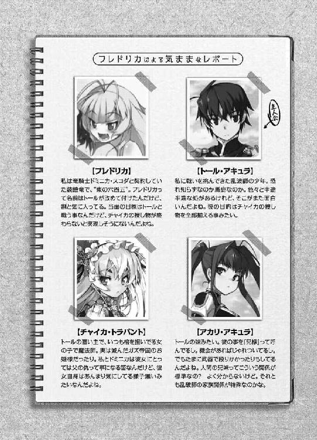

| 棺姫のチャイカIII: 3 (富士見ファンタジア文庫) | |
| 榊 一郎 & なまにくＡＴＫ | |
| 富士見書房 (2011) | |

棺姫のチャイカⅢ
 一郎
一郎

富士見ファンタジア文庫
本作品の全部または一部を無断で複製、転載、配信、送信したり、ホームページ上に転載することを禁止します。また、本作品の内容を無断で改変、改ざん等を行うことも禁止します。
本作品購入時にご承諾いただいた規約により、有償・無償にかかわらず本作品を第三者に譲渡することはできません。
本作品を示すサムネイルなどのイメージ画像は、再ダウンロード時に予告なく変更される場合があります。
本作品は縦書きでレイアウトされています。
また、ご覧になるリーディングシステムにより、表示の差が認められることがあります。
口絵・本文イラスト なまにくＡＴＫ（ニトロプラス）
口絵・本文デザイン Lightning

序章 始まりの裏切り
PRIMAL DOUBLECROSS
天から耳を聾するかの様な轟音が降ってくる。
一切の容赦無く......ひたすら一方的に。
勿論、騒々しいのは戦場の常──迸る怒号罵声は勿論の事、剣戟の音から爆発の音まで、死の威嚇に満ちた響きには事欠かない。歴戦の兵ともなると、それらが渾然一体となって奏でられる戦陣の交響曲に、むしろ高揚感さえ覚えるという。
「～～～～～!?」
だが......そうした古参兵ですらも、怯える音というものがある。
戦場にありながらも、それは既に闘争の音ではなかった。
ただ圧倒的な威力を以て、相手を叩き潰すだけの──破壊音。
憤怒も、悲嘆も、恐怖も、憎悪も、一切合切を顧みず、ただ一方的に殲滅するだけの行為を『戦闘』とは呼ぶまい。雪崩や洪水に巻き込まれて死ぬ事に名誉を覚える者は居ないだろう。一矢報いる事も無く殺されるだけならば家畜も同じだ。
「～～～！ ～～～!!」
今──魔法師シモン・スカニアの頭上に降り注ぐ轟音がまさにそれだった。
場所は薄暗い山間部。
宵闇が降り積もる山と山の、文字通りに狭間である。
左右は草木の類にも乏しい岩山で、動物の姿もほぼ皆無、風の通りも少なく......本来であれば、日没と共に時が止まったかの様な静寂に満ちる筈の場所だった。
「～～～～～～!!」
仰ぎ見れば、空に、幾つもの穴を穿ったかの様な黒点の群れを見る事が出来る。それらはまるで日食の際の太陽の如く、揺らめく炎を纏いながら、次第に──見る間に大きくなってくる。轟々と皆殺しの咆哮を放ちつつ。
その一つ一つが文字通りに必殺、いや、必滅の威力を備えた『打撃体』だ。
局地戦用大規模殲滅系魔法〈轟槌雨〉。
大層な名前がついてはいるが、種を明かせば実の処、その威力の大半は単なる『落下』に過ぎない。炎でも雷でもない。ただモノが落ちてくるだけの事だ。
物体は上から下に落ちる。子供でも知っている常識だ。
だがその当たり前の現象ですらも......落下物の距離と質量と数量によっては、天変地異の様相を帯びる。小石ですらも、遥かな空の彼方から落とせば、いつしか矢にも優る速度を帯びて、立派な凶器に早変わりする。それが──一つ一つが人間一人では持ち上げられそうもない重量で、しかも雨の如く大量に、ともなれば威力は絶大、容易く町や村を滅ぼしてしまうのは自明の理だった。
そう。それは本来......敵の拠点を叩く為の魔法だった。
「～～～～～ッ！」
そもそも〈轟槌雨〉は手間暇の掛かる軍用攻撃魔法だ。
しかも標準的な規模で実行しようとすれば、魔法師が最低でも十人は要る上に、大出力の魔力源や魔法機器も必要になってくる。
予め魔法で造り上げた『素材物質』を目標上空に撒布──これは魔法を用いて打ち上げる場合もあれば、高高度飛空船に積んで上空で投下する場合もある──そしてこれが充分に拡散した時点で、本番の魔法を起動させるのだ。
遥か天空の果て、雲よりも更に上空にて造り出された魔法の『核』は、自ら作用場を展開し超高速で回転する事により、周囲の『素材物質』を巻き込み、圧縮しながら、急激に元の数万倍、いや数億倍、数兆倍にも成長してゆく。
その様子はまさしく、空気中の水蒸気をまとって成長する雨に等しい。
だがこの魔法が生み出すのは、無害な水滴などではない。
落下中の空気抵抗によって涙滴状に塑形されたその巨大な『打撃体』は、降りしきる雨粒の様な、途方も無い数で──しかも赤々と燃え上がりながら、振り下ろされる鉄槌の如き勢いで、地面に落ちてくる。
ただそれだけの単純な現象である。
だが、単純だけにどうしようもない。
魔法そのものを妨害しようにも、実際に魔法の効果が使われるのは遥かな空の高みであって──しかも攻撃を受ける側が『打撃体』に気付いた時点で、既に魔法の術式は終了してしまっている。魔法そのものを妨害する事は出来ないのだ。
後はただ......同じく大規模な防御系魔法を以て抗するしか、方法は無い。
重く、硬く、大きな『打撃体』が、しかも燃え上がりながら、次々と高速で落ちてくる最中──如何に達人が自慢の剣や槍を掲げてみても、何の役にも立つまい。愛用の武器ごと叩き潰されるか、あるいは入り乱れる衝撃波で吹き飛ばされるだけだ。
「～～ッ!? ～～～～！」
魔法ですら個人で出来る事には限りがある。
〈轟槌雨〉の前では──複数の魔法師が寄って集って、大出力の魔力源や、大型の魔法機械を用いて使うこの魔法の前では、一個人の小賢しい技や術などさして役に立たない。生半可な防御結果では、結界ごと叩き潰されるだけだ。
そう。どうしようもない。
いざ、この手の大規模殲滅系魔法に晒されれば、後はもう死ぬしかない──そう言われていた。だからこそ歴戦の兵士達ですら、この〈轟槌雨〉の降り注ぐ音を聴けば、絶望の表情を浮かべて、ただ無力に立ち尽くすだけなのだと。
しかし......
「あああああああああああああああああああああああああああああああッ!!」
魔法師シモン・スカニアは吼えた。
彼は──どうしても諦める事が出来なかったのだ。
嫌だ。死にたくない。
やるべき事が沢山、残っている。
やりたい事が幾つも残っている。
何より──彼の帰りを待っている女性がいる。
（こんな処で......こんな処で死んでたまるか！）
シモンは愛用の魔法機杖を高々と掲げると、恐怖と混乱に揺れる意識を必死に御して、術式を組み立てた。
「......バーレ......トゥト......エルム......ナイ......ナイ......！」
彼に生き残る機があるとすれば、それは〈轟槌雨〉の大規模魔法たる部分だ。
およそ魔法というものは、最終的に必ず誰か一人の魔法師の意志で『起動』されねばならない。規模の大きな魔法では複数の魔法師が術の発動に携わるが、それでも、最終的に魔法そのものの方向性を制御して決定付けるのは一人の魔法師だ。大型船は大人数で動かすが、その動きを最終的に統合制御するのは船長の役目であるのと同じ事である。
そして......
「......エーウ......ワオルン......アルチ......マルテア......ルル......アルフ......ライ......！」
それ故に、大規模魔法は、その威力にムラがある。
どうしても人間一人の認識力には限界があり、効果範囲の魔法の威力を均一に均しきる事が出来ない。ならば魔法による防御陣を最強強度で展開すれば、シモン一人が生き残る事位は可能かもしれなかった。
「顕れよ──」
シモン......一人だけが。
「〈超防殻〉......!!」
魔法の起動にシモンは成功した。
呪文の完成と同時に、素早く半透明の──青味を帯びた球状の防御結界が、魔法機杖を中心に展開してゆく。
〈超防殻〉はシモンが知る限り最強の防御系魔法だ。効果半径は小さく、展開中は移動も出来ないが、個人規模の攻撃系魔法ならばまずこれを突破出来ない。大規模殲滅魔法でも直撃さえしなければあるいは──
「............くっ！」
シモンは魔法機杖にしがみついた。
基本的に魔法の起動には魔法師の意志が必要となるが、それは起爆剤の様なものであって......現状維持や細部の制御は魔法機杖の担当になる。シモンとしてはもう後は運を天に任せるしかなかった。
〈超防殻〉は、とりあえずシモンを守ってくれていた。
衝撃を喰らう度にその表面には波紋状の歪みが走り、結界そのものが大きく歪んだが、いまだ術式は壊れる事無く機能し続けている。
「～～～ッ!!」
「～～～ッ!?」
すぐ傍に戦友の姿が見えた。
半透明の防御結界を通して、おおよそ外の状況が見て取れる。
同じ部隊に所属する戦友達は、何事か叫んでいる様だ。だが彼等の声は降り注ぐ〈轟槌雨〉の音にかき消されて聞こえない。結界表面に走る波紋のせいで、口元の動きもはっきりとは見えない。
「～～～！」
その中の一人が、救いを求める様にシモンに向けて手を伸ばした。
風景に走る波紋と波紋の隙間──奇跡の様にその口の動きがシモンには見えた。
──シモン。タスケテ。
次の......瞬間。
「──ッ！」
その戦友は『打撃体』の直撃を喰らって、消えた。
潰れた肉と血が飛び散る暇すら無いままに、一瞬で涙滴状の巨大な塊がシモンの戦友を地面の下へと押し込んでしまったのだ。
千切れた手首から先だけが、くるくると空中に舞う。
それはシモンの発動させた〈超防殻〉の表面に叩き付けられると、結界の表面に赤い指の跡を残してずるずると滑り落ちていった。
「～～～ッ!!」
「～～～ッ!!」
更に他の戦友達も何事か叫んでいる。
やはりシモンの耳にはその言葉が届かない。
だが何を言っているのかは想像がつく。先の者と同様『助けてくれ』か。あるいは──『裏切り者』といったところか。
「............くっ」
シモンの魔法が守れるのは一人だけだ。
それとて生き残れる可能性は低い。防御範囲を最低限に絞り、代わりに結界強度を限界まで上げて──それでもだ。ここで〈超防殻〉を一時的に解いて、防御半径を少しだけ広げれば、戦友を一人か二人は取り込めるかもしれないが......戦友共々シモンまでもが死んでしまう可能性が高い。そもそもこの状況下、最初に〈超防殻〉の起動に成功した事そのものが奇跡に近いのだ。
見捨てるしかない。
自分が生き残る為には──少しでもその可能性を上げる為には、戦友を全て見殺しにするしかないのだ。
「............仕方ない」
シモンは唸る様に言った。
誰に対してでもない。多分戦友達には──彼等の声が聞こえないのと同様に、シモンの声など聞こえはすまい。だからこれは多分、自分自身に対しての言葉だった。
「仕方ない。仕方ない。仕方ないんだ。仕方ないんだ！」
出来る事なら彼等を助けたかった。
戦場において、極端に接近戦に弱い魔法師の自分が生き残って来られたのは、近接戦闘を引き受ける剣士達や戦士達が居てくれたからだ。そんな事は百も承知だ。自分は何度も戦友達に命を救われてきた。
だが......だからといって今更〈超防殻〉を解く事など出来る筈が無いではないか。
それでは、高い確率で戦友達と一緒にシモンも死ぬ。
道連れに死ぬ事になど、何の意味も無い。
生き残れるなら一人でも生き残った方が良いではないか。全滅よりは生き残りが一人でも居た方がマシだ。誰にでも分かる理屈だ。
仕方ない。だからこれは仕方がない事なのだ。
「ひあっ......」
シモンは〈超防殻〉の中で頭を抱え──目を瞑り耳を押さえた。
降り注ぐ死の鉄槌。死んでゆく戦友達。
これ以上周りの風景を見ている事に耐えられそうも無かった。
もう自分に出来る事はやった。後は自分が生き残れる様に、ただひたすら祈るだけだ。
いや──
「............」
もう一つやるべき事が残っている。
裏切り者を殺すという作業が。
前述の通り──〈轟槌雨〉は本来、拠点攻撃用の魔法だ。手間暇の掛かる魔法で、使用を決めてもすぐに実行する事は出来ないし、『素材物質』撒布の関係から、土壇場で攻撃地点を大きく変更する事も出来ない。
つまり──シモン達の様な、小回りの利く遊撃部隊を相手に使われる事は殆ど無いのだ。
なのに何故こうも正確に時と場を特定して使われたのか？
偶然？ そんな筈は無い。
他には民家の一軒すら無いこんな場所を狙う意味が無い。
つまり敵は──シモン達の部隊がこの日、この時、この山間部を通過する事を知っていた事になる。そしてシモン達の部隊は──遊撃隊は、隠密行動や奇襲が本領だ。部隊に直接関わり合いのある人間しか、その行動予定は知らない筈だった。
敵方と内通した情報提供者が──裏切り者が居る。
上官か。あるいは負傷して作戦行動から外れている同僚か。あるいはその家族や恋人や親友の類か。いずれにせよ立場を悪用してシモン達を敵に売った奴が居るのは間違い無い。
「許さない......絶対に許さない......！」
裏切り者は殺す。
死んでいった──今死につつある仲間達の分まで、苦しめて殺してやる。
シモンは赤ん坊の様に結界の中で身を縮めながら誓った。
「絶対に殺してやる......！」
仲間を見捨て──仲間の声なき怨嗟の叫びから眼を逸らして自分だけを守り。
シモンはただ、裏切り者の事を憎む事で、生き延びようと決心していた。
第一章 狭間にて
IN THE INTERVAL
それは──地獄もかくやと思える様な風景だった。
辺り一面、草一本も見当たらない。岩や砂ばかりで構成された、凹凸の激しい──その癖、一歩引いて見れば代わり映えのしない地面が、延々と広がっている。どちらを向いても、風景の半ばはあちこちから立ち上る白煙の為に霞んで潰れ、更には濃密に漂う異臭が、視覚のみならず嗅覚までをも混乱させていた。
色彩に乏しく変化にも乏しい。
およそ生命の営みとは縁遠い場所だ。
しかも単に『空っぽ』であるだけの冷たい荒野とは異なり......異臭と熱が積極的にこの地に踏み込んだ者を脅かす。此処は毒に満ちた地なのだと。
だが──そんな場所の真ん中で。
「はぁ............」
トール・アキュラは緩んでいた。
弛緩していた。全身これでもかという位に弛みきっていた。
珍しい事である。
トールは青年──いや角度によっては少年と言っても通用しそうな印象の若者だ。黒髪と黒瞳は特に珍しい特徴でもないし、目鼻立ちの整い方も並より少し上、といった程度で特筆する様な器量でもないが......何処か若者らしからぬ、奇妙に老成した様な、気怠い雰囲気が彼にはあった。
人間は、過ごした時間ではなく、重ねた経験の数だけ大人びる。
苦労人が老けて見えるのも同じ理屈だ。世間的に見れば若干特異な環境で育ったトールが、実年齢以上に見えてしまうのは、当然と言えば当然だった。
「......気持ちいい......」
トールは大岩に背中を預け頭上を見上げる。
立っても修練。座っても修練。寝てさえ修練。
物心ついた時からずっとそういう生き方をトールはしてきた。極論してしまえば彼は四六時中──半ば無意識の内に自らを鍛えている。腕の上げ下げ、脚の踏み出しから、呼吸や鼓動に至るまで、随意、不随意を問わず、ありとあらゆる肉体動作が、修練となる様に意識の底に刷り込まれているのだ。
魚は泳ぎ方を練習しない。鳥は飛び方を練習しない。
これと同じ事である。
お陰でしばらくだらだらとした生活をしていても、現状維持程度の事は出来ていた。
しかし......逆にそこまで無意識の修練が身に刻まれていると、今度は逆に意識的な『休養』が必要になってくる。トールの肉体は放っておくと延々と修練を続けてひたすら疲れていくだけになってしまっているのだ。
お陰で、ある限界を超えると、疲労が蓄積してぶっ倒れる、などという無様な事も起こり得る。
ある種の動物や、達人の域に達した使い手ともなれば、半身を休めて半身を鍛えたり、『鍛えながら休む』などという器用な事が出来たりするらしいのだが......さすがに弱冠二十歳、まだまだ若輩者のトールには無理な話だ。
まあそういう訳で──
「............はぁ」
彼は肩まで湯に浸かりながら長々と息を吐いた。
身体のあちこちに凝っていた『疲れ』の塊が──筋肉や血管や神経に貼り付いていた緊張が、緩やかに溶けて拡散していくのが分かる。軽く目を閉じると全身の温もり方や血の巡り方までが、手に取る様に分かった。
彼が居るのは──温泉の中だ。
此処からは、立ちこめる白煙の為に周囲の風景は殆ど見えないが──すぐ近くには幾つかの岩山が並び、独特の景観を造り出している。いずれもがその内に高熱を抱えた火山で、山肌には噴火で出来た黒い溶岩石が目立つ。
立ちこめる異臭と白煙は、熱せられた硫黄と地下水によるものだ。
トールの居る辺りも元々はただの砂礫が堆積した地面だったのだが──近くに川が流れている事から、駄目で元々、と掘ってみれば適温の湯が噴き出てきた。そこでこれ幸いと、即席の温泉で身体を休める事にしたのである。
「五年ぶり......か」
白煙の間から見える空を仰ぎながらトールは呟いた。
実はトール達が住んでいたアキュラの里も此処と似た様な地形になっていて、やはり温泉が湧き出ていた。お陰で各種修行の後にはよく温泉で身体を休めたものである。
だがアキュラの里が取り潰されてからは、温泉は、とんとご無沙汰──かといってその日暮らしで食べる物にも事欠いていたトール達に、風呂を沸かすだけの余裕も無く、大抵は川や池で身体を洗う日々が続いていたのだ。
だからこそ、約五年ぶりの温泉はしみじみと身体に染みる。
「............ん」
勿論、湯に浸かっているトールは裸な訳である。
だが、だからといってそれが無防備と同義とは限らない。身体を休めはしても、いつでも常態に復帰できる様に──彼の身体は出来上がっている。
「............」
トールは眼を細めて湯から手を伸ばした。
即席の温泉は、掘った部分が崩れないようにと、比較的大きめの石や岩を幾つか、淵の部分に並べて固めてある。その中でも一際大きい岩の上に、トールの衣装は畳んで置かれていた。
指先で探ると目当てのものはすぐに見つかった。
手裏剣である。
基本的に投擲して使う為のものだが......柄が付いているので握って使う事も出来る。本来の刀剣類に比べれば脆弱で粗雑な造りだが、急場凌ぎにこれで斬撃を受けたり、逆に斬り掛かったりも出来る。普段トールが愛用している二本の小剣はこの場に持ってきていない。やや構造が複雑なせいで、湿気の多い所に持ち込むと、傷み易いからだ。
「......アカリ？」
背中を預けていた岩から離れて振り返り、分厚く立ちこめる白煙の向こうに視線を向けてトールは呟く。
「......じゃないよな」
先程から近付いてくる気配の事である。
トールの義理の妹は現在、採取した硫黄の加工に忙しい筈だ。
彼女は各種薬剤の調合──いわゆる薬研を修めている為、硫黄を原料に爆薬や毒薬、果ては気付け薬の類まで作る事が出来る。そして、トール達の様な商売でそれらの薬剤は何かと重宝する。足りなくて困る事はあっても、あり過ぎて困るという事はまず無かった。
となると──
「チャイカか」
まるでトールのその一言を待っていたかの如く──ゆらりと湯気を掻き分ける様にして一人の少女が姿を現した。
華奢な体つきの少女である。
強く抱き締めれば折れてしまいそうな──そんな繊細な印象があった。手脚は細く、全体的に肉付きが薄い。不健康な痩せ方ではないが、胸の膨らみは少し控えめで、多分に発達の余地を残している印象だった。色気の類を求めるならば、まだ数年を待たねばならないだろう。
眼はやや吊り気味で、猫を想わせるが、きついという印象ではなく──むしろ子猫の愛らしさを連想する者も多かろう。
隙無く整ったその顔立ちは彼女自身が一種の工芸品の様で、何かを足す事も引く事も、均衡を崩しかねない。それどころか幼い時も老いた時もまるで想像がつかないのだ。生まれた時から死ぬまで少女のままであるかの様な──現時点で完成しきった可憐な美しさがそこにあった。
長い銀髪と、そして紫水晶の様な瞳が、尚更にその印象を強める。普段は白と黒を基調とした、喪服の如き衣装に身を包んでいるのだが、今は一糸纏わぬその姿──余計に穢れ無き乙女の裸身は、眩しくトールの眼に映った。
チャイカ・トラバント。
普段はそう名乗っている──トールの雇い主だ。もっと端的に言えば乱破師トールが仕える主人である。もっとも年齢が下である事に加えて、チャイカも細かい事にあまりこだわらないので、主従というよりもかなりざっくばらんな関係になってしまっているが。
「──って」
トールは思わず悲鳴じみた声を上げた。
「何やってんだ、お前は!?」
いくらあまり気を遣う事の無い間柄だからといって、いきなり何の脈絡も無く、互いに裸身を晒し合う様な関係でもない。
トールは慌てて湯の中で回転し、近付いてくる少女に背中を向けた。
チャイカの下着姿まではトールも見た事があるが──彼女は割とその辺、無頓着である──さすがに一糸まとわぬ全裸というのは初めてだ。
「......トール」
水音が──いや湯の跳ねる音がトールの背中に届く。
チャイカが、トールと同じく湯の中に身を沈めたのだろう。
こういう時に感覚が鋭いと色々面倒だ。トールは彼女が近付いてくる気配を──そして彼のすぐ傍にまで来た事を感じ取っていた。手を伸ばせば互いに触れられる様な距離である。迂闊に振り返れば眼の逸らし様が無い。
「何考えてるんだよ!?」
「......何？」
不思議そうな声が尋ねてくる。
何の淫靡さも含まない──まるで言葉を覚えたての幼児の様な口調であり声音だ。
「いやだから......」
そこでトールは言葉に詰まった。
チャイカは元々北方の大国、ガズ帝国の姫君だった。
そして大抵の場合に王族や大貴族は庶民と異なる価値観を持っている。常に暗殺の危険と隣り合わせの権力者達は、風呂だろうが用足しだろうが──そして伴侶や愛人との情交の最中だろうが、すぐ傍に護衛の者を置く。乱破師がその役目に任ぜられる事もある為、その手の話はトールも聞いた事があった。
犬に裸を見られて恥ずかしがる人間は居まい。
チャイカにとってトールが、元より恋愛感情の対象でないのなら、そもそも羞恥心を感じない可能性もある訳で。
（だからってこっちはじろじろ見る訳にいかねえだろうがよ!?）
トールとて若い男であるのだから、主義主張はさておいても、同じく若い女性の裸体には反応してしまう所がある訳で。
「トール......」
だがそんなトールの懊悩なんぞまるで気にした様子も無く、むしろそれを弄ぶかの如くに、チャイカの指先がトールの背中に触れた。
いや。それどころか──
「......トール」
吐息がトールの首筋に触れる。
本来ならば、チャイカの身の丈はトールの肩の辺りまでしかないのだが......今はトールが湯の中で膝立ちの状態なので、むしろ頭の位置はチャイカの方が高い。迂闊に振り返れば、首から胸の辺りを避け様も無く、見せつけられる位置関係である。
「トール......」
囁く声がひどく近い。
声の調子から、彼女が僅かに身を屈めているのが分かる。
まるでトールの首筋に口吻をしようとするかの如くに──
「............」
トールは唸る様な声を漏らす。
次の瞬間──
──ぎゃじっ。
振り向きざまにトールが突き出した手裏剣が耳障りな音を立てていた。
チャイカの歯に──文字通り食い止められて。
「............」
「............」
二人の間に奇妙な沈黙が横たわる。
トールは動かずチャイカも動かない。
やがてトールの得物をくわえたままチャイカは──眉を顰めて言った。
「なにすんの」
「それはこっちの台詞だ」
トールはチャイカを睨み据えながら言った。
「何の積もりだ──フレドリカ」
「奇襲だけど」
とあっさりチャイカは──否、チャイカの姿をしたそれは言ってきた。
歯はがっちり手裏剣の切っ先をくわえているのに、何故か発音は不気味な程に明瞭である。そもそも声の出す仕組みが人間とは違うのかもしれない。
「その格好は何だよ？」
「何って。裸だけど？」
「だからどうして裸なんだよ」
「沐浴中だからだよ？ トールだって、だから裸なんでしょ？」
何を言ってるの、君？ と言わんばかりの口調である。
「......いやまあそりゃそうだけどな！」
トールはやけくそ気味に言った。
「どーしてお前が裸で、俺の風呂の最中に乱入してきてるかって聞いてるんだよ！」
「だから奇襲だってば」
と──ようやく手裏剣の切っ先を離して後ずさり、少し距離を置きながらフレドリカと呼ばれたそれは答えた。
喋る度にその可憐な口元から、ちらりちらりと八重歯が──というかやや小さめの牙が見える。トールが手裏剣を咄嗟に構えなければ、アレが彼の首筋にがっぷりと食い込んでいた事だろう。
「沐浴の最中なら武器も手放すと思ったんだよね。トール、沐浴にまで武器を持参だなんて、いくらなんでも非常識だよ？」
「お前に──つか、他の誰に説かれてもお前に常識を説かれる筋合いはねえよ!!」
とトールは喚いた。
他の誰よりも、この娘に人としての常識を疑われる程、屈辱的な事は無い。
そもそもフレドリカは人間ではない。
装鎧竜と呼ばれる──棄獣の一種だ。彼等の魔法は基本的に自身の身体を自由自在に操り変形させるもので、戦となれば表皮を鎧と化し、自らの身体そのものを巨大化させて事に挑む。多くの者は装鎧竜のそうした側面しか知らないが──しかし実際には、装鎧竜はその気になれば、より小さい姿に変化する事も出来るのだ。
例えば──人間の少女の様な。
「......残念。喉笛、噛み千切れると思ったんだけどなあ」
今一つ緊張感の無い口調で、そんな事を言うフレドリカ。まるでちょっとした悪戯が不発に終わって残念がっているかの様な、気安さだった。
この装鎧竜は──ある一件からトールの事を付け狙っている。
彼を殺すのを目的と言って憚らないのだ。だがこれはトールが憎いとか何かの使命だとかいう話でもなく、単に、『他にする事が無いから』である様だ。
なので......トール達のすぐ傍に居るかと思えば、ふらっと姿を消してしまう事もあり、まるで猫の様に、ひどく気紛れな印象が強い。人間ではないのだから、人間の価値観を当てはめてその行動を理解しようと思う方が間違いなのだろうが──とにかくトールはこの棄獣娘を扱いあぐねていた。
「でもトール？」
チャイカの顔と身体をしたままフレドリカは尋ねてきた。
「いつ頃気付いたの？」
「......最初っからだよ」
とトールは言った。
「確信したのは、ぎりぎりだったけどな」
「ちゃんとチャイカの顔も身体も真似てた筈なんだけどなあ」
「............確かにそっくりだけどな」
こうして向かい合って居てすら、ともすればチャイカに見えてしまう。
もっとも細かな仕草は明らかにチャイカ本人と違うが──それは先程、背中を向けていた為に殆ど見えていなかった訳で。口調にしても先程は断片的だった為に本物との差異を明確に意識出来る程ではなかった。
「じゃあどうして？ 気配とか？」
「............あー」
トールは頬を掻いて言った。
「胸だよ」
「え？ 胸？」
「チャイカの胸はもっと小さい」
「え？ そう？ きっちり見て写した積もりなんだけど」
「あいつ、胸は詰め物してるぞ。普段着の上から見ただけじゃ分からんだろ」
「トール？」
「何だよ」
「トールはじゃあ、チャイカの裸見た事あるんだ？ さすが」
「下着姿を見た事あるだけだよ！ 何が『さすが』なんだ何が!?」
この怪物相手にいちいち真面目に反論するのも無意味だと分かっているのだが──ついつい言い返してしまうのは、やはり人の、それも少女の姿を採っているからか。
「女の子を手込めにする事にかけてはフェルビスト大陸随一だってアカリが」
「デマを真に受けてんじゃねえよ！」
「そっか......」
トールの悲痛とも言える叫びを、しかしフレドリカは殆ど無視。
「もうちょっと胸を小さくしていたらトールも騙されてたんだね」
などと言いつつ、フレドリカは自分の胸を掌で左右から寄せたり引いたりしている。二つの控えめな膨らみが、それはもう柔らかそうにトールの目の前で形を変える──
「やめんか！」
トールは喚いてまた背中を向けた。
そして......
「──あ？」
「あ......？」
チャイカと眼が合った。
紫の瞳が瞬きしてトールを見つめている。
一瞬──トールは混乱した。
チャイカの姿をしたフレドリカから眼を逸らした筈なのに、どうして自分はチャイカと真正面から見つめ合っているのか。可憐な目鼻立ちも、癖の無い銀の長髪も、チャイカそのものだ。でもってその鎖骨の下の控えめな胸も、こちらは確かに本物の──
「............」
思わず目を逸らす様に背後を振り返ると、そこには、やっぱりチャイカの格好をしたフレドリカが居て。トールは目のやり場に困ってとりあえず上を向いた。
「どうしたのトール？ 鼻血でも出た？」
「違うわッ！」
「むう......？」
後から現れた方のチャイカは、入浴するというのに、自分の身長程もある黒い棺桶を此処まで持ち込んできている。どうやら見える処にこれが無いと落ち着かないらしい。この点からも、こちらのチャイカが本物なのは明らかだった。
「むむむっ......」
どうもチャイカは驚いている様だった。
まあ流石に──自分と同じ顔をした少女が居れば吃驚もするだろう。
しかもトールと一緒、まるで抱き合うかの様な距離、ともなると......まあ、色々とあらぬ誤解が生じたりもする訳で。
「いや──あのなチャイカ」
トールは慌てて言い繕うとするものの、咄嗟に上手い言葉が出てこない。
対してチャイカは、よろめく様に一歩下がってから、震える手でもう一人の自分を──トールのすぐ隣に立って首を傾げているフレドリカを指差した。
「胸っ!? 増量!?」
「何を置いても先ずそれかよ!?」
思わずチャイカを振り返ってそう突っ込み──でもってまた慌てて視線を逸らすトール。
全く自分の周りの女共はどうして揃いも揃って慎みってものがない──というより、この手の事にひどく無頓着なのか。ひょっとしていちいち気にしている自分の方が馬鹿なのではないかという気にもなってくる。まあ元王女に棄獣の擬態......どちらも常識的な羞恥心など持ち合わせていないのは分かっているのだが。
「豊胸。秘訣。是非教授」
ざばざばと湯の中に入ってフレドリカに詰め寄るチャイカ。
「これはねー。魔法でやると簡単だよ」
「無茶言うなよ、お前も!?」
装鎧竜の変身の魔法は基本的に装鎧竜自身と、その一部と認識された対象にしか及ばない。また変身の魔法は装鎧竜独自のもので、人間の魔法にはこれに相当するものは存在しない──という話をトールは以前チャイカから聞いている。
「フレドリカの魔法は、契約でもせん限り他人に及ばないだろ」
一時的に噛み付くなり何なりして『仮契約』すれば、傷を治癒する程度の事は出来る様だが──完全に『違う形に変形』する場合は、その変形を安定させる意味でも、『仮契約』では足りないらしい。
「契約！」
「そっかー。じゃあ腕一本交換ね」
「飯のオカズ交換する様な気安さで言ってんじゃねえよ!?」
確か竜騎士の契約については、腕一本なり、足一本なり、それなりの分量の肉体を、竜と交換移植せねばならない筈なのだが。
「冗談だよ冗ー談」
とフレドリカは言った。
「トールって冗談が分からない人なんだね」
「......お前の冗談はつくづく分かりにくいんだよ!!」
何だか泣きたい様な気持ちになってトールは喚いた。

永い永い戦国時代があった。
三百年に及ぶその闘争の時代は、当然の様に人々の価値観にも影響を与えてきた。
戦乱の中に生まれ戦乱の中に死ぬ。
それが当たり前の時代だったのだ。
当然──人々の生活の全ては戦争を前提として組み立てられていく。
その極致の一つが『乱破師』と呼ばれる者達の存在だった。
戦場における便利屋、正規の騎士や戦士が嫌がる汚れ仕事を引き受ける忌まれ役、闇に蠢く戦争職人......彼等はそういう存在だった。目的の為には手段を選ばない。卑怯と罵られ卑劣と蔑まれても羞じない。そういう者達だからこそ、こなせる影働きとも言うべき部分が、どの戦場にも確かに存在していたのだ。
暗殺。扇動。謀略。奇襲。その他諸々。
正規の戦い方では打開出来ない局面ともなれば、それは乱破師の独壇場であった。
需要があれば当然に供給が生じる。
いつしか乱破師は個々に自然発生するのではなく、『里』と呼ばれる組織が育成し、派遣するという形に落ち着いていった。より能力が高い乱破師を効率良く『生産』する為には、それは当然の方法だった。
幾つもの流派が興され、それぞれの里は権力者の求めに応じて数多くの乱破師を育て、彼等を各地の戦乱へと送り出してきた。元より使い捨ての駒として求められている事は里の側も承知の上、故に同じ里から敵対する両陣営に乱破師が派遣される事も少なくなかった。乱破師に思想は無い。求められれば如何なる側にも付くのが乱破師であり......その事については権力者側も殊更に咎め立てしてこなかった。
需要と供給の均衡がとれていたとも言えるだろう。
だが......永い戦国時代は終わった。
いざ平和な時代が訪れれば、乱破師は『志持たぬ狗』だの『卑怯卑劣』だのと罵られ忌み嫌われる部分ばかりが強調して知られる様になった。これは乱破師の技能を恐れた権力者達の風評操作もあったのだろう。彼等の能力は反乱や暴動を扇動するのにうってつけだった。今まで散々乱破師を使ってきた各国はその『威力』をよく知っていたのだ。
いずれにせよ、平和な時代の到来と共に乱破師達は居場所を失った。
それどころか──掌を返した権力者達によって殆どの『里』は潰されたのだ。
多くの乱破師は逃散を余儀なくされた。
トール・アキュラもまたそんな乱破師の一人である。
正しくは乱破師の卵だったと言った方が良いかもしれないが。
彼がアキュラの里を出て戦場に立つ前に──戦争は終わってしまった。
生まれてからずっとその身に叩き込まれてきた数々の技能、戦場でこそ最も活きるそれを、事実上、封じられたのだ。
今や乱破師は飼い主に棄てられた野良犬も同然だ。
存在に価値が全く無い。『必要だ』と言われてせっせと殖やしてきたら──いきなり『要らない』と言われてしまった。それどころか無意味に殖えれば危険だとみなされる。
トールは......ふて腐れた。
自分は何の為に生まれてきたのか。
自分は何を目的に生きてきたのか。
何もかもが馬鹿馬鹿しくなって──彼は働く事も無く、ただ無為に日々を過ごしていた。
そんな時だ、トールがチャイカ・トラバントと名乗る少女と出会ったのは。
彼女と共に経験した一連の出来事の中で、トールは幾つかの事を知った。
チャイカが幾つもに分割された父親の『遺体』を集めている事。
その父親とはかつての戦乱の中心人物と言われたガズ帝国皇帝である事。
そんなチャイカ姫を捕らえるべく、国家の後ろ盾を持った組織が動いている事。
正統後継者を得ればガズ帝国は復興し世は再び戦国時代に逆戻りするかもしれない事。
............等々。
トールは──これを好機と受け止めた。
戦乱上等だ。こんな居場所の無い平和な時代よりも、戦国時代の方がトールにとっては何倍もマシだった。何かと揉め事や争い事の多そうなチャイカの側に付けば、身に付けた技を持て余し生き腐れ続けるだけの日々とも決別できる。
そうしてトールはチャイカの従者となったのだ。
しかし......
「......トール、トール」
ちょいちょいとトールの背中を突いてくる指の感触。
振り返らなくても分かる。チャイカだ。
「今後。方針」
「どうせだから今、今後の事について、打ち合わせしときたいってさ」
と──フレドリカが言い添えてくる。
ちなみに視界の端で確認すると、フレドリカは既に金髪紅眼の──チャイカとは別の少女の姿に戻っている。
このフレドリカの少女形態、単に愛らしいという意味ならばチャイカとも良い勝負なのだが......雰囲気はむしろ逆だ。何処か無機的というか、人形的な雰囲気のチャイカに対して、フレドリカはやや生々しいというか、小型の獣をそのまま少女の姿にしたかの様な、活発で悪戯っぽい雰囲気が感じられる。
ちなみに変幻自在のフレドリカには『本当の姿』は無いに等しいらしいが、普段、この姿でトール達の前に出てくる事が一番多い。装鎧竜本来の姿でうろうろしていると、それだけで騒ぎになって面倒だから......というのがその理由の様だった。
「話は風呂から出てからにしろ」
少女達に背中を向けながらトールは言った。
現在──トールは温泉の淵に寄り掛かる様にして外側を向いている状態だ。
そしてチャイカとフレドリカは温泉の内側に二人して浸かっている。
二人共、見られても平気、特に頓着しないというのならば、無理に視線を逸らす必要は無いのだろうが──二人を前に、まかり間違って本当に鼻血でもだしてしまった日には、何か言い訳の利かない状況に追い込まれる様な気がして、トールは頑なに明後日の方向を向き続けているのだった。
「じゃあ沐浴終えて出る？」
「そうしろ」
「トールは？ 出ないの？ ずっと浸かってるけど」
と無邪気な口調でフレドリカが問うてくる。
「............」
口を噤むトール。
出られるものならとっくに出ている。
この温泉の湯は白濁気味なので、とりあえず、下半身を湯につけている限りは誤魔化せている訳だが。
「......チャイカ達は」
トールの無言をどう捉えたのか──フレドリカはそのまま話をする事にしたらしい。
「ガズ皇帝の遺体を探しているんだよね」
どうもそのまま話をする気になったのか、フレドリカがそんな事を尋ねてくる。
背後でチャイカの頷く気配がした。
「肯定」
「どうして？ そりゃガズ皇帝の遺体って相当な魔力源だって話だけど......別に単に魔力源っていうなら、他にもあるでしょ？」
「............」
チャイカが言葉に詰まるのを背中で聞くトール。
（そういえばまだ、フレドリカにはチャイカの素性は話してなかったっけか）
基本的に一定水準以上の知能を持った生物は、ただ生きているだけでもその身体に魔力を蓄積してゆく。これをそのまま魔法として使う場合もあるが──人間の場合、あくまで自分の中の魔力は、『種火』として使うだけで、実際に魔法行使に消費する魔力は、魔力源と呼ばれるものを使う。
即ち、知的生物の遺骸だ。
取扱いの簡便さから、知的生物の化石──つまりは棄獣の化石が最も良いとされ、これを化石念料と呼ぶが......適切な処置をすれば、化石でなくとも魔力源には成り得る。
三百年生きたとも言われ、自身も大魔法使いとして名高いガズ皇帝の遺体ならば、確かに魔力源としては申し分ない。
が──逆に言えば、それは代替可能なものとも言える。
例えばそれは、金銭的価値と同じ様なもので......あくまで『掌に載る程度』という事にこだわるなら、大粒の宝石などは代替出来ない貴重品だが、単に『同等の金銭的価値』を求めるだけならば、金を積んでも同じだけの額にはなる。
単に魔力量という意味ならば、無理にガズ皇帝の遺体を集める意味はあまり無いのだ。
「フレドリカ」
トールは少女達に対して頑なに背を向けたまま言った。
「一つ聞きたいんだが......お前はアルトゥール・ガズ皇帝についてどう思っている？」
「どうって？」
「連合諸国が言う様に、諸悪の根源の大悪人だと思ってるかって事さ」
「......どうかなあ」
フレドリカの口調にはおよそ屈託が無い。
まるで好きな色や味を問われて答えるかの様な気楽さだった。
「私はドミニカの目的に従っただけだしね。確かにガズ帝国首都攻略戦には参加したけれど、正直、特にどうとも思わないよ。ドミニカはさておき、私は城の中までは入ってないし──だから直接顔も見てないし」
「......なるほど」
トールは短く溜め息をついた。
チャイカの目的と素性については、隠しておくのも手ではあった。フレドリカは今一つ何を考えているか分からない処がある。彼女がいきなり敵側に回ってもおかしくはないのだ。ならば情報は出来るだけ与えない方がいい──
「私......娘」
──などとトールが考えていた矢先に。
「アルトゥール・ガズ、父様」
チャイカが自らそう告白した。
溜め息をつくトール。
どうもチャイカはこのフレドリカという棄獣に対して警戒心が薄い。まあトールの様に四六時中フレドリカから狙われている訳でもなし、相手が同い年位の少女の姿をしていれば、警戒心も緩んで当然なのかもしれないが。
「......え？」
さすがのフレドリカもこの告白には少し驚いた様子だった。
「チャイカの本名は、チャイカ・ガズだ」
さすがにここで否定しても、もう意味はない。
もう一度溜め息をついてからトールは言い添えた。
「別に魔力源がどうとか、関係ないんだよ。チャイカはただ父親の遺体をきちんと弔いたいだけなんだとさ」
「......『弔う』」
きょとんとした様子で──まるで異国の聴き慣れぬ言葉を聞いたかの様に、フレドリカはその単語を口にした。
「ああ。弔う。弔う......ね。うん」
何やら噛み締める様にその単語を呟きながら、フレドリカは頷いている。
「人間って割とそういうのにこだわるよね」
「お前だってこだわってたろうが」
「え？ あ──ドミニカの事？」
フレドリカの声に困惑の響きが混じる。
この棄獣娘は、かつての契約主──ドミニカ・スコダの死に際の望みを叶えてやる為に、わざわざドミニカの姿を映してこれを演じ、トール達に戦いを挑んできた。トールにしてみればこれはフレドリカなりの、ドミニカの弔い方だと思っていたのだが......
「んー......あれは、ちょっと違う」
「違う？ 何がだよ」
「あれって弔いじゃないよ」
フレドリカはあっさりそう言った。
「私とドミニカは一体だったからね。ドミニカの望みは私の望みだった。だからドミニカの望みを形だけでも叶えたかった。それだけだよ」
「それが弔うって事じゃないのか？」
「ガズ皇帝が言ったの？ 自分の死体を集めてくれって」
「いや......それは」
勿論トールにはその辺の細かな事情は分からない。
だが──
「私達みたいに『契約』していた訳でもないでしょ？」
フレドリカは言った。
「人間は嘘を吐くし、裏切りもするし、だから実際に契約で繋がりでもしない限り、何を望んでるかなんて分からないよ？」
「それはそうかもしれないけどな」
確かチャイカは帝国滅亡前後の記憶が曖昧だった筈だ。原因は分からないが、自分がどうやって帝国から逃げ出したのか──その辺りの事も何も覚えていないのだとか。
ならばガズ皇帝が本当に『遺体を集めろ』とチャイカに命じていたとしても......彼女はそれを覚えていない事になる。
つまり彼女が『遺体』を集めるのは、ガズ皇帝の遺志ではない。
遺体を集めるのは、あくまでチャイカの意志だ。
（なるほど。フレドリカにとっちゃ、『弔う』ってのは『自己満足』なのか）
確かにそういう風に考える事も出来るだろう。
そもそも死者は嘆かない。
放置され忘却される事を哀しむのは──実は生きている人間の方だ。今はもう居ない筈の死者に感情移入して、勝手に哀しい気持ちになっているだけ、とも言える。
「ひょっとして、その為だけに、私と戦ったの？」
フレドリカの口調には呆れた様な響きがあった。
「命の危険まで冒して？」
「その為だけってのは、随分な言いぐさだな」
眉を顰めてトールは言った。
「チャイカにとっては重要な事なんだろうさ。他人にとっては無意味でも──」
「いや、そうじゃなくてね」
フレドリカはひょいとトールの横に回り込んできて言った。
「トール。君の事」
「俺の？」
努めてフレドリカの裸身に視線を向けないようにしながらトールは問うた。
「トールにとって、ガズ皇帝の遺体を集める事に、何の意味があるの？」
「俺は──俺には意味なんかねえよ」
見ず知らずの他人の遺体。それ以上でもなければそれ以下でもない。
トールがもし魔法師であったならば、良質の魔力源として、あるいは大魔法師の遺体という意味で、また違う考えを抱く事もあったかもしれないが──
「俺はただ、チャイカの望みを叶えてやりたいと思っただけだ」
「どうして？」
更にフレドリカは尋ねてくる。
問い詰める様な口調ではない。
ただ純然と不思議がっている様な──そんな声だった。
「トールはチャイカと『契約』した訳でもないし、チャイカの望みが叶わなかったからって、何か損する訳でもないでしょ？」
フレドリカの言う契約とは竜騎士の契約の事だろう。
トールもチャイカに形の上では傭われている事になっているが、何か書面に認めてある訳でもなし、他にも何か明確な証──竜騎士の契約の様な、肉体の一部の交換移植も含め──がある訳ではない。
言ってしまえばそれは単なる口約束だ。
しかし......
「まあ、つがいだから、というのならまだ分かるけれど」
「つがい？」
「自分の子を産んでくれる相手だからって言うのなら、まだ分かるんだけど」
「......おまえな」
「だってそれは、生き物として当たり前だからね」
呆れるトールに対して平然とフレドリカは言った。
「生きようとする。そして自分の血を残そうとする。それは当たり前で──それが行動の原動力になっているのは、何にも不思議が無いけれどね。トール、君のそれは、今一つよく分からないんだよ」
「............」
今まで乱破師となる為に生きてきた。
戦う為に生まれ戦う為に死ぬ──それが唯一の、乱破師としての、この世界との関わり方であった為に。
だが戦乱はある日唐突に終わり、トールはそれまで積んできた全てを否定された。
全て不要だと。全て無駄だと。
「......俺は、戦いたかったんだ」
呟く様にトールは言った。
「ドミニカの様に？」
「違う。戦って死にたかったんじゃない。戦って、何かを遺したかった。どうせいつかは死ぬ身なら、尚更に──な。そういう生き方しか俺は知らない。教えられてこなかった」
「............」
「だから、チャイカの話を聞いてそれに乗ったのさ」
苦笑じみた表情を浮かべてトールは言った。
「戦乱の元凶とも言われたガズ皇帝の遺体を集める娘。ガズ帝国の正統皇位継承者。下手をすれば世界は再び戦国期に逆戻りだ。乱破師の活躍の場も、出来る」
「そうなんだ」
紅い眼を瞬かせてフレドリカはじっとトールの横顔を覗き込んでくる。
「でもトール、確か『大事な人の目的を叶えるのが自分の目的』って言ったよね」
「......よく覚えてるな」
顔をしかめてトールは言った。
確かにドミニカの屋敷で食事をしていた際に、トールはそんな台詞を口にしている。
どうもそれをチャイカやアカリは変な方向に勘違いしていた様だ。そういえばそれについて──『大事な人』の意味については、彼女等には改めて説明をしたが、フレドリカにはしていなかった。
「まあね。それはどうなの？」
「チャイカは、ただ、目的を見失って腐ってるだけの俺に、もう一度、戦う事の──目的を改めて見つける切っ掛けをくれた。だから、俺の恩人なんだよ」
「......うーん......まあ、大体は分かったけど」
「本当かよ？」
とトールは横目でフレドリカを睨む。
どうもフレドリカは、本性が人間と違う生物である為か、話していて考え方が食い違う事も少なくない。フレドリカが『理解した』と言っても、根本的な所で何か誤解している可能性は依然として残っていた。
「でも根本的な疑問として」
フレドリカは、ふとトールの背後を──即ちチャイカの方を振り返って問うた。
「チャイカ。君......本当にガズ皇帝の娘なの？」
「むい!?」
素っ頓狂な声を上げるチャイカ。
思っても見なかった質問を──そもそもの大前提を疑う様な疑問を、いきなり投げ掛けられたからだろう。『お前は一体何者か？』と問われているのに等しい。
「何を言ってるんだお前は？」
呆れの口調でトールはフレドリカに言った。
チャイカがガズ皇帝の娘でなければ何だというのか。
そもそも当初──彼女が自分からガズ皇帝の娘だと名乗った訳ではない。トールが彼女の素性を知ったのは、彼女を追っている連中にそう告げられたからだ。チャイカは〈禁断皇帝〉の娘である。危険だから自分達が拘束すべく追いかけているのだ──と。
トールを騙す積もりならチャイカは最初から自分でチャイカ・ガズと名乗っている筈だ。
しかし......
「そもそもさ。ガズ皇帝の娘が、国と一緒に滅んだんじゃなくて、今こんな所をうろうろしている──不自然じゃない？」
フレドリカは首を傾げて言った。
「それは......」
前述の通り、チャイカはガズ帝国滅亡前後の記憶が無い。
どうやって滅び行く帝都から脱出したのか......そもそも当時は帝都に居たのかどうかすら分からないのだ。少なくともトールはチャイカからそう聞かされている。
「チャイカが嘘をついてるってのか？」
「本人に自覚が無いって可能性だってあるよ？」
「............」
トールは言葉に詰まった。
チャイカの記憶の欠落が、単に偶然のものではなくて、辻褄の合わない、不都合な部分を誤魔化す為の言い訳だとしたら......？ トール達を、というよりも自分自身をも騙す為の思い込みなのだとしたら？
「チャイカが、アルトゥール・ガズの実の娘であるって証拠は無いよね？」
「............」
それは確かに無い。
トールの背後では......チャイカが困惑しているのが気配からも分かる。
今更そんな事を問題にされるとは思っていなかったのだろう。フレドリカの言葉通り、チャイカが思い込みで自分自身まで騙しているのだとすれば、彼女もまた、依って立つ部分を壊されたかの様な、不安感を覚えているのかもしれない。
「何を以てトールはチャイカの事を信じたの？」
「............」
トールは咄嗟に答える事が出来なかった。
実の処......トールにとって、チャイカが本当にガズ帝国の姫君か否かは問題では無い。
彼女の望みを叶えてやりたい、彼女の望みを叶える過程がトールの生き甲斐にも成り得る、だからこそ今、トールは彼女に協力している。
ただそれだけの事だ。
しかし......
「まあその辺りの曖昧さに敢えて眼を瞑るのが人間の人間たる所以、かもね」
それぞれ黙するトールとチャイカを見て何をどう想ったのか──フレドリカは妙に嬉しそうな笑顔を浮かべると、そんな風に評してきた。
「やっぱり面白いね。人間の考え方は」
「......そう言われると今一つ釈然としねぇな」
憮然とした表情で言うトール。
曖昧だった部分をいきなり、明るみに引きずり出して晒した挙げ句、『面白い』の一言で話を閉じられては......流石にトールとしても、喉の奥に何かが引っかかったままの様な、奇妙な落ち着きの無さを感じてしまう。
トールは短く溜め息をついて──
「ところで兄様」
「おわっ!?」
──ふと視線を上げた先にアカリが居た。
「これは一体どういう状況なのだろうか？」
アカリ・アキュラ。
切れ長の双眸を備えた美しい娘だ。
普段は『身体にまとわりついて邪魔だから』と長い黒髪を後頭部で括ってまとめているが、今は紐を解いて普通に髪を下ろしている。これが、何処か怜悧な──まるで刃物の様に無駄の無い端的な美しさを、強調していた。
チャイカの様に庇護欲を誘う様な『可憐さ』ではなく、もっと単純な、野生動物のそれにも通じる様な力強い『優美さ』だ。全身の筋肉もよく均衡がとれており、強さと速さ、どちらかに偏るのではなく、その両面を発揮出来る様に整えられているのが分かる。
恐らく多くの獣がそうである様に──この娘の姿が一番美しく映えるのは、静かに佇む際ではなく、全力で走る、跳ぶ、とその肉体を駆使している瞬間だろう。
アカリは乱破師でトールの妹である。
トールと同様に黒髪と黒瞳の持ち主だが、実を言えば血は繋がっていない。
アキュラの里では捨て子や、貧しい農村等で親が育てきれずに持て余した子供を──本来ならば『間引き』されるべき子供を、買い取って育てる事も少なくない。能力を備えた人材がそのまま里の収入に繋がる為、いわば『仕入れ』の様な感覚で子供達を引き取ってくるのである。
結果として、アキュラの里においては『血の繋がり』の無い親子や兄弟姉妹というのは別に珍しくない。同じ里において同じ流派の技を学んできた事そのものが『家族の絆』になっているのである。もっとも、アキュラの里は敵対する両陣営に乱破師を派遣する事も少なくない為、『家族』同士で敵対する、などという事もごく自然に生じ得る。その際にはあっさり切断可能なのがアキュラの里の『家族の絆』だったりもする。
それはさておき......
「............」
トールは温泉の中にあって凍り付いていた。
現在──アカリはチャイカやフレドリカと同様『さあ今から入浴しますよ』と言わんばかりの全裸状態である。とりあえず長い髪が肩から胸に掛かっており、手拭いは手に掛けているので一部、トールの視線から遮られている部分はあるが。
「私が兄様の使う分まで火薬や毒薬や解毒剤の調合をしていた間に、兄様は何をしていたのかと問いたい」
言われてみれば確かにアカリの髪が少し汚れている。薬研の作業で付着した硫黄の粉やその他の薬剤なのだろう。当然、これらの薬物は早々に洗い流さないと髪が傷むので、彼女が沐浴に来るのは当然と言えば当然だった。
「......いや......単に......風呂に入って......」
「そうか。そうだな。風呂に入っているな。確かに」
アカリは大きく頷いた。
「全裸の少女二人と」
「............」
確かに事実としてはその通りな訳だが。
その内の片方は激しく凹凸に乏しい娘で、もう片方はあくまで少女の擬態をしているだけの獣なのだが、まあ、そんな事を主張してもあまり意味は無いのだろう──という事位はトールにも想像がついた。
「......アカリ」
「何だろう兄様」
「俺は断じて疚しい事はしてない」
とりあえず視線を手元に逃がしながらトールは言った。
実の処、アカリの裸は子供の頃に何度も見ているし、今更、恥ずかしがる相手でも無い訳だが......元々、身体の線の出たり引っ込んだりに乏しい少女二人がすぐ側に居るせいか、それなりに出る処は出て引っ込む処は引っ込んだアカリの体躯が、今更の様に、艶めかしく見えたりするのである。
「そうなのか」
微塵も揺らがぬ無表情で応じるアカリ。
疑う様子も無ければ、喜ぶ様子も無い。
この娘──相当な器量好しなのだが、いつも表情に乏しい。笑えばそれだけで魅力も倍増するだろうに......何故か喜怒哀楽が顔に出ないのだ。この為に何を考えているのか、付き合いの長いトールにも分からない事が多々ある。
「だったら、どうして眼を逸らすのだ？」
「どうしても何もねえだろっていうか──しゃがむなッ!!」
眼の前でしゃがんで彼の顔を覗き込んでくる妹にトールは喚いた──大変な努力をして視線を手元に逸らしつつ。
「とにかく疚しい事はしてない！ してねえったらしてねえよ！」
「そうか......」
アカリはしゃがんだまま、無表情に溜め息をついた。
「がっかりだ」
「お前は何を期待してるんだよ!?」
ばしゃんと湯を叩いて喚くトール。
「兄様ならば、目の前にこれでもかとさらけ出された女体を、ただ指を咥えて見ている様な愚は冒さないと信じていたのに......」
「だからお前の中の俺は一体どんな変態なんだよ」
「とても一言では語り尽くせないが──」
妙にきりりと口元を引き締めてアカリは言った。
「兄様が聞きたいというのなら、一晩掛けて語ろうと思う」
「聞きたくねえッ！」
「自ら問うておいて聞きたくないとは理不尽な」
そう言ってから──アカリはふと気付いた様子でぽんと己の掌に拳を打ち付ける。この娘の場合、表情に乏しい為、こうした仕草の一つ一つがやたら芝居がかって白々しく見えるのだが......まあそれはさておき。
「いや。これがいわゆる『焦らし』の技なのか。じりじりと理不尽な所業を続けた後に、唐突にでれでれと甘えてくる事の落差で、相手を陥落させるという奥義──」
「何処の奥義だそれは」
「さすがだ兄様」
「覚えの無い奥義で感心されても嬉しかねえ」
「トール。技巧派？」
「お前も変な処だけ摘んでいらん事言うな！」
背後のチャイカに喚いてから──溜め息をつくトール。
そんな彼を眺めながら......
「面白いね」
無意味に朗らかな口調でフレドリカがそう評した。
紙の様に薄い膜に三方を囲まれた手狭な空間。
そこに置かれた小さな座席に騎士アルベリック・ジレットは座っていた。
金髪碧眼の──端正な容貌の青年である。
目許は涼しげ、鼻筋はすっきりと通っており、実に典雅な雰囲気がある。単に顔立ちだけの事ではなく、しっかりと引き締められた口元といい、真っ直ぐに伸ばされた背筋といい、その物腰は『生真面目な青年貴族』そのまんまの印象だった。
彼が今、座っているのは魔法通信用の会話席だ。
白く薄い三枚の膜は、会話者から発せられた声を捉え──あるいは通信相手からの声を音として発する為の装置である。つまりは通信専用に作られた魔法機杖の一部だ。
『──ケーニグセグ王国の『英雄』だが』
魔法による通信手段は数種類存在する。
ただしジレット隊の移動拠点──機車〈エイプリル〉号が搭載しているものは、その中でも最も簡易な代物だ。他の通信手段はどうしても複雑で、機杖が大きくなってしまう上に、専門の魔法師を──つまりはつきっきりでその機杖を制御する魔法師を必要とする為、機車に積むのはあまり現実的ではない。
つまりジレット隊の用いている通信用魔法は、いつでも好きな時に相手と連絡がとれるという訳ではないのだ。予め時間を決めておいて、相手側も術式を発動させている必要がある。一方的に通信を送ってもそれは相手に受信されないまま散逸してしまうからだ。
故にこうした通信用魔法は、基本的に定時連絡専用として使われる。
『シモン・スカニアという魔法師が件の八人の一人に該当する様だ』
通信魔法の向こう側に居るのは──会話の相手は〈クリーマン機関〉の長、コンラート・シュタインメッツである。つまりはアルベリックの上司にあたる。
勿論、音声のみの通信なので、相手側には肘をつこうが寝転んでいようが分からない筈なのだが......アルベリックは、まるで目の前にコンラートが居るかの様に居住まいを正している。こういう処にこの青年騎士の生真面目さがよく表れていた。
『ただしケーニグセグ王国の側でも詳しい居場所は把握していない様だ』
「どういう事です？」
アルベリックはわずかに首を傾げて問うた。
彼の背後では部下達が──暗殺者の少女ヴィヴィや、副官の傭兵剣士ニコライ、魔法師マテウス、特殊兵レオナルドが、会話を聞いている。もっとも綺麗にコンラートの声が聞こえるのは会話席に座っているアルベリックだけで、席の外に居る彼等は、どうしても漏れ聞こえてくる断片的な言葉を拾うしかないのだが。
ちなみにアルベリックの部下にはもう一人......魔法師にして魔法機匠である少女ズィータが居る。彼女だけはアルベリックのすぐ脇、薄膜の向こう側で、機杖を用いて通信魔法を制御していた。
「ケーニグセグ王国が『英雄』の居場所を把握していないとは」
ここで言う『英雄』とは、戦国時代末期、ガズ帝国首都攻略戦において、主力部隊より先行し、ガズ帝国皇帝アルトゥール・ガズの殺害を実行した特攻隊八名の事を指す。それは同時に──世間には知られていないが──アルトゥール・ガズの遺体を分割し『戦利品』として持ち帰った者達の事でもあった。
実の処、この八名の『英雄』については、その名前が公表されていない。
この点については各国の思惑が色々と絡んでいる為の様だが──あくまで政治的配慮から公表されていないだけであって、軍や国の関係者は当然に英雄の名前を知っている。
なのに『英雄』の所属する国家が、居場所を把握していないとは一体どういう事か。
『このシモン・スカニアという男、徹底した厭世主義者というか、人間嫌いというか、そういう者であったらしいな。戦後すぐに逐電して王国軍でも正確な足取りが掴めていないのだとか』
「逐電？ 正式な形で軍から退いた訳ではないのですか？」
『その様だ。形としては脱走という事になる』
「............」
アルベリックは眉を顰めた。
世間に公表されなくとも英雄は英雄だ。軍内での扱いは悪くない──どころか昇進も俸禄も相当に優遇されていた筈だ。なのにどうして、わざわざ脱走などして行方をくらます必要があるのか。
『件の「八英雄」を含め、帝城への特攻隊となった者達は、元々、何か問題のある者が多かったという話だが──』
ガズ皇帝誅殺に関しては、万全を期す為に複数の特攻隊を帝城に突入させる事となった。正確な数はやはり公表されていないが、件の『八英雄』もそうした特攻隊の中の一つだったという。
他の事には一切構わずガズ皇帝を殺す事だけに行動する遊撃隊。戦闘能力において優秀な者達を用いたのは勿論だが──彼等の多くは人格的に難のある者が多かったという。
そもそも尋常な人間ならば、先ずこの特攻隊には志願しない。
数多くの二つ名を持っていたガズ帝国皇帝──アルトゥール・ガズ。
端的に彼の者を『怪物』と評する者も多い事からも分かる様に、アルトゥール・ガズは、個人的な戦闘能力においても他の追随を許さぬ存在であったと言われている。アルトゥール・ガズに人間の身で挑むなど自殺行為──そう言う者さえ居た位だ。
だからこそ、その狂気の沙汰に進んで参加した者達は何処か、自分の命を省みない様な、異常な部分を持っていたか、さもなくばのっぴきならない事情を──分の悪い賭けに自分の命を張ってでも、武勲を立てねばならない様な事情を抱えていたかのどちらかだ。
これもまた、最終的に『八英雄』の名が公表されなかった理由の一つだとも言われている。誉れ高き戦乱終結の英雄達──実はその多くが性格破綻者だと知れては、格好がつかないからだ。
だが......
『シモン・スカニアには殺人の嫌疑が掛かっていたそうだ』
「殺人──ですか？」
『勿論、戦場のものではない。自宅で、自分の妻と友人を殺した嫌疑がかけられていたそうだ。ただし証拠不十分であった事、シモン・スカニアが非常に優秀な魔法師であった事から、憲兵に捕らわれる事無く、戦線に復帰──その半年後に特攻隊に志願している』
「......どういう事でしょう？」
殺人の罪を有耶無耶にする為に、特攻隊に志願したのだろうか。
そして戦争が終わって自分の妻殺し、友殺しの罪が再び調べられる事を恐れて、姿を消したのだろうか。戦時のどさくさならばまだ誤魔化し様があろうが、平時ともなれば隠しきれずに露呈する犯罪も少なくあるまい。
『その辺りの細かな事情は、本人に聞かないと分からないが。いずれにせよ、シモン・スカニアは戦後すぐに行方不明になった。だが......更に調べていくと、ラデミオの町でシモン・スカニアを見たという情報が出てきた』
「ラデミオの町......」
ちらりと視線を背後に向けると、素早く獣耳を備えた少年──レオナルドが小さく折り畳んだ地図を差し出してきた。現在、〈エイプリル号〉が進んでいる街道とその周辺が一番上に出ている。
「急げば二日程で着きそうですね」
『目撃情報は四年前だがね』
「............」
アルベリックはコンラートに伝わらぬ様に小さく溜め息をついた。
あまりにも情報が旧すぎる。
『勿論、そこからシモン・スカニアは移動している可能性は高いが。とりあえず足取りを追う為の手掛かりが残っているかもしれない』
「......なるほど」
正直言って──あまり期待出来ないとは思うものの、他に有力な情報も無い以上、アルベリックとしてはラデミオの町に向かうしかあるまい。本来、追うべきチャイカ・ガズとその従者達を見失って早、二ヶ月──当てもなく辺境地域をうろついていても徒労感が増すばかりだ。
〈クリーマン〉機関よりも件のチャイカ・ガズが広範な情報網をもっているとは思えないが......それでもチャイカ・ガズの目的が遺体を全て集める事ならば、遠からずシモン・スカニアの名と、ラデミオの街の名にも行き着く。アルベリック達はそこで罠を張る事が出来るという寸法だ。
「......しかし」
ふと──呟く様にアルベリックは胸の内に湧いた『感想』を述べていた。
「先日、竜騎士ドミニカ・スコダといい、ロベルト・アバルト伯といい......『英雄』の余生にしては......何というか、違和感がありますね」
『......確かにな』
コンラートは言った。
『いくら性格に難のあった者が多いとはいえ、少々気になる処だ』
ロベルト・アバルト伯は屋敷の中に引き籠もり、何やら魔法装置の開発に没頭して領地への関心を失っていたという。殆ど領主としての義務を放棄していた様な状態だ。お陰で領内には難民が大量に雪崩込み、治安と税収について問題を抱える事になった。
ドミニカ・スコダに至っては──先日、何年も前に死亡していた事が明らかになった。
何を想ったのか棄獣の徘徊する森の奥に居を構え、やはり下賜された領地への統治義務を完全に放棄、誰に知られる事も無く、独りで息を引き取ったらしい。
『事情を知る者達の間では「ガズ皇帝の呪いだ」などという意見まで出る始末だよ』
「......『呪い』ですか」
アルベリックは若干の困惑を覚えながら言った。
かつては『魔法』と『呪い』を同列に語っていた時代もあるらしいが......今ではこの両者は全くの別物、どの国でも厳密に区別されている。ガズ帝国を中心として魔法技術はこの数百年で整理され体系化されてきたからだ。
現在の魔法はれっきとした技術体系。
対して呪いは民間信仰──というより端的に言えば迷信の類だ。
魔法技術の観点から見れば、魔法師もその場に居らず、魔法機杖も無い......そんな状態で、何ヶ月も何年も効果を発揮し続ける、あるいは長い潜伏期間を経て唐突に効果が表れる、などという術式はあり得ない。理屈に合わないのだ。
とはいえ......
『確かに三百年生きたとか、個人の身では不可能な筈の魔法を使えたとか、色々と眉唾物の伝説も多い人物だからな。そういう噂も出てくるのは分かるが』
アルトゥール・ガズという人物には謎が多い。
その在位は二百年を優に超え、出鱈目な逸話も数限りなく残っている。その全てが事実だとはアルベリックも考えていないが......そんな伝説が生まれる程に彼の者は強大であったという事なのだろう。そして本人が死した後にすら──明確な因果関係をも超越して諸々の影響を及ぼすという意味では、その存在は確かに『呪い』と言えなくもない。
「あるいは......」
アルベリックはふと思いついて言った。
「彼の人の遺体には何か人を狂わせるものがあるのかもしれませんね」
『君までそういう事を言うのかね？』
「いえ......呪いとかそういう話ではなく」
呆れた様な口調のコンラートへ──アルベリックは苦笑混じりに返した。
「金銭的にも高純度魔力源としても比類無き品、おまけに歴史的価値すらあるともなれば、その影響力で、まともな判断力を無くす者が出てくるのは当然でしょう」
急に、普段扱っている額とは桁の違う金銭を手にした者が、しばしばその使い方を誤って身を滅ぼすのと同じく。何も本当に超常的な力が働いていなくても良い。手にした者がその価値に眼が眩み、道を踏み外し易い──これも一種の『呪い』と言える。
『なるほど。そういう考え方もあるな』
「迷信的な『呪い』よりは現実的でしょう」
とアルベリックは笑う。
「いずれにせよ、シモン・スカニアの件、了解しました。ジレット隊はこれよりラデミオの町に出向いて調査致します」
『よろしく頼む。以上だ──これにて第四〇七回定時連絡を終了する』
その言葉と共に魔法通信は終了。
薄膜に微かにまとわりついていた魔力の蒼い光が消え──ズィータの操作と同時に、これらがするすると専用魔法装置の中に巻き取られていった。
風に吹かれた湯気が緩やかにたなびき──夕暮れの空に独特の模様を描き出している。
トールは機車〈スヴェトラーナ号〉の貨物室の上に寝転がり、ぼんやりと茜色を増す空を眺めていた。
長々と温泉に浸かっていたせいで、無意味に火照った身体を冷ますには、こうして柔らかな風に晒されているのが丁度良い。
ちなみに小柄なせいか、トール以上に早々とのぼせたチャイカは〈スヴェトラーナ号〉の中でひっくり返っている。フレドリカはいつもの様にふらりと姿を消し、アカリは〈スヴェトラーナ号〉の中で薬研の続きをしている筈だった。
「............『信じる』か」
トールはふとそんな言葉を呟いた。
それは本来──美しい行為なのだろう。
だがいざ口にしてみると、それは途端に胡散臭く空っぽな響きを帯びる。
信じるとは疑わない事。そして疑うとは物事の可能性を測り真偽を論じる事だ。
ならば......
『何を以てトールはチャイカの事を信じたの？』
改めて問われると、実は明確な根拠なんて何も無い事に気付いてしまう。
トールはチャイカについて殆ど何も知らない。
少なくとも彼が知っている事実は、チャイカという少女を構成する諸々の要素のごく一部、しかもその大半が伝聞によるもので......事実と断じる根拠は何も無い。強いて言えば、現状で矛盾が無いから、それらを嘘だと断じる根拠も無い──というだけの事だ。
チャイカがトールに嘘をついている様には思えない。
だがこれとて『トール達にチャイカが嘘をついて得られるものが特に見当たらない』という判断でしかない。
単にトール達が気付いていないだけで──実は何らかの利益があって、しかもチャイカ自身にトール達を騙している自覚が無いだけかもしれない。チャイカの記憶の一部が欠落している以上、その欠けた部分で彼女が何を考え、何を企んでいたかは、分からないのだ。
考え出すときりがない。
安易に『信じる』事は思考停止を引き起こすが──『疑う』事もまた泥沼だ。疑念は疑念を呼んで延々と深みにはまる。
「んー......」
チャイカと初めてであったあの日、トールは生まれて初めて命懸けで闘った。
闘う為の技術は身体に叩き込まれていたものの......本当に迫る死を背中に感じながら、己の持てる力を振り絞ったのは初めての経験で。その際に覚えた充実感がどうにも忘れられなくて。
これで『変われるのでは』と──思った。
トールが生き腐れの日々から抜け出す事が出来たのは、確かにあの出来事が切っ掛けなのだろう。それは間違い無い。
だが......その事とチャイカを無条件に信じる事とは、厳密に考えれば全く関係が無い。
あの場に居たのがチャイカではなく、他の誰か──例えばアカリだったとしても、トールは同じだけの充実感を覚えていたかもしれない。命懸けで棄獣と闘うという経験こそが重要だったのであって、その際の相棒がチャイカでなければならない、という必然性は無いのだ。
「......俺は......」
ひょっとしたらトールは......卵から生まれた鳥の雛が、殻を破って初めて見たものを親鳥と思い込んでしまうのと同じく、初めての経験の際にすぐ傍に居たチャイカを、特別視したがっているだけなのかもしれない。
だとしたらそれは単なる勘違いだ。
それに──
「アカリ......」
アカリはトールとは事情が違う。
彼女はチャイカに同行しているのではない。チャイカに同行するトールに同行しているというだけの事だ。彼女がチャイカを特別視する理由は何も無い。単に甲斐性無しの兄を心配して一緒に付いてきているだけだろう。
トールがチャイカに騙されて命を賭けても、それはある意味で自業自得だ。
だがアカリの立場からすれば、チャイカの為に命懸けで闘う理由は最初から無い。勿論、形としてはトールと同様に彼女もチャイカに傭われている訳だが、トールと異なり、アカリは新時代にそれなりに適応していた様に見えた。どうしても乱破師としてしか生きていけない──それ以外の生き方を選べないトールとは違うのだ。
自分はひどく理不尽な事に、アカリを付き合わせているのではないか。
そんな風にすら思えてきて......
「その様に切なげな声で私の名を呼ぶとは」
ひょいと上からトールの顔を覗き込みながらアカリは言った。
「兄様の中で何かが目覚めたのか？」
「──気配を消して近付くなッ!!」
思わず飛び起きながらトールは喚いた。
いつの間に近付いてきていたのか──アカリはいつもの衣装の上から白い前掛けを着けて〈スヴェトラーナ号〉の屋根に腰掛けている。どうやら薬研の途中でトールの様子を見に来たらしい。
「いつもいつもお前は！」
アカリが気配を消して近付きトールを驚かせるのは、これが初めてではない。というより、常日頃から隙あらばトールの意表を突こうと、その機会を虎視眈々と狙っているらしいのだ。トールとしては一体何が面白いのか理解に苦しむのだが。
「そんなに俺を心臓麻痺で殺したいのか」
「馬鹿な。どうして私がその様な事を企まねばならない？」
アカリは心外だ、とでも言うかの様に大きく首を振った。
まあ表情はいつもの通りなのでやたら白々しく見えるのだが。
「兄様が死ぬ時は腹上死だとずっと以前から決めている」
「勝手に人の死に方を決めるな！」
拳を握り締めて力説するアカリに向けて怒鳴るトール。
「大体......普通は腹上死って直接の死因は心臓麻痺だろが」
「兄様の持つ鋼鉄の意志と性欲ならば、衰弱死も狙えると思う」
「狙うかッ！」
一体この妹の中で自分はどういう人間として認識されているのか。
トールは長々と溜め息をついてから──トールはアカリと同じく〈スヴェトラーナ号〉の屋根の上に座り直した。
「なあ......アカリ」
「なんだ、兄様？」
改まったトールの物言いにアカリが少し首を傾げる。
何となく妹の顔を見たままでは尋ね難い様な気がして──トールは再び暮れなずむ空を見上げながら言った。
「お前はどうしてこの旅に付いてきたんだ？」
「......何を今更」
アカリは無表情に──いつも通りに──言った。
「チャイカに傭われたからではないか」
「いや、それはそうだけどな」
「チャイカに傭われると決めたのは兄様だろう？」
「だから、それは俺であって──お前はそれに付き合う必要はないんだよ」
「............？」
アカリは更に首を傾げる。
まるでトールの言葉の意味が分からない──という様子だ。
「お前まで俺に付き合って、チャイカの旅に同行する事は無いんだっつってんだよ。フレドリカも言ってたが、元々色々不確かな状態なんだ、危険も多いしな」
「本当に何を今更だ」
アカリは言った。
やはり表情は勿論、その口調にさえ、何の感情も──何の揺らぎも見えない。ごくごく当たり前の道理を説いて見せるかの様な調子で、彼女は淡々と続けた。
「私はチャイカに同行しているのではない。兄様に同行しているだけだ」
「......しかしだな」
「危険も多いというのなら尚更、私は兄様の傍を離れない」
「アカリ......」
「私の知らぬ所で兄様が死ぬなど......私には我慢出来ない」
アカリは、ゆっくりと首を振った。
昔から感情表現に乏しい少女で──だからアカリは、仲間内でさえ誤解を受ける事も多かった。そしてそんな彼女をトールはよく庇った。何故なのかと言われれば彼にもよく分からない。恐らくは自分が兄で彼女が妹だから、という程度の事だったのだろう。
それが......便宜上設定されただけの家族関係であったとしても。
「私が知らぬ所で兄様が死ねば──」
アカリはトールと揃って空を見上げながら言った。
「剥製にできんではないか」
「まだ言ってるのか、そのネタ」
トールは半眼で隣の義妹を睨み据えた。
一瞬でも、アカリが何か感動的な事を言ってくるのではないか──と身構えてしまった自分が呪わしい。
「私はこう見えても一途な女なのだ」
「自分で言うな。つーかそれ使い方間違ってる」
「そうか？」
また首を傾げるアカリ。
そして──
「──!!」
「──!?」
次の瞬間──トールとアカリは、ほぼ同時に反応していた。
トールは脇に置いていた小機剣二本をひっ掴み、アカリもまた背中に吊っていた鉄槌に手を掛けていた。共に構えまでとらなかったのは、〈スヴェトラーナ号〉の屋根に腰掛けた状態で、足場を確保していなかったからだ。
二人は、ほぼ同時に察知していた。
今まで──ほんの一瞬前まで確かに存在しなかった筈の気配が、いきなり自分達の背後に湧いて出た事を。先のアカリの様に気配を消して近付いてきたのではない。本当に何の前触れも無く、唐突にそれは出現していたのだった。
「何奴？」
身を捻って背後を振り返りながらアカリは問うた。
トールも同じく振り返り──
「お前は......」
眼を細めて唸った。
そこには細身の少年が一人立っていた。
髪は亜麻色。瞳は琥珀色。年の頃は恐らく十代半ば──まだ幼さを引きずり、『男』として完成する前の、何処か中性めいた華奢さがまず印象的だった。
容姿は実に端麗だが......何かトールの感覚には不自然に引っかかるものがある。
何かが足りない。人間ならば当然に備わっているであろう何かが、欠落している様な印象なのだ。それは何なのだと問われればトールにも答えられないのだが。精巧に作られた人形の様な『そっくりだが何か違う』雰囲気がその少年にはあった。
「ギイ──といったか」
迂闊に動くなとアカリを片手で制しながら、トールは言った。
初めて会った際、トールはこのギイという少年の正体不明ぶりに思わず攻撃を仕掛けていた。同じ事をアカリがしないとも限らない。そして恐らくアカリが攻撃しても結果は同じ事だろう。
「覚えていたか。褒めてやろう」
その少年は......容姿に似合わぬ奇妙な口調で応える。
台詞そのものはやや上から見下ろす様な、尊大なものであるのに、口調はひどく乾いていて、およそ感情というものが感じられない。アカリの様に『内なる感情が表に出ない』事による無表情ではなく、『最初から空っぽ』──そんな印象だった。アカリと異なり、中途半端に仕草や抑揚で表情を付けているから余計に、芝居がかって見えて、その裏にある空虚が際立つのだ。
「兄様。こ奴は──」
「前に言ったろ。〈スヴェトラーナ〉号や、ドミニカ・スコダの情報をくれた奴だよ」
ある意味でチャイカの何倍、何十倍も、胡散臭い相手である。
正体は明かさず、目的も告げず、殊更に何か自ら行動する訳でもなく──ただ、トール達に情報だけを与えて去っていく。何かの思惑があってトール達を都合良く踊らせたいのだろうが、どうにも、その思惑がよく分からない。
「ギイとやら」
屋根の上に上がりつつ、アカリは眼を細めてギイを睨む。
「一つお前に忠告しておく」
「聞いておこう。何かな？」
「兄様に男色の趣味は無い」
「何を言ってんだお前は!?」
思わず自分も屋根の上に立ち上がり、剣の柄から左手を離して妹の後頭部を平手打ちするトール。
「いや。最初が肝心だと──」
「訳分かんねえ事言ってんじゃねえよ」
「チャイカとフレドリカだけでもややこしいのに、これ以上兄様の劣情を刺激する相手が増えては色々面倒ではないか」
「お前の価値観はそれしかないのか!?」
「ない」
「胸を張るな！」
とりあえずそう喚いてから──トールは改めてギイを見据えた。
もっともこれは意識の上の問題で、眼そのものは最初に振り返ったその瞬間から、全く逸らしてはいない。一瞬でも目を逸らせば何をしてくるか分からない不気味さがあった。
少年の技能が分からない。いつどうやって動いているのか分からない。
それはつまり──ギイからすればいつでもトール達を殺せるという事である。
「で──何の用だ？」
とりあえずトールはそう問うた。
「また何か情報でも持ってきてくれたのか？」
「そうだな。新たな情報が入った。君達が向かうべき次の『英雄』の居場所だ」
「............」
一体この少年の背後にはどんな情報網があるのだろうか。
間違い無く個人ではない。個人がどう立ち回っても得られる情報ではない。この少年の背後には、組織的な動きがある筈なのだ。
しかし......
「シモン・スカニア。正確な位置は分からないが、最後に彼の存在が確認されたのは、ここから機車で三日ばかり移動した先、ラデミオの町だ」
「ラデミオの町──」
あまり聞いた覚えの無い名だ。
恐らくは辺境の小さな町なのだろう。
「シモン・スカニアの目撃情報そのものは四年近くも前の話で、以降、彼の姿を見た者は居ない。だが今の処、最後にその存在が確認された土地という事で、追跡の手掛かりにはなるだろう」
「............」
トールはギイの澄ました顔を睨み据える。
確かにドミニカ・スコダやこの〈スヴェトラーナ号〉に関する情報は正しかった。だがそれでも何処かトールはこの少年を信用出来ない。そもそも見た目通りの存在ではないのだろう。表面上の協力的な態度とは別に、何か思惑を隠している様な気がしたのだ。
「実は最初から全部知ってるんじゃないのか？」
トールは探る目でギイを見ながら問うた。
「何を？」
「遺体の場所を──さ」
「......知らんよ」
ギイはあっさりとそう言って肩を竦めた。
「少なくとも私は」
「なに？」
「知る者は居るのかもしれないが。私とて単なる使者に過ぎないのでね。現場の細かな部分はさておき、全体としての判断は私の権限ではない」
「............」
持って回ったギイの言い方に、アカリが眉を顰めるのが、視界の隅に見えた。
やはり彼女も、この少年に何か胡散臭いものを感じているのだろう。理屈というより感覚的な部分に引っかかるのだ。何がおかしいのかを具体的に言うのは難しいが。
「どうにも乗せられているみたいで、不愉快なんだがな」
「そうか。それは良い」
トールの言葉にギイは大きく頷いた。
皮肉でも嫌味でも無い。少なくともそんな分かり易い感情は何一つこの少年の持つ『虚ろ』の中には見えなかった。
「存分に怒り、疑い、嘲り、憎み、愛し、笑い、慈しむがいい。それは君達に求められている事だ」
「............」
益々意味不明の言い回しにトールは苛立ちを覚える。
「私の情報を疑うのは勝手だが、もし信じて向かうなら急いだ方が良い。どうやら君達を追っている〈クリーマン〉機関の部隊も、同様の情報を手に入れた様だ」
「なに？」
「アルベリック・ジレットといったかな」
「............」
トールの脳裏をあの青年騎士の姿が──そして技の冴えが過ぎる。
永い戦乱期が生んだ文字通りの武門の末。一度手合わせした事があるだけだが、尋常の相手でないのははっきりわかっていた。
一対一でもしやり合えば──果たして勝てるかどうか。
ましてや相手の頭数は明らかにこちらより多い。
「わかった。心掛ける」
頷くトール。
勿論──この間、一瞬たりとも彼はギイから目を離していない。ギイの存在を認識してからは、瞬きすら出来るだけしないように心掛けていた。
なのに......
「──兄様」
さすがのアカリの声にも、うっすらと驚きが滲んでいる。
一瞬とて眼を逸らさなかった。恐らくアカリも同様だろう。
だがそれにもかかわらず、ギイの姿は二人の前から消えていた。
何の前触れも無く、そして痕跡も残さず、本当に突然に──そもそもそんな人間は最初から居なかった、とでも言わんばかりに。四つの目は彼がどちらの方向に動いたのかさえ視認出来なかった。
「どういう絡繰りだ？」
「わからん」
現状では敵ではない。
だが──万が一にも敵に回られれば非常に厄介だ。
ギイに対抗する策を何か一つでも、練っておくべきだ──漠然とそんな事を考えつつ、トールはようやく身の裡に張り詰めていた気を吐き出した。
第二章 還らずの谷
VALLEY OF NO RETURN
ラデミオの街は特に変わった処の無い地方都市だった。
戦国時代に数多く作られた城塞構造を持つ街で、トール達がしばらく難民として暮らしていたデルソラントとよく似ている。都市としての規模も同様だ。強いてデルソラントとの違いを挙げれば、この街は領主の御座所ではない......という処だろうか。
多くの場合に、領主は所領の中で最も大きな街に居を構える。
逆に言えば、領主の直轄でもない地方都市がデルソラントと同等の規模を備えているのだから──ラデミオの街は比較的、繁栄していると言っても良いだろう。
実際、街の中は賑やかだった。
近くに鉱山があるらしく、そこから出る化石念料でそれなりに潤っているらしい。
化石念料──即ち鉱物系の魔力源は魔法に必須の物資だ。
戦国時代は勿論だが、平時でも魔法の需要は少なくない。むしろ戦国時代の終了と同時に国家から軍縮の名目の下に解雇された魔法師達は、市井に活計の道を求めねばならず、農家やら工房やらでも、積極的に各種魔法が使われ始めている。
街中でも、機杖を抱えた魔法師が歩いているのをよく見かけた。
「『還らずの谷』......？」
その名をトール達が耳にしたのはラデミオの街に入ってすぐの事だった。
「ええ。気を付けた方がいいですよ」
トール達が食料その他を仕入れる積もりで寄った雑貨屋の店主は、人の善さそうな丸顔をわずかに顰めてそう言った。
「............」
「............」
トールとチャイカは顔を見合わせる。
ちなみにアカリは多めに確保した硫黄を使って薬研の続きという事で〈スヴェトラーナ号〉に残っており、此処には居ない。あれでアカリは結構、凝り性なのだ。いざ調合を始めると、話し掛けても反応が返ってくる事の方が少なくなる。
フレドリカの方は、毎度の如くふらりと居なくなって──そのままだ。恐らく何日かすればまたひょっこり顔を出してくる事だろう。もうトール達はこの点については気にしない事にしていた。そもそも『仲間』と言って良いのかどうか、疑問の残る関係ではあるし──ほんの一日か二日、姿が見えないからといって心配せねばならない様な、脆弱な生き物ではない。
まあそれはさておき。
「別名『霧の谷』とも言われてますけど」
店主は店内の壁に貼り付けられた地図を振り返る。
ラデミオの街を含め周辺地域の様子が描き込まれている。街の東側にはまるで亀裂の様な──刃物傷の様な地形があるのが確認出来た。街の規模と比較すれば、かなり大きい渓谷なのだと分かる。
「元々よく霧の立ちこめる場所だったんですがね。最近は全く晴れなくなってしまって」
「全く？」
眉を顰めてトールは問い質す。
少々大袈裟に言っただけ──ある種の誇張かとも思ったのだが。
「ええ。この何年かずっと、毎日って言われてますね──霧」
店主ははっきりとそう言った。
「谷で死んだ者達の怨念なんだなんて言われてますがねえ」
「『還らずの谷』という事は、そこで亡くなった方が多い？」
「多分......ね」
曖昧な言い方を店主はしてきた。
「迂闊に足を踏み入れた人はまず帰ってきません。ただ遺体は出てない......というか確認しに入った者まで帰って来なくなりますので」
「それはまた──剣呑な話ですね」
事実だとすれば相当な危険地帯という事になる。
「棄獣の類でも出るんですか？」
と──トールは食料を詰めた袋を受け取りながら問うた。
ちなみに荷物を運ぶのはトールの役目。金を払うのがチャイカの役目だ。
「いや。この辺で棄獣が出たって話は聞きませんし。理由は分からないままで」
「ふむ......」
そういえばドミニカ──というかフレドリカというか──の住んでいた屋敷についても、『入った者は帰ってこない』と言われる森の中にあった。文字通りの意味なので、その原因が棄獣にあったという事も伝わっていなかった訳だが。あの森と同じで、谷に棄獣が住み着いて、縄張りへの侵入者を片っ端から殺している可能性はある。
ただ──
（ただ霧が晴れないってのが引っかかるな）
山間部に霧が生じるのは別に珍しくない。
だが霧が常に『晴れない』というのは異常だ。
しかも以前からそういう土地だったというのならばともかく、ある時期を境にとなると、何らかの原因があってしかるべきだろう。
「霧が晴れなくなったのはいつ頃からです？」
「そうですね。この三年、いえ四年位ですかねえ」
「それ以前は、谷に入っても人は帰ってきた？」
「ええまあ」
店主はごそごそと店の片隅に置いてあった籠を漁りながら言った。チャイカが支払いに出したのが高額貨幣なので、おつりをかき集めているのだろう。
「元々そう人が出入りする場所じゃなかったですが、キノコやら山菜やらがそれなりに採れましたもんで、たまに入る者はおりまして......その頃は特に問題は無かった様に想いますがね」
四年前。つまりは戦後だ。
「............」
トールは店主に礼を言って店を出た。
彼の隣を歩きながら──
「トール？」
きょとんとした様子でチャイカが声を掛けてくる。
「悩み事？ ある？」
「悩み事だらけだっつーの」
考えておかねばならぬ事は山積みである。
むしろチャイカが呑気過ぎる位だ。
まあ、お気楽さ、無邪気さは彼女の持ち味で、初めて出会ったあの日から、トールにとって随分と救いになっているのも確かなのだが。元より楽な旅ではない。多分、チャイカまでいちいち渋い顔をして四六時中悩んでいると、鬱陶しくて仕方ないだろう。
「まあ目下の懸案は、その霧が晴れないって谷の事だが」
とトールは言った。
「......『還らずの谷』」
「ああ。例のギイの情報だと、件の魔法師シモン・スカニアって男が目撃されたのが四年前。戦争終了直後だ。でもって晴れない霧が発生したのが四年前。まあ一言で四年前といっても半年位の幅はあるんだろうが......何か関係があるのかと思ってな」
「納得」
チャイカは神妙な表情で頷いた。
「シモン・スカニア。行方不明。霧の中？」
「その可能性があるって事だな」
わざわざ『還らずの谷』などという大層な名前がついてしまっている以上......一人や二人が行方不明になったという訳ではないのだろう。そしてその中にシモン・スカニアが居た可能性もある。
シモン・スカニアがどういう人物だったのかは分からないが、もし当人がガズ皇帝の『遺体』を持ったまま遭難したとなると、その谷にトール達の回収すべき『遺体』が残されている可能性がある。
『皇帝殺しの英雄』とはいえ、人間には違いない。病で死ぬ者も居れば、事故で死ぬ者も居るだろう。シモン・スカニアがその地で死んでしまった可能性も否定出来ないのだ。
「しかし......」
トールはふと思いついて言った。
「改めてこうして調べていくと......なんだかな」
「むい？」
「いや、アバルト伯といい、ドミニカといい、このシモン・スカニアといい......名前は公表されてないにしても、英雄な訳だろ？ そういう連中って、もっとこう、呑気で幸せな余生を送ってそうなもんなんだがな」
折角、激しい戦争を生き延びて。恐らくは莫大な報奨も手にして。
後はただ、悠々自適の生活を送れば良いだけの筈だったろうに──
「いや。逆か」
ふとトールは気付いて呟いた。
「〈禁断皇帝〉に直接挑んだ特攻隊だものな......金や名誉が手に入ったからって、普通の余生なんざ送れる連中じゃないのかもな。そもそも、人格つーか性格つーか」
戦国の世に、統治者としても、魔法師としても、『最強』『怪物』などと言われてきたアルトゥール・ガズである。不死身とも不老不死とも言われていた為、『個人で倒すのは不可能ではないか』などという評判まで立っていた位だ。
そんな化け物に挑む......しかも大乱戦の王城攻防戦の最中、本隊より先行しての誅殺任務となると、それは殆ど自殺行為とも言える。
余程に手柄に飢えているのか、さもなくば自暴自棄なのか、あるいは絶望的な状況を求めるある種の異常性癖か......何にしても普通の人間が件の特攻隊に参加するとは考えにくい。元より何か問題を抱えていたからこそ、各国は『英雄』の名を公表しないし、彼等もまた誰もが思い描く『真っ当な』戦後を送っていないのかもしれない。
「つか......こういう時に限って、あいつ居ないしな」
あいつ──というのはフレドリカの事だ。
さすがに城の中にまでは入っていないにせよ、ドミニカと行動を共にしていたならば、特攻隊の他の者の顔や、言動位は覚えていてもおかしくなかろう。
「......というか」
トールは歩きながら問うた。
「お前の親父さんってどんな人物だったんだ？」
「むい？ 父様？」
「なんかもう、化け物じみた逸話ばっかり聞こえてくるが」
三百年生きただとか──千年という説すらある──、三本の魔法機杖を同時に使ったとか、剣を持たせても各国騎士団指南役に匹敵する腕前であったとか、そもそも膂力が尋常でなく硬貨を数枚まとめて指先で折り曲げる事が出来たとか。
むしろトールとしては『そんな人間が本当に居たのか？』と思いたくなる位だ。
「父様──」
チャイカは遥かな彼方に思いを馳せるが如く、頭上の蒼穹を見遣って──
「父様......男。皇帝。魔法師」
「いやそんな事は俺でも知ってるよ」
思わず肩を落としながらトールは言った。
「......トール」
チャイカは驚いた様な表情を浮かべる。
「物知り」
「誰でも知っとるわ！」
「名前。アルトゥール・ガズ」
「それも知ってる──っていうかお前な。だから他に何か無いのかよ。娘ならではの知識っつーのが。人柄とか、趣味とか癖とかそーゆーのだよ」
ガズ皇帝についての伝説や風聞の類は大量にあるが、あり過ぎて、むしろどれが真実でどれが虚構なのか、区別がつかなくなっている。結果として曖昧な──何か『凄そう』な印象だけが先行して、具体的な人物像が定まらないのだ。
「むむ......む..................むむ？」
ふとチャイカは首を傾げて──そのまま悩むかの様に首を傾げ続けている。
想い出が沢山あり過ぎて何から話したものかと悩んでいる......という感じではない。むしろ乏しい心当たりを記憶の中から懸命に探しているといった雰囲気だった。
「む～？」
「ちょっと待て。お前の父親の事だろうが？」
「父様は皇帝陛下」
チャイカは言った。
「多忙。とても。滅多に会う──ない」
「............」
為政者は──統治者はまともにその職責を果たそうとすればする程に、多忙にならざるを得ない。ガズ帝国の様な巨大国家なら尚更の事である。ただ裁可を待つだけの書類すら、毎日、相当数が積み上がっていた筈だ。
たとえ実の娘でも顔を合わす機会は少なかった──言われてみれば、別に驚く様な話ではなかろう。
「とてもとても多忙」
強調するかの様にチャイカは繰り返す。
その横顔が──トールには寂しげに見えた。
「想い出。少数。ごくごく」
「......分かった、ヤな事聞いて悪かったな」
実の処──トールは実の親の顔を知らない。
アキュラの里は、勿論、乱破師達の子供も居るが──それとは別に、近隣の農村で『口減らし』に処分されそうな子供を買ってきたり、戦災孤児を拾ってきて、次世代の乱破師として仕込む事も珍しくない。
そしてトールはそうした孤児の一人である。
もっとも物心ついた頃には既にアキュラの里に居た上に、そもそも同じ境遇の子供は沢山居たし、一応の養い親も居たので、特に実親の不在を寂しいと思った事は無い。
だが......普通の子供にとって親の存在は大きいのだ、という程度の常識は彼も持ち合わせている。良くも悪くもトールは乱破師だ。人間の心理について無知では乱破師は務まらないのである。
「大丈夫。全然」
ぷるぷると首を左右に振って言うチャイカ。
彼女の表情に悲壮感は無い。
トールとしてはそれに安堵を覚えつつ──
──『チャイカ。君、本当にガズ皇帝の娘なの？』
しかしふとフレドリカの言葉が脳裏を過ぎる。
まさか──とは思う。
わざわざ〈禁断皇帝〉の娘を名乗って死体を集めて回るなど──それに付随する危険性を考えれば、本物の娘でもない限り、そんな酔狂はすまい。
だが......万が一にもチャイカがガズ皇帝の本当の娘でないとしたら？
実はチャイカはトール以上に人間心理に通じていて、トールはただ騙されているだけなのだとしたら？ 実はトールが知らない利がガズ皇帝の娘を演じる事で生じるとしたら？
ガズ皇帝の想い出が無いのも、実はそもそも会った事すらない他人だからなのでは？
言葉少なく、カタコトで喋るチャイカを相手にしていると、ついついトールは先読みする様にして彼女の言葉の隙間を補うが──これを彼女が逆手に取っているという事はあり得ないか？ チャイカを信じたいという気持ちが、勝手に都合の良い解釈を創作していないだろうか？
（......くそ）
一度覚えた疑念は次から次へと別の疑念を掘り起こす。
人間は、他人の外に表出する言動からしか相手の内心を推し量れない。
先日、温泉でフレドリカに尋ねられた時はつい、チャイカを庇う様な言葉を並べ立ててしまったが──
（俺は......）
躊躇という程に明確な感情ではない。
しかしトールは自分の内に揺らぎの様なものが生じるのを感じていた。
魔法師と一口に言っても実は様々な類型が居る。
魔法そのものがかなり広範囲な技術体系に発展している結果、各先端分野での専門職が生じてくるのは当然の事である。
例えばジレット隊のズィータなどは、自身は魔力そのものが低く、直接これを扱う技能もあまり高くない。だが、魔法関連の工学理論に通じている為、様々な魔法機器を効率良く扱い、また、修理・改造も出来る。
そして──ジレット隊のもう一人の魔法師、マテウスは標準的な魔法師に可能な事は一通り出来る万能型だが、その上で特に得意としているのが、通信系の魔法と精神操作系の魔法である。
彼はこの両者を使って動物の脳に術式を組み込み、自らの〈使い魔〉として使役する事が出来る。自身も魔法を起動し続ける必要がある上に、自らはほぼ身動き出来なくなるが、その気になれば他の動物の眼や耳が捉えた情報を、そのまま自分の意識に送り込む様に設定する事も出来るのだ。
この為──斥候兵であるレオナルドと並んで、マテウスはジレット隊の眼や耳として活躍する事が多いのである。
「............」
ラデミオの街の駐車場に停められた〈エイプリル〉号の中で、マテウスは眼を閉じて先程から座ったままだ。床に直接腰を下ろし、胡座をかく様にして足を組み、両手もその上に重ねた姿は──本人の実直そうな顔つきや、禿頭等と相まって──異教の神像の様で、不思議な印象がある。
現在、マテウスは〈使い魔〉として十数羽の鳥を使役している。
元々眼や耳を『借りる』形での使役は、魔法師の脳に非常な負担をかけるが、それが十数羽となると更に強く脳を圧迫する。普通の魔法師ならば耳や鼻から血を噴いて倒れていてもおかしくない。
つまり、それだけマテウスは優れた魔法師であるという事なのだ。
「さすがに脳が筋肉で出来てるとか言われるだけあるわね」
「それ言ってるのヴィヴィだけじゃ......？」
座って〈使い魔〉の制御を続けるマテウスを眺めながら、ジレット隊の少女暗殺者ヴィヴィと、同じく少女魔法師ズィータはそんな会話をしていた。
ちなみにマテウスは無反応。
〈使い魔〉の制御に集中しているのである。
「このまま額に『筋肉』とか書いても気付かないんじゃないかしらね」
とヴィヴィは言った。
艶やかに波打つ髪と、きつめの双眸が特徴的な少女である。
凜然とした──いかにも気の強そうな目鼻立ちが、貴族の令嬢を想わせる硬質の気品を醸し出していた。まだその容姿には幼さが色濃いが、見る者の庇護欲を誘う様なか弱さは殆ど感じられない。
恐らく......貴族や王族の主催する舞踏会に紛れ込んでいても、違和感は無かろう。
だからこそ哀れな犠牲者は、急所に凶器を突き刺されるまで、この少女が暗殺者であるなどとは夢にも思うまい。自らの過去についてこの少女は多くを語らないが、その立ち居振る舞いから、上流階級専門の暗殺者として訓練を受けてきたのだろうという事は想像がつく。
「せめて頬に猫髭とかにしておいてあげようよ」
ズィータが苦笑してそう応じる。
丸眼鏡を鼻先に引っかけ、髪を肩口で切りそろえたその容貌に、ヴィヴィの様な艶やかさや華やかさは無いが──それだけに素朴で柔らかな愛らしさがある。着飾ればそれなりに見栄えがするのだろうが、この魔法師の少女は実用性優先の作業着と長靴という、やや無粋な格好が多かった。
容姿としてはまるで正反対、技能的にも性格的にも、共通点を見つける方が難しいヴィヴィとズィータなのだが......年齢が近いせいか、あるいは仲が良いからか、二人揃っていると何故か姉妹の様に見える。
「頭が寂しいから髪の毛描いてあげるとか。うっわ──私ってば優しい！」
「マテウスさんは禿げてるんじゃなくて剃ってるんだと想うけど」
「どうせ髪型整えるのが面倒臭いとか、そんな理由でしょ。そうだ──いっそ刺青にしたら散髪とか洗髪の手間も要らなくていいんじゃない？」
「ちょっとヴィヴィ、何、針出してるの？」
慌ててズィータはヴィヴィを止める。
どうもヴィヴィはこの彫像の様に動かないマテウスに何か悪戯をしたくて──というか彼の顔を弄りたくて仕方がないらしい。暗殺者として訓練を受け、妙に斜に構えた処のあるヴィヴィだが、こういう処はむしろ、年齢不相応に大人びてしまった部分と均衡をとるかの様に、幼稚だったりする。
でもって──
「何やってるんだ、君達は」
と──針でマテウスの頭を突きまくろうとしていたヴィヴィと、これを羽交い締めにして止めるズィータの背後から、声がかかった。
振り返るまでもない。
ジレット隊の隊長──騎士アルベリック・ジレットその人である。
「ひぁっ!?」
途端、驚いたヴィヴィの手から針がすっぽ抜けて、空中を回転......やがてそれはアルベリックの鼻先をかすめて、すとんと床に突き刺さった。
「............」
アルベリックもさすがに眼を丸くして、床に突き刺さった針を見下ろす。
「あ、ご、ご、ごめんなさい!?」
ヴィヴィは慌ててそう言った。
この暗殺者の少女は大抵の相手に不遜な態度を崩さないが──その例外がアルベリックだった。ヴィヴィもこの青年騎士の前では素直で聞き分けの良い少女に変わる。他の隊員達がいつも苦笑する程の露骨な切り替えっぷりだが、何故かアルベリック本人だけはその不自然さに気付いていない様だった。
「ヴィヴィ......」
溜め息をついてアルベリックは言った。
「君にとっての『針』は私にとっての『剣』と同じだろう？」
「......え？ あ。はい」
殆ど考える事も無い様子でこくんと頷くヴィヴィ。
騎士にとっての剣。暗殺者にとっての針。
まあ使用者と武器という意味では確かに同じである。
「ならば......そう簡単に抜くものではないよ。身体の一部の様に馴染ませるのは良いとしてもね。それは武器である以上、人を救いもするが、人を傷つけもする。使いどころを常に意識するのは大事だ」
「............」
正論といえばあまりの正論、青臭いといえばこれ以上は無いという位に青臭いアルベリックの話に、一瞬、きょとんとした顔をしてアルベリックを見つめていたヴィヴィだが。
「──はい」
少し俯いて彼女は頷いた。
その頬が少し赤いが──毎度の如くアルベリックは気付いていないか、あるいはその意味については理解していないに違いない。ヴィヴィと彼を見比べてズィータは小さく苦笑を浮かべた。
「ところで、ニコライは何処に行ったか知らないか？」
まるで数秒前の話題など綺麗さっぱり忘れたかの様な口調で、アルベリックは言う。
部下を叱る事はあっても、それを無意味に後へと引きずらない。公私の感情のけじめがきっちりととれている証拠であった。若者には──特に貴族には珍しい事である。
「あ。食料の買い出しをお願いしました」
とズィータが答えた。
「食料の買い出しって......ニコライにかい？」
「ええ。ようやく完治したんで、腕ならしも兼ねて何か力仕事をしたいとかで」
「ああ......」
ようやくアルベリックは納得顔で頷いた。
ニコライは以前、チャイカの傭った乱破師と戦った際に片腕を折られている。
骨そのものはマテウスが治療系魔法で継いだのだが、これは言ってみれば断面を合わせて糊付けした程度のもので、完治には程遠い。当然、以前と変わらない程度まで骨格強度が戻るにはそれなりの時間が必要で──それまでは、あまり折れた腕を使わない方が良いのである。本来ならば。
だが筋肉というのは、使わなければ途端に萎縮を始める。
どれだけ元々鍛え上げた剛の者でも、一ヶ月、負担をかけぬ様にと腕を庇っていれば、その腕の筋力は急速に落ちる。ニコライとしては、落ちた筋力を出来るだけ取り戻そうと、通常の鍛錬再開に加えて、力仕事をこなしたいと考えたのだろう。
「まあすぐに帰ってくるだろう」
とアルベリックが言った──その時。
「──居たッ!!」
怒鳴る様な激しさで声が迸る。
いきなり──何の前触れもなく、カッと両眼を見開いて叫んだのは、先程まで彫像の如く微動だにしなかったマテウスである。彼は素早く瞑想の体勢を解いて立ち上がりながら、アルベリックの方を振り返って続けて来た。
「居ました、奴です──ん？」
マテウスは怪訝な表情を浮かべた。
アルベリックとヴィヴィとズィータ、仲間達がそれぞれ変な体勢で固まっているからである。アルベリックはわずかに身を反らす程度だが、ヴィヴィとズィータは身を捻り何かを避ける様な、何かから逃げる様な、そんな構えになっていた。
「......どうしました？」
「びっくりしたのよ！」
とヴィヴィが喚く。
「いきなり怒鳴るから！」
「む。それは済まない」
マテウスは浅黒い禿頭を掌でぺたりと撫でてヴィヴィ達に詫びると──改めてアルベリックの方に向き直った。
「ジレット殿。見つかりました」
「──例のチャイカ・ガズか？」
「御意。乱破師の小僧も居ります」
マテウスは大きく頷いて答えた。
「もう一人の、小娘の方の乱破師は確認出来ませなんだが」
「......同じ街に居ると考えた方が良いだろうな」
「御意」
今回──アルベリック達ジレット隊は、シモン・スカニアという『英雄』の足跡を追ってラデミオの街に来た訳だが、彼等本来の任務は、ガズ皇帝の娘を名乗る少女チャイカを捕縛する事にある。彼女が『英雄』を──というより彼等の持っている『遺体』を追っている以上、このラデミオの街に来ている可能性もある、と踏んでアルベリックはマテウスと、そして斥候兵のレオナルドに偵察を命じていたのである。
「どの辺りだ？」
「街を挟んで反対側、東端でありますな」
「............」
アルベリックは顔をしかめて腕を組んだ。
「ジレット隊長？」
ズィータが気遣わしげに声を掛ける。
対してヴィヴィはといえば既に出陣する気満々といった様子で、自分の懐に手を入れて針やその他の暗器──隠し武器を確認している。この少女は一見、丸腰に見えてもそれが全くあてにならない。たとえ全裸にひん剥いたとしても、長い髪の中に絞殺用の鋼糸を、あるいは口の中に含み針を備えていたりするからだ。
だが......
「格闘戦が出来るのは私とヴィヴィだけ、となると少々無理がある」
アルベリックは言った。
「斥候に出ているレオナルドと、買い物に出ているニコライ。彼等が共に戻るのを待った方が良いだろう」
「そんな。乱破師風情を買い被りすぎですよ」
とヴィヴィが不満そうに言う。
過去に何かあったのか、それとも単なる偏見の類か、どうもヴィヴィは乱破師という存在を軽く──というか下に見る傾向が強い。元々暗殺者という職業は乱破師と被る部分も多い為、近親憎悪の様な感情があるのかもしれないが。
「魔法師は格闘戦に向きませんし、アルベリック様だけでも充分に......」
「いや。確か乱破師──特に〈戦魔衆〉や〈六連星衆〉には〈鉄血転化〉という奥義があると聞く」
チャイカの側に侍っている男女──あの二人が乱破師らしいと知ってから、改めてアルベリックはこの『戦場の狗』について少し調べ直した。敵を知り己を知れば百戦危うからず、可能であれば闘う前に相手の事を知っておくのは、当然の仕儀である。
「一時的ながら、調息と自己暗示によって、身体能力を倍以上に引き上げるものだとか。あの乱破師達がそれを使えるかどうかは知らないが、使えた場合......かなり厳しい。あの少年乱破師は元々かなりの使い手だ。恐らく同行しているもう一人も同じ水準と見ていい。となれば、私とヴィヴィだけでは......」
そこまで言って──アルベリックは、不満げなヴィヴィに苦笑を向けた。
「殺すのならばともかく、生け捕りとなるとな」
相手が乱破師となれば尚更だ。
それこそ必要とあれば身に帯びた火薬で自爆も辞さない──そんな連中だとアルベリックは聞き及んでいる。乱破師を生かしたまま捉えるのは至難の業だった。
「事情聴取の為に生かしておかねばならないのは、チャイカ・ガズだけでしょう？」
「先日の話にも出たろう。彼女自身が傀儡として使われているだけの可能性もある。周辺事情を知っている関係者は、可能な限りに多く生け捕らねばならないし」
アルベリックは静かに諭す口調でそう言った。
「殺さずに済むならそれに越した事は無い」
「......アルベリック様」
眼を丸くして己の上官を見つめるヴィヴィ。
アルベリックは──彼女に、というより自分自身に言い聞かせる様に、付け加えた。
「もう戦国時代は終わったのだから」
そう。既に単純に殺した数で地位が上がる時代ではない。
ただ殺せば良いという訳ではないのだ。
ひたすら戦争の技術だけを研ぎ澄ませてきた──それも個々人の技量のみならず血統すらも──武門の人間にとって、それは、絶望的とも言える状況だった。唯一とも言うべき特技が封じられた様なものだ。存在理由の否定に等しい。
だが......
「騎士としての私は、彼と正面から一騎打ちをしてみたい気持ちもあるのだけどね」
とアルベリックはヴィヴィに苦笑を浮かべて見せた。
「私の部下は勿論、敵にも可能な限り死者は出したくない。確実を期す為にもこちらとしては全員で掛かるべきだ」
「......はい」
ようやくヴィヴィも納得の表情を見せて頷いた。
「マテウス。済まないがしばらく彼等を追尾してくれ。ニコライとレオナルドが戻り次第、彼等を追うから、それまで見失わないように」
「承知しました」
アルベリックの指示にマテウスは頷くと──再び目を閉じて機杖を抱えると、床に腰を下ろした。
それは、まるで治り損ねた傷痕の様に見えた。
大地に深々と穿たれた亀裂が傷口で......そこを満たす白い霧が膿だ。
見る者によっては、これを絶景と賞賛する場合もあるだろう。
確かに壮大な風景は、しばしば見る者の心に感動を呼び起こす。上から見下ろす視点なら尚更だ。人間の──自身の矮小さを自覚させられる事で、相対的に視野が広がり、ある種の達観を得たかの様にも思えるからだ。
だが......『還らずの谷』などという二つ名が冠されている事を念頭に置いて見れば、視界の利かない風景は、いかにも不吉な様相を帯びる。闇と同じで──何処に如何なる脅威が潜んでいるのか、いざ遭遇してみるまでは全く分からないからである。
「......なるほど」
眼を細めてアカリが言った。
「これが『還らずの谷』か」
地に刻まれた裂け目の端も端──何かの拍子に少し足下が崩れれば、そのまま真っ逆さまに谷底へと落ちてしまいそうな位置で、しかし彼女は平然と眼下にわだかまる濃霧を眺めている。
『還らずの谷』はラデミオの街の東に位置している。
元よりこの辺りには険しい山が幾つか存在し、谷も当然に存在するが......この『還らずの谷』はその谷底で、更に地割れで生じた、文字通りの裂け目だ。当然、ラデミオの街のある平野部よりも更に──遥かに最深部は低い。
「晴れない霧か。面妖な」
彼女は先程から足下の霧へと視線を送っているが......何も見えていないだろう。どれだけ深いのか見ただけでは想像もつかない。試しにトールは小石を放ってみたが──返ってくる音で深さを測るためだ──何も聞こえなかった。音が届かない程に深いのか、あるいは砂や苔といった、何か柔らかいものが小石を受け止めた為に、そもそも殆ど音がしなかったのか。さすがに判断がつかなかった。
「元々霧が出やすい場所ではあったらしいんだがな」
アカリの横に立ちながらトールは言った。
「降りてみるにしても、そもそもの深さが分からないでは、何かと心許ない」
「チャイカの魔法で大まかな谷底の形だけでも分かれば有り難いんだが」
そう言ってトールは背後を振り返る。
そこには......いつも身近に置いている棺桶を開き、その中から部品を取り出して、魔法機杖を組み立てているチャイカの姿があった。
チャイカの機杖は少々旧いものらしく、小さな傷や表面塗装のムラが、使い込まれた道具特有の風格を醸し出している。長い杖身の根元や機関部には、まるで背骨の様な、生物的な印象の部品が取り付けられており──単なる『道具』以上の存在感を放っていた。
（考えて見れば──）
ふとチャイカの機杖を見ながらトールは思う。
（あれって誰かのお下がりだよな）
まだ十代半ばにしか見えないチャイカが、この年代物っぽい機杖を十年二十年と使い込んできたとも思えない。誰かから譲られたものと考えるのが妥当だろう。
あるいはアルトゥール・ガズが使っていたものであるとか。
「......完成！」
そう言ってチャイカは機杖を持ち上げる。
自身の身長にも匹敵するかの様なそれを、慣れた仕草で構えると、彼女は本体上部に取り付けられた測距器を覗き込んだ。
この機杖──小柄なチャイカが持つとやたらに厳つく見える。
だがその一方で、これを構える彼女の姿に不安定さは微塵も無い。彼女が機杖の取り扱いに熟練しているのは間違い無かった。構える姿そのものが一匹の獣の様に、破綻無くまとまっているのである。
「............」
適切な立ち位置を確保しようというのだろう。チャイカは測距器を覗き込んだまま、前に踏み出して──
「むゃっ!?」
四歩目が空を踏んだ。
ぐらりと体勢を崩すチャイカ。勿論、命綱などという気の利いたものは無い。そのままどれ程かも分からない霧の谷底へと真っ逆さまに落下──
「......ふむ」
──はしなかった。
咄嗟にアカリが背中から抜いた鉄槌が、チャイカの襟首を引っかけると、そのまま手前に引いたからである。数歩ばかりばたばたと空中を踏んでから、ころんとチャイカはトール達の足下に転がってきた。
「......いつも思うんだが」
足下のチャイカを見下ろしながらトールは呆れ声で言った。
「お前、俺達と出会う以前はどうやって生きてきたんだ」
何というか......日常生活の段階から迂闊すぎる。
機車を操ればよそ見して事故を起こしかけるし、ただ歩き回るだけでもしょっちゅう躓いて転ぶ。料理を作らせれば包丁で指を切る、皿を洗わせれば手を滑らせてひっくり返す、と──何をやらせてもやたらに不器用なのだ。
どうも、これと決めた時の集中力の高さと均衡をとる様な形で、普段は注意力というものが何割か減退するらしい。考えて見ればこの少女、初めて出会った時も山の中で無意味に迷っていた。
方向音痴でなおかつ注意力散漫。
一人歩きをしているだけで命の危険が生じかねない。
「トール」
ひょっこり身を起こしてチャイカは言った。
「今告げる。新事実」
「新事実？ なんだよ」
眉をひそめるトール。
チャイカは大きく──何故かふん、と得意げに鼻を鳴らして右の拳を握った。
「私。意外と頑丈」
「威張るな」
トールはうんざりした表情を浮かべて言った。
「いいから、さっさと魔法使って調べてくれ」
「む......」
チャイカは何やら自分の落ちかけた崖っぷちとトールを見比べる。
「最善の位置。そこ」
「あ？ ああ──そういう事か」
トールは頷いた。
魔法というものは非常に繊細だ。
ほんの少し条件がずれれば術式が機能しない、などという事もざらにある。だから環境に影響されない様な部分は機杖に任せ、魔法師は常に術式の細部を微調整をしながら魔法を起動するのだ。温度。湿度。気圧。距離。星辰。地脈。その他諸々──多くの要素が複雑に絡み合う。
魔法師の立ち位置も意外と重要な要素であるらしい。
この『還らずの谷』の内部を調べる魔法を使おうと思えば、どうも崖から半歩ばかり踏み出した様な位置が最善であるのだとか。数歩引いた処からでも魔法は起動出来るが、精度が下がる......というのがチャイカの意見の様だった。
「つってもな」
トールは改めて崖っぷちを見ながら言った。
「空中に立つ訳にもいかんだろ。フレドリカが居ればぶら下げて貰う事だって出来ただろうけどな──」
変幻自在の竜娘は何処に行ったのか、ずっと姿を見せていない。
まあ建前としては、フレドリカはトールを倒す為に同行している訳だから、彼女に頼るのはお門違いなのだろうが......
「トール。支える」
チャイカは何やら妙な姿勢をとって言った。
身を屈め、腰を後ろに突き出している姿が何やらアヒルの様だが──
「上半身。伸ばす。届く。でも落ちる。だからトール。支える」
どうやら、谷底を無理矢理覗く様な感じで機杖を構えるので、落ちない様にトールが支えろと言う事らしいのだが。
「......こうか？」
トールはチャイカに歩み寄って腰に手を回す。
「うひゃい!?」
「おう!?」
チャイカが変な声を出すのでトールは慌てて手を引っ込めた。
「なんだ!?」
「だ──大丈夫。問題。無い」
「............」
トールは顔をしかめながらも改めてチャイカの腰に手を回して彼女を支える。
でもってそのままえっちらおっちらと、二人は調子を合わせて崖っぷちまで数歩分を歩いた。恐らく他人の目から見れば恐ろしく間抜けな格好に見えた事だろう。
だが──
（............ってなんだ、この体勢？）
ふと気付いてトールは眉を顰めた。
腰を後ろに突き出したチャイカと。
重量的な均衡をとる関係で、上半身を反らしつつ、腰を前に突き出したトールと。
何というか、傍目からみればこれは──
「むう......さすがは兄様だ」
アカリが唸る様な声で言った。
「一分の隙も無い。後ろから婦女子の尻を抱え込ませれば、兄様の右に出る者は居ないな。まったく心から感服する次第だ」
「そんな事で感服すんな」
「勿論、一瞬で脱衣して下半身を露出してのける熟練の技にも、私は感服しているぞ」
「そんな訳のわからん技なんか体得してねえよ！」
と喚くトール。
そんな兄妹のやり取りを聞いているのかいないのか──
「......エフヌ・ヘルステ・ル・ベルグイル・ファイ・セブ......」
チャイカの口から呪文が紡ぎ出される。
同時に接続索を介して彼女の首と繋がった機杖の機関部が蒼白い光を帯び──次の瞬間、機杖を中心として虚空に幾つもの図形や文字が浮かび上がる。これらは緩やかに回転しながら相互に噛み合い、やがて、魔法陣として完成した。
「〈響き悟るもの〉──顕れよ」
チャイカが起動の呪文を捧げる。
甲高い音が響き渡った。
細く涼やかだが、あと少し音程が上がれば、もう音として意識出来なくなる様な......そんな高音域である。断続的にその音は繰り返され、やがて静寂の中に溶けて消えた。
で──
「......おい」
トールは半眼で尋ねた。
「むい？」
「まだこの体勢でないといけないのか？」
「否定。体勢解除」
「............」
トールはチャイカを支えたまま二歩ばかり後退し、彼女の腰を離した。
チャイカはその場に座り込むと機杖を抱えて目を閉じている。探査系の魔法は魔法師の脳に直接、結果が送られるとの事だが──これを意識の中で『翻訳』し理解し易い形に整理するのには、少々の時間が必要であるらしい。
「ところでアカリ」
トールは傍らの妹を振り返って言った。
「なんだろう」
「それは何の積もりだ？」
「ふむ？ それとは？」
「だから何の構えなんだそれは!?」
何やら両手を広げて身構えているアカリを見ながらトールは問うた。
「これか──うむ。実は」
鷹揚に頷くアカリ。
ちなみに両手は『ほおら捕まえちゃうぞ』と言わんばかりに広げたままで、おまけに指はそれだけが別個独立の生き物の様に忙しなく動いている。近付いたら何をされるか、不安を感じずにはおれない体勢であった。
「兄様を思う様、もふろうと思い立ったのだ」
「...............」
とりあえずトールは色々面倒臭くなって、黙ったまま続きを待った。
「チャイカの腰を抱え込む兄様を見ていて気付いたのだが」
アカリはじりじりとトールの方に近付きながら言う。
「考えてみれば、旅に出てからしばらく、兄様を、もふっていない」
「なんだそれ」
半眼で尋ねるトール。
まあわきゃわきゃと動く指を見ていれば大体何がしたいのかは分かるが。
「私は兄様をもふもふ触っていないと禁断症状が出てしまう不治の病なのだ」
「初耳だぞ」
「うむ。人生最初の発作がそろそろ出そうでな」
「どう考えてもそれは仮病だ！」
そうはさせじと身構えながらトールは言った。
「兄様。兄様は不公平だ」
「何が不公平だよ？」
「端的に言えばずるい」
「だから何が？」
「兄様だって今チャイカをもふったではないか」
「必要だったからだろが！」
大体そんな『揉みしだきますよ』と言わんばかりの指使いなんぞした覚えは無い。
「私にも必要なのだ。ああ。駄目だ発作が」
無表情にそう言いながらよろめいて見せるアカリ。
だが言葉とは裏腹に、どこからどう見ても切迫感が感じられない。
「兄様。妹の事を少しでも可愛いと思うならば、諦めてもふもふされるが良い」
「どういう脅し方だよお前は」
とか何とか──まるで威嚇し合う熊の如く、トールとアカリが互いに身構えたまま、じりじりと輪を描いて動いていると。
「──終了」
ほっと吐息を漏らして機杖を抱えながらチャイカが言った。
「どうだった？」
隙アリ──とばかりに伸ばされてきたアカリの両手を、がっきと同じく両手で受け止めながらトールは尋ねた。
「......っていうか、そもそもどういう理屈の魔法なんだ？」
「調査する。谷。状態。〈響き悟るもの〉」
チャイカによると......先にトールが小石を投げて深さを測ろうとしたのと、根本的な部分では同じ方法であるらしい。勿論、チャイカの魔法は遥かに複雑で高度──音の反響や残響から、距離や、闇や霧の奥にある物体、地形を把握するものだとか。
「で......？」
〈還らずの谷〉だろうが何だろうが......『遺体』を持っている人物がこの谷に入ったのだとすれば、トール達もまたその者を探して谷に入らざるを得ない。だが『入った者が帰って来ない』『霧が全く晴れない』といった不自然な事実がそこにある以上、無策で足を踏み入れるのは、賢いやり方ではない。
せめて大まかな内部の状態を把握しておきたいと、トール達は考えたのだが......
「......分からない」
チャイカは拗ねた様に唇を尖らせて言った。
「あ？ 何だって？」
「探査系魔法。効かない」
そう言ってチャイカは首を振った。
どうやら〈響き悟るもの〉で霧の向こうを探る事に失敗したらしい。トールはアカリと組み合ったまま、顔をしかめた。
「お前な......今現在は、戦闘してる訳じゃねえけど、これでも生き死にに直結する場面だぞ。やるなら集中してやってくれよ」
「否定。失敗」
少しむっとした様子で、膨れっ面になりながらチャイカは言った。
「何だ？ トチったんじゃないのか？」
「魔法。問題無し。問題──谷の方。否。霧の方」
「......なに？」
「多分......魔法」
谷を──というよりそこを満たす霧を指差してチャイカは言った。
「魔法ってお前、これがか？」
呆然とトールはその膨大な量の霧を見下ろす。
言われてみれば、何処かその霧は、普通よりも青みがかっている様にも見える──
「そうか。あり得るっていえばあり得るのか」
すぐにトールは思い直した。
単に『水』といえば器に注がれたそれを思い浮かべる者が多いだろうが、実際には葉の先に滴る朝露の一滴から、雨やら川やら海といった大量のそれまで全て同じ『水』である様に、魔法というくくりで見れば、その種類は実に広範囲にわたる。
どうもトールは、魔法といえばチャイカの使うものを真っ先に思い浮かべてしまう為、忘れがちになるが──実際には複数の魔法師や、大型の魔法機杖を使って行使する大規模魔法というものが存在する。
トールは知識でしか知らないが、戦国時代に使われていたという航天要塞や、大規模殲滅型魔法といったものは、既に存在そのものが天変地異に等しいという。
そうしたものに比べれば、この谷を一つ、丸ごと霧で満たすなど大した事ではあるまい。
しかも......
「正確な表現。魔法用。素材物質」
と人差し指を立ててチャイカが説明してきた。
「素材物質？」
「魔法が製造。魔法に反応。色々応用」
石材や木材、その他、既存の物質を材料として用い、魔法に反応し易い様に加工する。
こうして作られるのが、魔法師達の間で『素材物質』と呼ばれるものだ。
大規模殲滅型の魔法にはこうした素材物質を使って、鉄槌の如き『打撃体』の雨を降らせるものもあるのだとか。以前、先輩の乱破師から聞いた所によると、『この魔法に出会したらもう諦めろ』と言われる程に強烈な破壊力であるらしい。
「......まてよ」
ふとトールは思い至って呟いた。
谷を一つ丸ごと素材物質で満たす。
いくら何でも二流三流の魔法師に可能な事ではない。また同時に大きな魔力源も必要になってくるだろう。素材物質を作るにも魔法を使わねばならないし、継続してこれを制御するとなるとやはり、魔力源は必要だ。
つまり──
「ひょっとして、そのシモン・スカニアって奴が、アバルト伯みたいに......」
「うい。可能性アリ」
とチャイカが頷く。
シモン・スカニアが『遺体』をただ所持しているのではなく、アバルト伯の様に自前の大型魔法機杖に組み込んでいれば、こうした大規模魔法も可能だろう。まして、この辺りは元々、化石念料の産出地、魔力源の調達には事欠かないのかもしれない。
「すると──」
とアカリが腕を組んで谷を見下ろしながら言った。
「この霧そのものが、魔法師シモン・スカニアの『城』である可能性も？」
「──アリ」
と頷くチャイカ。
「益々迂闊に踏み込めなくなったな」
眉を顰めてトールは呟く。
もし『この谷に足を踏み入れた者が帰ってこない』理由が、シモン・スカニアによって谷そのものが要塞化されていたから、なのだとしたら......非常に厄介だ。ラデミオの街に住む一般市民ですら『侵入者』とみなされて処分される。ならば『遺体』を奪おうとするチャイカ達は尚更に『敵』と認識されるだろう。
そして『敵』や『侵入者』に対してシモン・スカニアがどんな攻撃を仕掛けてくるのか、現時点では全く分からないのだ。
「一度戻って、色々準備する必要があるな」
言ってトールは谷に背を向けた。
もし可能であるならば......フレドリカが顔を出すのを待った方が良いだろう。
彼女がどれだけトール達に協力的かはまだ分からないが、竜特有の変身魔法──これを応用した治癒能力があるのと無いのとでは差は大きい。もっともトール達が彼女を倒した時の例を見ても分かる様に、竜の魔法によって治療出来るのは『部分』のみ──つまりは全身に隈無く及んでしまった毒や病の類には、役に立たない訳だが。
「解毒剤は出来てるか？」
「大体の種類は」
とアカリが頷く。
それでありとあらゆる毒に対処出来るという訳では勿論無い。だが──意外と毒物というのは使い方にコツが要るものだ。逆に言えば特定の状況下で使える毒物の種類は限られてくる。シモン・スカニアが余程に特殊な毒物でも使ってこない限り、主だった解毒剤を備えていれば、対処は可能だろう。
「行くぞ──チャイカ」
「む、待つ、時間」
慌てて機杖を分解し始めるチャイカ。
そんな彼女を振り返りながらトールは──
「一旦〈スヴェトラーナ〉号に戻って」
そこまで言いかけて。
「............」
顔をしかめて立ち止まった。
その両手は既に腰の後ろの小機剣二本に添えられている。
同じくアカリも僅かに腰を落として背負った鉄槌に手を掛けた。
「むい？」
従者二人の唐突な反応が理解出来ずに──きょとんと目を丸くするチャイカ。
明らかに二人共、臨戦態勢だ。その程度はチャイカにも分かる。
だが──敵は何処に居る？
辺りを見渡してもそれらしい者の姿は無い。
「トール？ アカリ？」
「──チャイカ」
殊更に身構えず──あまりに明確な構えは相手にこちらの動きを予測させてしまう──トールはチャイカに声を掛けた。ただし視線はある方向に向いたままだ。
「機杖は分解すな。出来れば攻撃系の魔法の用意」
「......う......うぃ」
チャイカは表情を強張らせて頷く。
「出てこい！」
トールは怒鳴った。
彼の声が左右の山肌に幾重にも反響して──消えていく。
「まさか、そのまま俺達の首を掻き切れるとまでは思ってねえんだろ？」
次の瞬間......
「......驚きました」
風景に波紋が生じた。
比喩でも何でも無い。その通りの意味だ。
まるで水面に映った風景であるかの様に、虚空に幾重にも輪状の歪みが走ったのだ。
同時に鈍い駆動音が辺りに広がっていき──やがて波紋の中心を押し破る様にして大型の白い機車が姿を顕した。
恐らくは魔法だ。
音と光を操って存在を隠し、近付いてきたのだろう。それまで何も無かった筈の場所に、いきなり巨大な物体が出現する様は、ひどく現実味を欠いた光景だった。目に見えるもの全てが──実は芝居の書き割りだった、とでも言うかの様に。
「......追いつかれたか」
トールは低い声でそう呟いた。
機車の尖端に取り付けられた『狼』の紋章には見覚えがある。
大きさこそ違うが、あの、チャイカを追いかけている騎士──アルベリック・ジレットの剣の鞘にも、同じ意匠のものがあったからだ。
「この距離でも察知されちゃうんですね」
そう言ってきたのは女の声だ。
これにもトールは聞き覚えがあった。
（この声は確か）
以前、ジレットと一緒に歩いていた少女のものだろう。
魔法師というより機工師──機杖や機剣を扱う技術者らしき人物だった。
「視覚も聴覚も誤魔化せると思っていたんですが」
「五つあるから『五感』っつーんだ」
トールは言った。
「二つ誤魔化した位で、隠形出来たなんて思わねえこった」
隠れて不意打ちは、むしろ乱破師の得意技だ。
当然──姿を隠し、声を潜め、気配を殺し、存在そのものを消したかの如く周囲に溶け込ませる隠形の技法には、一家言ある。
そもそも機車の様な大きな代物、浮くのでも無い限り地面を伝わる振動は消し切れまい。
それに何より強烈な気配がトール達に向けられている。殺気と呼ぶ程に純粋ではないが──少なくとも絞り込まれたそれは、脅威をトール達に想起させるに足るものだった。
「............」
トール達からおよそ百歩の距離で、その白い機車は停止。
続けて脇に付いている扉が左右共に開くと──そこからそれぞれ二人ずつの人影が姿を顕した。
（一人増えたか）
トールは目を細めて『敵』を観察する。
四名の内三名にはやはり見覚えがあった。
騎士アルベリック。
傭兵ニコライ。
暗殺者ヴィヴィ。
確かそんな名前で彼等は呼び合っていた筈だ。
最後の一人──獣状の耳と尻尾を備えた、亜人らしき少年には見覚えが無かった。だが勿論この少年も要注意だろう。華奢な姿をしているが、その身に魔法改造を受けている以上、何の能力も無いという事はあり得ない。むしろ戦い方によっては一番厄介な存在になる可能性もあった。
そして敵はこの四名だけではない。
少なくとも機車の中に魔法師が最低一人は居る。
（──まずいな）
前回と異なり、アルベリック達にも油断はあるまい。見た所、ニコライの骨折も治っている様だし、手の内が分からない相手も居る。
対してトール達はアルベリック達と戦うにはやや戦力不足、準備不足といった感じだ。
真正面から戦って勝つのは不可能に近い。
「アカリ」
油断無くアルベリック達を見据えながらトールは言った。
「左の二人を任せる。いけるか？」
傭兵ニコライと──そして亜人の少年だ。
見るからに屈強そうなニコライと、そして戦いの流儀が分からない亜人兵士。
一見、トールが面倒な敵をまとめてアカリに押しつけた様にも見える。
しかし......
「......兄様」
アカリは何故かしみじみとした口調で言った。
「本当に兄様は優しいな」
どうやらアカリは彼の見立てと同じ結論に達した様だった。もっとも同じ里で同じ師から教えを受けてきた身だ、何の不思議も無いのだが。
「もう少し私を信じてくれても良いと思うが」
「お前の実力を疑ってる訳じゃねえよ」
「それは分かっているが......いや、此処で兄様の気遣いについて述べている余裕は無いな。引き受けた」
「頼む」
トールは短くそう言った。
威圧感たっぷりの巨漢だが、その実、ニコライは『病み上がり』だ。
勿論、折れた腕の骨は魔法でも継ぐ事が出来るだろうが......しばらくはあまり折れた腕での力仕事は出来なかった筈だ。完治する前に無理をすれば、そこからまた折れる。同じ箇所を何度も折って、変に『癖』などついてしまえば、腕の骨の強度そのものが下がってしまう事になる。
当然......使わなければ筋力は日々低下してゆく。
勿論、技術的には尋常でない男なのだが──トールと最初に戦った時よりは総合的な戦闘力は落ちている筈だった。
そして──あの亜人の少年。
こちらは丸腰だった。
少なくとも一見して携帯していると分かる様な大型の武器は無い。服の下に短剣位は隠し持っているかもしれないが、明らかに華奢とも言うべき細身の体型からして──そしてそこから予想される筋力量を考えれば、膂力はそう大きくないだろう。
間合いは小さく攻撃も軽い。
となれば──間合いの大きい武器を使うアカリならば、アルベリック、ヴィヴィの組み合わせよりは多少楽に闘える筈だった。
「チャイカ」
トールは押し殺した囁く様な声で言った。
「もし連中の機車の方に何か動きがあれば、細かい事はいい、俺達に構わず一発ぶち込め。出来るだけ威力のでかいのがいい」
「う......うい」
生唾を呑み込んで頷くチャイカ。
そして──
「──トール、それからアカリ、だったか」
アルベリックが朗々とした声で呼び掛けてきた。
トールもアカリも彼等に対して名乗った覚えは無い。恐らくデルソラントの街で調べてきたのだろう。という事は......トール達の流派、里の名前までは特定されていない筈だ。難民街に暮らしていた際には二人共、アキュラ姓を名乗ってはいなかったからである。
「念の為に言っておく。投降してくれ。無益な戦いはしたくない」
「寝言は寝て言え」
トールは腰から二本の小機剣を抜き放ちながら言った。
「あくまでも戦う積もりか？」
問うてくる声には呆れの響きがあった。
不利な条件でも乱破師が降伏しない事が意外であったらしい。
領民の安寧や国家の威信、あるいは宗教的信念等を背負っている貴族や王族と異なり、乱破師には命を棄ててでも守らねばならないものは無い。『家族』の絆ですら必要に応じて切断可能なのだから。
しかし──
「主義も無けりゃ信仰も無い、誰にでも傭われて尻尾を振る──お前等から見たら乱破師なんてのは犬以下なんだろうけどな。だからこそ、どうしても譲れねえ最後の一線つーのがあるんだよ」
トールは掌の刻印を柄の刻印と合わせる。
気脈が通じ、その瞬間から感覚的に二本の小機剣はトールの身体の一部となった。魔法師と機杖の様な派手さは無いが、拡張された感覚が技の精度を上げてくれる。機剣使いは己の武器の切っ先で細紐を結ぶ事すら可能だ。
「乱破師はな、敵を恐れて主を売る真似だけは、しねえんだよ」
戦場の忌みものたる乱破師だが──雇い主に対する忠誠心は鋼鉄の固さを誇る。これと定めた主君を乱破師はそう簡単に見捨てたり裏切ったりしない。いや。出来ないと言っても良いだろう。そこまで節操が無くなれば最早──乱破師は戦争職人でも何でもない、ただの無法者になってしまうからだ。
およそ他には禁忌も執着も無い乱破師だからこそ、それは存在理由にも関わる重要事だ。
「偉そうに」
せせら笑ってくるのは暗殺者の少女──ヴィヴィである。
「詐術、詭計が乱破師の本分でしょ」
「暗殺者もな」
「............」
言葉に詰まるヴィヴィ。
実の処......乱破師と暗殺者の違いは基本的には無い。
多くの者が目を背ける暗部、汚れ仕事を専門に引き受ける忌まれ役だ。
乱破師の方が汎用的技能者寄り、暗殺者の方が一芸特化型、といった程度の差だ。他に強いて違いを挙げれば、活躍の場が最前線の戦場か、後方の一般社会かといった点だろう。
「分かった」
トールとヴィヴィの間に割り込む様にしてアルベリックが声を発した。
「それなりに乱破師については調べた積もりだったが、まだまだ理解が浅かった様だ。不躾な投降勧告の非礼を詫びよう」
腰の剣を抜き放ちながらアルベリックは前に出る。
彼は真っ直ぐに──一切の揺らぎを含まぬ視線でトールを見つめてこう言った。
「小規模ながらこれもまた戦争。いざ──持てる全ての威力を以て雌雄を決しよう。私こと騎士アルベリック・ジレットは貴殿等に対し宣戦布告する」
それは清々しいまでに明確な戦闘開始の合図だった。
数において明らかに劣る状況下で、長期戦や持久戦は愚の骨頂だ。
包囲されて消耗戦に持ち込まれればまず勝ち目が無い。最大戦速で先手をとって、まず流れを自分の側に引き込むのが定石。そして『速さ』で敵を幻惑し翻弄するのは乱破師の得意分野である。
しかし......
「『我は鋼なり』」
アカリは向かってくる敵を見据えながら奥義〈鉄血転化〉の鍵詞を口ずさむ。
「『鋼故に怯まず』『鋼故に惑わず』『一度敵に逢うては一切合切の躊躇無く』『これを討ち滅ぼす凶器なり』」
それは文字通りに鍵を開いていく作業だ。
自分の中に封じ込めてある獰猛な獣を──剥き出しにする為の手順である。一節を詠唱する度に、自分の奥底に沈めておいたそれが、幾重にも掛けられた鎖を振り切って浮上してくるのが分かる。
戦の為だけに育てられた鈍色の獣だ。
凶暴ではない。残虐でもない。
ただ炎の様に刃の様に──剣呑。
「............ふ」
アカリは僅かに口の端を歪め──唇を舐めた。
血液が猛烈な勢いで循環し、全力運転を開始する全身の筋肉。拡張され奔流となって、アカリの脳内に流れ込む感覚。〈鉄血転化〉を使うと意識が鋭敏化し、諸々の意味で自分が一回り大きくなった様にすら感じる。
だからこそ、これは──奥義でありながらも諸刃の剣だ。
きちんと御さなければ隙だらけにもなりかねない。
「............」
完全に戦闘状態となったアカリは迫り来る二人を睨み据える。
全く対照的な二人だった。
片や筋肉質で大柄な中年男。
片や短身痩躯な亜人の少年。
先ず警戒すべきは大型機剣を携えている中年男──ニコライの方だ。
無論、少年も侮って良い相手ではなかろう。だが短身痩躯の容姿から判断するに筋力はそう高くない筈だ。少なくともその四肢の肉付きは戦士のそれではない。
何らかの武器を持ってはいるだろうが、それは恐らく小型、急所狙いの暗器系だろう。ならば攻撃の範囲や機会は著しく限定されてくる。針の先の様な攻撃から急所を守る事を心掛けていればいい。
対してニコライは──その膂力と大型機剣の組み合わせは、小手先の防御など強引に打ち砕くだけの威力を備えているだろう。触れれば触れた部分の肉が裂け骨が折れる。たとえ〈鉄血転化〉を使っていても肉体強度が上がる訳ではないから、アカリの体格で正面から打ち合うのは避けるべきだった。
「どうした？」
ニコライが薄い笑みを浮かべて問うてきた。
「来ないのか？」
彼が言っているのは前述の『定石』の話だ。
数に劣るアカリの側が、様子見の構えというのは理に反する。本来ならば相手の出方など待つまでもなく速攻勝負を仕掛けるべきなのだろう。
だが生憎とアカリの背後にはチャイカが居る。
近接戦闘能力皆無の彼女を置いて飛び出せば──間違い無く相手の思うツボだ。
「来ないならこっちからいくぜ？」
肩に大型機剣を担ぎながらぼそりとニコライが言う。
「女相手ってのはちとやりにくいが」
次の瞬間──姿が消えた。
ニコライのではない。
もう一人、亜人の少年の方だ。
「──！」
ニコライの言葉に一瞬、そちらに注意が向いたのは事実だ。しかし少年の方も視界の中に間違い無く捕らえていた筈なのだ。それを──一瞬で見失った。それはつまり、少年が残像すら残さない程の速度で移動した事を意味する。
ただ......
（あのギイとかいう奴に感謝すべきか）
頭の片隅でアカリはふとそんな事を考える。
ギイの現れ方、消え方を見ていた分、驚きは少なかったからだ。
少年の動きは、ギイのそれとは違う。見失いはしたが、その移動の痕跡を追う程度の事は可能だ。どちらに動いたか程度の事は〈鉄血転化〉中のアカリには把握出来ていた。
亜人の少年は右に左にと跳躍しながら近付いてくる。
本人を眼で追いきる事は出来ない。地を蹴る度に弾ける地面がその痕跡である。
右か。左か。それとも上か。
咄嗟にアカリは判断して鉄槌を防御の為に掲げる。小柄な者は攻撃の威力を増す為に動きを利用する事が多い。アカリの鉄槌が描く円周運動しかり、跳躍して落下の勢いを加える斬撃や、走り込んで突撃の勢いを加える刺突もしかり。
恐らくあの少年は上から来る──アカリはそう踏んだのだ。
だが......
「......!?」
攻撃が来ない。
いや。それどころか亜人の少年は次の瞬間、アカリの右、それも鉄槌の間合いの外に着地していた。跳躍したのは間違い無いが、彼はアカリに直接攻撃を仕掛けてこなかった。
一体何故？
その理由は次の瞬間に明らかになった。
殆ど本能に促されるがままに降ろした鉄槌に──衝撃が走る。アカリの注意と視線が逸れたその一瞬で間合いを詰めてきたニコライが、剣を振り下ろしてきたのである。
「──ッ!!」
がつん、と音を立てて剣が鉄槌と噛み合う。
一瞬でも鉄槌を下ろすのが遅れていたら──いや、それ以前に〈鉄血転化〉を使っていなければ、アカリは胸の真ん中を深々と斬られていただろう。
ニコライ──恐るべし。巨体に似合わぬ身軽さだった。
勿論、ニコライの技量についてはトールから話は聞いていたし、警戒もしていたのだが......少年の動きに注意を向けたその瞬間の隙を突かれた形だ。
ぎぎぎぎぎ！ と火花を散らしながら刃が鉄槌の上を滑る。
武器が頑強な鉄槌である事が幸いした。
薄手の剣なら恐らく折られていただろう。
「ぬっ──」
アカリは相手の力に逆らわず、鉄槌を傾けてこれを受け流しつつ、左足を旋回させて相手の脇腹を狙う。大型機剣は基本的に両手持ちだ。当然──振り上げれば両脇が空くし、右か左に振り下ろせば、反対側の脇があく。
ちん！ と音をたてながら長靴の爪先に仕込んでいた小さな刃が滑り出る。
これで脇腹、鎧の隙間を抉ってやれば、致命傷とはいかずとも相手の戦闘力を削げる。
そう思っての一撃だが──
「──!?」
視界の端で亜人の少年が動く。
丁度──アカリから見て右側へ、つまりは残った軸足に向けて。
「......！」
ここで軸足を払われでもして転倒すれば、完全に勝機は失われる。
アカリは躊躇から不自然な軌道を描いてニコライの脇を狙った左足を戻すが、それが姿勢の不安定さに繋がっていた。
「へっ──」
ニコライの唇の端に笑みが走る。
「──くっ!?」
ニコライがいきなり剣の軌道を──というか力を掛ける方向を変えてきた。アカリの鉄槌の上を滑っていた刃は、不意に真横から彼女を押す形になり、左足を浮かしていた彼女は、この急激な変化に耐えきれず、姿勢を崩していた。
辛うじて転倒は免れたが......彼女は左膝を地面につく形となった。
（ちょろちょろと......！）
アカリは視界の端に亜人の少年を捉えながら──否、捉えさせられながら、呻く。
この二人、連携がとれている。それも恐ろしく高い水準でだ。
亜人の少年は基本的に攻撃はしない。だがアカリの視界の端で常に出入りを繰り返している。当然──アカリはこれを無視は出来ない。そして彼女がそちらに注意を向けた瞬間を狙って、ニコライが攻撃を仕掛けてくるのだ。
しかもニコライはニコライで巨体に似合わぬ素早さと、器用さを備えている。
振り下ろす途中で刃の軌道を変化させるなど、普通は──特に大型機剣では困難極まり無い。外見に欺されて大雑把な攻撃を繰り返す力押し専門かと思いがちだが、実際には全く逆だ。腕力に溺れず、技を磨いてこれに載せてくる──相当な技巧派である。
「くっ......」
アカリは呻いた。
膝をついてしまった。これで素早い足運びは出来ない。〈鉄血転化〉の強みの半分をこれで失ってしまった事になる。
勿論、立ち上がって構え直す余裕など無い。つまりは上半身の動きだけでニコライと亜人少年の攻撃をさばかねばならないのだ。
「ふっ！」
お返しだ、とばかりにニコライの蹴りが飛んでくる。
しかもあろう事か──大型機剣を振る反動を載せた強烈な一撃である。旋回して突っ込んでくる爪先は、アカリの様に刃物を仕込んでいる訳ではないが、鋼に覆われたそれは立派な鈍器だ。
「ぐっ──」
咄嗟にこれを鉄槌で受け止める。
だがニコライはこの一撃には全く拘泥せず、鉄槌を蹴った反動で脚を戻すと再び大型機剣を繰り出してくる。
「むっ......くっ......」
これを辛うじて更に鉄槌でさばくアカリだが──
「くっ......」
「よそ見してる余裕はやらんよ」
ニコライの剣打は連続して隙が無く──アカリは片膝をついたままの体勢で防戦一方を強いられた。何とか強引にでも隙を見つけてこれをこじ開けようとするのだが、その度に視界の端を亜人の少年が意味ありげに動く為、集中しきる事が出来ないのだ。
一対一ならばまだ戦いようがある。
だがこれでは──
「安心しろ」
暴風の様に剣を振り回しながらニコライは言った。
「殺せとは言われてないんでな。ま、当たり所が悪けりゃ、腕や脚の一本位は無くすかもしれんが。女でも乱破師だ──その辺は覚悟の上だよな？」
口調にも声音にも衒いが無い。戦場経験者の物言いだ。
たとえ生き延びても五体満足とは限らない、腕一本と引き替えに相手の命が獲れれば、むしろ上出来──それが本物の殺し合いである。
「............」
アカリは無言。
今の彼女には──〈鉄血転化〉を使った状態ですら──相手に反論する余裕が無かった。
一方──トールもまた苦戦を強いられていた。
主に剣を交えているのは、言うまでも無くアルベリックだ。
「............ッ！」
鋭く迷いの無い刺突や斬撃が、次々とトールを襲う。
恐ろしく素直だが、それだけに速い。
騎士達の使う正統派剣術は、乱破師や傭兵のそれに比べ、奇を衒わぬ単純な技が多いが......それだけに一定水準を超えて究めると、まるで付け入る隙の無い技に昇華される。単に斬撃が速いとか重いとかいう問題ではなく、完成された技は全て一撃必殺の威力そのものなのである。
しかも技から技へと繋がるのが異様に早い。
殊更に動きが速いのではない。単純な速度ならばむしろトールの方が上だ。だがアルベリックの動きには一切無駄が無く、最小限の動きしかしていない。結果的に剣先の動きはトールでも追うのに苦労する程のものになっているのだ。
「くっそ......！」
トールもまたアカリ同様に〈鉄血転化〉を使っているが、それでも余裕は殆ど無い。
というよりも〈鉄血転化〉を使っているからこそ、何とかアルベリックの攻撃を捌ききれているのだ。素のままでこの騎士は〈鉄血転化〉を使った乱破師と同等の戦闘力を持っているという事になる。
さすがに生粋の武門──戦争の血脈。
強引に隙をこじ開けようと何度かトールも試みたが、その度にヴィヴィが牽制の攻撃を放ってくる。彼女がアルベリックの背後から、時折姿を顕しつつ放ってくる投げ針が、トールの動きを制限しているのだ。
（まずいな......）
トールは焦りを覚えていた。
確かに〈鉄血転化〉は使用者の感覚の増大、筋力の増大、反射速度の向上をもたらす。
これが一対一の戦いならば──つまりは手数が制限されている一人の人間が相手ならば、強引に相手の動きの流れを突き崩す事も出来る。だが二人がかりとなると、こちらが単純な速さ強さを上げても、周りから手数で押し包む様にして、抑え込まれてしまうのだ。
こうなると使用時間に制限のある〈鉄血転化〉はむしろ足枷になりかねない。
（何とか流れを崩さないと）
焦りが隙を呼んだのかもしれない。
「──ッ！」
次の瞬間、裂帛の気合いと共に繰り出されたアルベリックの突きが──トールの脇腹を貫いていた。
「ぐっ......」
最初に衝撃。次に一瞬遅れて灼熱感が迸る。
入った。それも深く。
「──む」
アルベリックの剣は突き込みと同じ速度で素早く引き抜かれ──筋肉に搦め取られるのを防ぐ為だ──トールの脇腹に、痛みと共に濡れて湿った感触が広がり始めた。
「トール!?」
悲鳴じみた声をチャイカが上げるのが分かる。
だが振り返って彼女に『大丈夫だ』と言う余裕はトールには無かった。
痛みもあるが、アルベリックも、ヴィヴィも、全く隙を見せない。それこそ、振り返った瞬間に首を飛ばされても不思議は無かった。
いや......
（本気でまずい。どうする......？）
痛みは気力で誤魔化しても、流血は確実に肉体を疲弊させる。ある程度は筋肉で傷口を締めて流血量を抑える事は出来るが......完全に止めるのは不可能だ。
実力伯仲の間柄で、この傷は致命的と言っても過言ではなかった。
「君の負けだ。大人しく投降してくれ」
恐らくは同じ考えに至ったのだろう。特に勝ち誇る様子も無く、事実を事実としてただ告げているだけの淡々とした口調で、アルベリックは告げてきた。
（一度、投降したふりをして、それから隙を突くか？）
咄嗟にそんな事を考えもするが......恐らく無駄だろう。
アルベリックはともかく、ヴィヴィが油断してくれるとは思えなかった。むしろ『とりあえず話をするのは手脚を全て折ってから』などと言い出しかねない。トールが彼女の立場ならそう提案するからだ。
（考えろ。考えろ。何か手を──）
必死に思考を巡らせるトール。
そんな彼の頭上に──
「──あれ？」
恐ろしく場違いな、ひどく緊張感を欠いた声が降ってきた。
「なにこの状況？」
「──!?」
一歩下がってトールとの距離をとりながら、振り返るアルベリック。
彼等の背後──大きな白い機車の上に、先程までは確かに居なかった筈の人影があった。
小柄な少女である。
金の髪と紅い瞳がよく目立つ。まだ幼いとさえ言える様な容姿なのだが、この殺気立った状況にまるで臆した様子も無く、むしろきょとんとした緩い表情でトール達を見下ろしている。
「あ......血の臭い？」
少女は眉を顰めて言った。
「トール？ え？ なに？ トールってば。怪我してるの？」
「............見て分かるだろ」
見るからに慌てた様子の少女──フレドリカにトールは顔をしかめてそう応じた。
フレドリカは何やら憤然とした様子で機車の屋根の上に立ち上がり、トールを指差して叫んできた。
「ずるいよトール!?」
「............」
その言動の意味が分からないのだろう──さすがのアルベリック達も思わず戦いの手を止めて、怪訝そうにフレドリカの方を見ている。それでも隙らしい隙が無いのは最早、見事と言うしかないが。
「何私に黙って怪我してんの！ 君は私が殺すのに？」
「やかましい、何がずるいだ、この野良猫！ ふらっといなくなったり出てきたり！」
貧血を覚えつつもトールは怒鳴った。
この少女──いや棄獣を戦力としてアテに出来る義理は無いが、とにかく装鎧竜という存在は影響力が大き過ぎる。彼女がどういう立場をとるにせよ、不確定要素としては甚だ厄介なのだ。
そんな自覚があるのか無いのか──
「猫じゃないよーだ」
けらけらと無邪気に笑ってからフレドリカはその血色の眼をアルベリック達に向けた。
「ちょっと君達。困るんだけどな」
その口調はまるで友人知人にちょっとした苦情を入れるかの様で、ひどく軽い。
「............」
アルベリック達は揃って無言。
いきなり降って湧いたかの様なこの少女の正体を掴みかねているのだろう。
「トールは私が倒すんだからさ。横から出てきてこういう事されたら困るの。ね？」
横槍を入れているのは、どう考えてもこの場合フレドリカの方だが。
「──君は、何者だ？」
眼を細めてアルベリックは尋ねる。
「見た所、この乱破師と知り合いの様だが」
「うん」
フレドリカはこっくりと頷いた。
その仕草は実に純真無垢といった感じで──そのとんでもない正体を知らねば、思わず頬を緩めてしまいそうな愛らしさである。
「知り合いだよ。でもってトールは私が倒すの。だからね、君達は遠慮し」
などと答えるフレドリカの──肩に。
「て........................あれ？」
次の瞬間、一本の針が生えていた。
光を弾いて目立たぬ様にと、つや消し処理を施された細く小さな凶器。破壊力には乏しいが、毒でも塗ってあれば途端に必殺の威力を帯びる。明らかに暗殺者の持ち物だ。
「何者か知らないけど、ごちゃごちゃうるさいよ」
ヴィヴィが眉を顰めて言った。
「黙って寝てなさい。その経絡孔なら睡眠薬より効くから」
「え？ そうなの？」
などと──眼を丸くして言うと、フレドリカはあっさりこれを引き抜いて、白い指先でぺきんと折ってしまった。
「......!?」
愕然とするヴィヴィ。
フレドリカはしばし、折った針とヴィヴィを興味深そうに見比べていたが。
「ああ、そっか。人間だと寝ちゃうんだね」
納得の様子で何度も嬉しそうに頷いている。
「だけど無駄だよ。私──人間じゃないからね」
「君は......？」
さすがのアルベリックも驚いたのか、呆然とした声を漏らしている。
フレドリカはそんな青年騎士ににっこり笑い掛け──
「えい」
何の気負いも無い掛け声を一つ。
次の瞬間......いきなり機車の上に突風が巻き起こっていた。
「なにっ!?」
アルベリック達が咄嗟に身構える。
それは劇的な光景だった。
渦を巻いて轟々と空気が吼える。いや──それはいきなり大きく抉られた大気が上げる悲鳴なのだろう。空気密度が急激に変化して、陽炎の様な歪みがあちこちに生じる。地面からは大量の土砂が巻き上げられ、これがまた渦を巻いて一点へと流れ込んでいく。
蒼白い光が竜巻の中で稲妻の様に閃いた。
そして──
「ど──」
さすがのニコライ達すら動きを止めてそれを振り返っていた。
機車の上に悠然と鎮座する、巨大な白銀の──装鎧竜を。
「装鎧竜!?」
「馬鹿な──こんな処に!?」
愕然と叫ぶヴィヴィとニコライ。
わずかに装鎧竜が身じろぎすると、踏みつけられた状態の機車は呻く様に車体を軋ませた。幻でも何でもない。実体と重量を持った本物の怪物がそこに居た。
そして──
「マテウス！ ズィータ！」
アルベリックの反応は誰よりも迅速だった。
「車体の上に装鎧竜が乗ってる！ 振り落とせ!!」
彼の言葉に反応し、白い機車が弾かれた様に後退──その上に乗っていた装鎧竜フレドリカは、殊更その位置に拘泥する事もなくひょいと飛び降りる。
巨体が地響きをたてて着地した。
「とにかくさ」
フレドリカはその異形の──牙が生え並んだ口を動かして言った。
明らかに人ならぬ異形が、俗っぽい口調で流暢に喋る姿には、むしろある種の滑稽さすら漂っていた。あるいはこれを可愛いと評する者も居るかもしれない。
「トールは私の倒すべき敵だから。君達がそれを横取りするっていうのなら、私は君達をまず駆逐しなきゃいけないんだよ？」
「こんな伏兵が......」
アルベリックが愕然とした様子でトールを振り返ってきた。
「君は一体......？」
「いや。ぶっちゃけ伏兵なんて立派なもんじゃねえんだけどな」
脇腹を押さえながら言うトール。
「──どうする？」
とフレドリカが尋ねてきた。
実の処、彼女の登場によって戦況は一変した。
というより──ややこしくなった。
トール達にしてみれば、フレドリカは今一つ確信を以て頼る事が出来ない相手だ。だが伝説的な存在とも言える装鎧竜がトール達寄りの発言をしつつ現れ、アルベリック達に敵対するかの様な言葉を吐いている。当然、アルベリック達は警戒し、体勢を立て直さざるを得ない訳だが......
「............あれ？」
ふと、竜形態のフレドリカが首を──その長い首を傾げた。
その動きに触発されたかの様に、何か、がりがりと硬いものが擦れ合うかの様な音がする。それもトール達の足下、いや更にその下からだ。
即ち──
「なんだ？」
「──まずい！」
顔色を変えてアルベリックが叫んだ。
「全員逃げろ！ 崩れるぞ!!」
元より文字通りの崖っぷち。
更に巨大な装鎧竜の着地と──その『変身』の際に消費された空気と土砂による気圧変動と、地盤の脆弱化。
それは......
「チャイカ！ アカリ！」
動揺するアルベリック達の隙を突き、地を蹴ってチャイカの方に走り出すトール。
位置的に近くに居たアカリは、先にチャイカの傍に駆け付けると、彼女の襟首と棺桶の取っ手を掴んで──次の瞬間。
「──っ！」
彼等の踏み締めるべき地面の感触が消えた。
突如として発生した崖崩れは、トールとチャイカ、そしてアカリ、更にはアルベリック達をも巻き込んで、轟々と音を立てながら白い霧の谷底へと流れ落ちていった。
第三章 虚構編む霧
FOG OF FIGMENT
「私ね──不思議だった」
そう言って彼女は屈託の無い笑みを見せた。
ある晴れた......ひどく空が高く見えた秋の日の事である。
「皆がどうしてあんなに乱破師を恐れるんだろうって」
ハスミン。
商隊の中で生まれ育った彼女は、幼い頃から両親と共にアキュラの里に出入りしており、そこに住む乱破師達とも親しく接していた。自分達と乱破師達が『違う』存在である事は重々承知しつつも、彼等のあり様を殊更に奇異には感じていなかったのだ。
そもそも巡回商人には金勘定以外はおおらか......というより無頓着な者が多い。
様々な土地を回って商品を仕入れ、更にはそれをまた売って歩く彼等にとって、人々の価値観や生活様式が異なるのは当然の事なのだ。むしろその『違い』にはそれぞれに意味があって......だからこそ自分達の商売も成り立つのだという事を彼等はよく理解していた。
それは『戦争職人』あるいは『戦場の狗』と呼ばれる様な乱破師でも同じだ。
ハスミンにとっては乱破師はただ『そういう人達』なのだ。
しかし......
「そりゃ乱破師が強いからだろ」
当時──まだ幼かったトールは少し語調を強めてそう言った。
トールとハスミンは里の外れの広場で並んで座りながら話し込んでいた。
巡回商人の一家に生まれ、幼い頃からあちこちを見て回ってきた彼女の話は、いつも面白かった。彼女の何気ない一言にも新鮮な驚きを感じる事が多々あった。だから彼女が来る度、トールは何とか修練の時間をやりくりし、こうして他愛も無いお喋りを愉しむ為の暇をひねり出す様になっていたのだ。
「強けりゃ怖がられる。当たり前だよ」
アキュラの里から出た事の無かったトールは、具体的に乱破師がどういう恐れられ方をされているのかを知らなかった。世間一般の価値観すら彼はまだよく分かっていなかったのである。だから彼は、子供らしいごく単純な思考で『乱破師を恐れる人々』を理解していた──理解した気になっていた。
「ううん。そうじゃないのよ」
ハスミンは微笑して首を振った。
「強いっていうなら......魔法師を同じだけ恐れる人が居たっていいでしょう？」
「......それは」
トールは口ごもる。
まだ幼く世界の狭かった当時のトールも、魔法師の事は知っていた。
自身の身体能力は決して高くない──乱破師から観れば赤子同然だが、扱える力の大きさという意味では、彼等はまさしく桁違いだ。大型の機杖と、充分な念料があれば、彼等はたった一人でも城を一つ丸ごと吹き飛ばすだけの威力を出せるという。複数で呪文、魔法陣を扱えば、より精緻で、大威力の魔法攻撃も可能だとか。
そう。単に破壊力という意味ならば、乱破師は、魔法師の足下にも及ばない。
勿論......いざ乱破師と魔法師が一対一で戦えば、十中八九、乱破師が勝つ。
恐らく勝負にすらなるまい。相手が魔法師と分かっていれば、乱破師は正面からなど決して挑まないし、魔法師が呪文を詠唱し、術式を起動する時間など与えず、接近戦に持ち込んでこれを斃すだろう。
しかし......ハスミンの言っているのは、勝ち負けの話ではない。
威力の大小の話ではないという事だ。
それが分かっているからトールも困惑する。
では何故に乱破師は恐れられる？
「気持ちの問題っていうか」
「気持ち？」
「心のあり様っていうのかな」
「............なんだよそれ」
トールは顔をしかめて問う。
分からない。ハスミンは一体何を言っているのだろう？
「乱破師は目的の為なら手段を選ばないでしょう？」
流言飛語で人心を惑わす。奇策奇計で常識を覆す。人質、裏切り、詐術、その他諸々、時に卑怯卑劣と罵られる様な──通常の神経ならば逡巡を覚えざるを得ない様な方法であろうとも、躊躇無く実行する。
「それが乱破師だからな」
トールはむしろ胸を張って言った。
そう彼は教わった。それこそが乱破師の乱破師たる所以であり強みであると。見栄や体裁に縛られている騎士や戦士とはそこが違うと。それを各国も分かっているから乱破師の需要は途切れる事が無い。
「でも他の人達はそれが出来ない。出来ないから怖い」
ハスミンは空を見上げながら言った。
「それをあっさり出来てしまう乱破師が。それをして恥じもしなければ悔いもしない乱破師の心のあり方が......怖いのよ。多分ね」
「なんだよ」
トールは顔をしかめて言った。
「ハスミンまでそんな事言うのかよ」
戦場の忌み役。権力者達の走狗。
目的の為ならば極悪非道も躊躇わぬ──誇り無き雑兵。
概ね乱破師の世間的評価とはそういうものだ。そしてそれをトールは『見栄や体裁に縛られ、本当の強さを手に入れられない者達の負け惜しみ』だと考えていた。
しかし──
「私は怖がってないよ」
とハスミンは笑って見せた。
ほんの少し身を屈めて彼女は隣に座るトールの顔を覗き込む。怒っている訳でもなければ嘲っている訳でもない。その様子は聞き分けの無い弟に何かを諭す姉の様だった。もっとも本物の『姉』というものをトールは知らないのだが。
「私も、商隊の皆も。皆──識ってるから。アキュラの人達がどういう人達かを」
ハスミンはきっぱりとそう言った。
「理解したって自信があるからね。目的を見据えて生きるという事が、どういう事か、私達は君達から理解したの。その上で、私達と、同じ部分も、違う部分も、受け入れてる」
「...............」
少し抽象的に過ぎてトールにはハスミンの言葉がよく分からなかった。
だがハスミンは構わず言葉を続ける。改めて思い返せばそれは、相手に理解を強いるのではなく、『今は分からなくても、いつか理解してくれればそれで良い』という彼女なりの鷹揚さであったのかもしれない。
「でも多分、誰もにそれを求めるのは無理だよね。私達だって、理解した気になっているだけで、ひょっとしたら、勘違いしたり、欺されているだけかもしれない」
「俺達はそんな──」
「分かってるよ。これは『もし』の話」
ハスミンはトールを振り返って言った。
「結局──信じるって事は、どうしようもない位、一方的だね」
「............」
一方的。分かち合わない。共に有しない。通じ合わない。
その言葉が何だかひどく寂しいものの様に思えて。
そんな事をハスミンが言うのがとても理不尽に思えて。
その日......夜遅くまでずっと眠れなかったのを、トールは今も覚えている。
わずかな息苦しさを覚えて──トールは眼を覚ました。
胸に掛かる重みのせいだろう。
「............ん」
重みといってもそう大したものではない。
元々トールも石壁に背中を預ける様にして眠っていた。そんな彼の胸に、更に連れがもたれかかって眠っている状態だ。少し連れが身じろぎをした為に、体重の掛かり方が変わって、それが息苦しさに繋がった──まあそんな処だろう。
「............」
視線をわずかに下げると銀の旋毛が見えた。
相変わらず背が低いままというか......この少女は初めて出会った時から、ちっとも背が伸びる様子が無い。そういう体質なのかあるいは病気なのか。本人は背丈よりもろくに膨らまない胸の方を気にしている様だが──トールは特にそれを不満に思った事は無い。
チャイカである。
胡座をかいて地面に座るトールの腕と脚の間に、すっぽり収まる様な感じで、亡国の姫君は眠っていた。『ここが私の定位置』と言わんばかりの安定ぶりだ。小型の犬や猫が飼い主の身体に──それもわざわざ脇の下や首と肩の間等、隙間の様な部分を好んで身をすり寄せ、眠るのとよく似ている。
二人が居るのは巨大な迷路の中だった。
「あー......」
何だか思考が回らない。
此処は一体──何処だったろうか？
「......確か......此処は......」
トールは眠気を追い払うべく二度三度と首を振る。
意識がはっきりすると共に、現状に対する理解がゆっくりと記憶の底から浮かび上がってくるのが分かった。
「そう......此処は......」
旧い──廃棄された城塞の中だ。
戦時中に作られた城塞の中には、大軍が攻めてきた際、一気に攻め込まれない様にと内部を迷宮さながらの構造にしているものも多い。通路は細く曲がりくねっていて、勿論、壁はぶち抜かれないようにと、屋内なのに石や耐火煉瓦を積み上げて作る徹底ぶりだ。
更に凝った造りの城塞となると、各種の罠を仕掛けたり、上から一方的に攻撃する為の孔を──そこから矢を降らせたり、煮えたぎった油を流すのだ──多数設けている場合もある。ふと視線を上げると、トール達がもたれている石壁の向かい側にも、一定間隔で孔が穿たれているのが見えた。
そもそも此処は部屋ではなく通路だ。
あまり眠るのに適した場所とは言えまい。
だが......
「............」
トールはチャイカが抱きかかえているそれに視線を向けた。
長く重く冷たいそれは、チャイカ愛用の『魔法の杖』──機杖である。やや旧式らしいのだが、かなり頑丈な代物で、トールは今までこの魔法装置が壊れたのを見た事が無い。勿論、チャイカがこまめに分解し整備しているからというのが一番の理由なのだろうが。
機杖は──低い微かな音と共に作動中だ。
チャイカ本人は眠っていても、術式は問題無く機能している。
確か〈守り庇うもの〉──といったろうか。防御用の魔法で、他の魔法師の流派で〈超防殻〉だとか〈蒼白き聖棺〉だとか呼ばれている術式と、基本的には同じである。
今までも、こうして二人揃って休みを取る際に、何度となく使っていて──トールにもお馴染みの魔法になっている。効果範囲は狭いが、接近してくる存在を察知する上、刀剣は勿論、個人で扱う程度の魔法攻撃ならばその殆どを防いでくれる。
トールは眠っていても殺気の類には反応するが、だからといって離れた場所から魔法で狙ってくる敵までは察知出来ない。常に命懸けで追い、あるいは追われる、そんな生活をしていれば必須の魔法術式の一つだった。
「チャイカ」
「............」
そっと呼び掛けると、銀髪の少女はもぞもぞと身体を動かした。
どうやら微睡んでいる状態らしい。名前を呼ばれて半ば無意識に身じろぎしただけだ。
「チャイカ」
改めて名を呼んでも起きる様子は無い。今度は身じろぎすらしなかった。
トールは静かに苦笑すると、そっと──チャイカの絹糸の様に細く癖の無い銀髪を手にとった。これを優しく掻き分け、その奥に隠されていた彼女の白く小さな耳を露出させると、そっと唇を近づけて──
「チャイカッ!!」
「ふぎょっ!?」
雷でも喰らったかの様にチャイカがびくんと身を竦ませる。
寝起きの悪い彼女でも、さすがに耳に噛み付かれた上で、鼓膜にねじ込む様に怒鳴られれば、目覚めざるを得ない様だった。痙攣するかの様に身を震わせたかと思うと、彼女は発条仕掛けの様に、ぴょこんと立ち上がる。
チャイカの肩で顎を強打されそうになったトールは、咄嗟に身を反らしてこれを避けた。
「............トール」
チャイカが改めてトールの方を振り返る。
これも出会った時から変わらない、人形の様に整った愛らしい顔が──少し恨めしそうな表情を湛えて、座ったままのトールを見下ろしてきた。
「おはよう」
トールは片手を挙げてそう挨拶する。
「よく眠れたみたいだな」
「......以前より懸案」
チャイカは唇を尖らせて言った。
「起こし方。要一考」
「要一考って、お前──何を今更」
トールは苦笑して言った。
いくら防御用の魔法があるとはいえ、二人は追われる身、いざとなったら瞬時に起きてくれないと困る。だが大きめの声で名を呼ぼうが、揺さぶろうが、眠りが深いチャイカは中々起きない。なので多少キツめの起こし方になるのは当然──最近はずっとこの方法だ。
しかしチャイカとしてはこれが不満らしい。
「改善要求！」
「あ？ じゃあどんな起こし方がいいんだよ？」
「............ん」
チャイカは腕を組んで首を傾げる。
どうやら自前の案は特に無かったらしい。彼女は脳を揺するかの様に、しばらく右に左にと首を傾げていたが──
「囁く。耳。触れる直前。優しく。声。撫でるが如く......」
ふと遠い眼をして明後日の方向を見ながら、チャイカはそんな事を言い始めた。
「お前そんなんじゃ起きないだろ」
「トール。せっかち」
ぴっと人差し指を立てて見せながらチャイカは言った。
「聞く──最後まで。以上、第一段階。第二段階開始」
「段階て──お前な」
「優しく。そっと。頬に」
益々呆れ気味のトールは半ば無視して、チャイカは何処かはにかんだ様な表情で言った。
「必須。お目覚めの儀式」
「儀式？ 儀式って具体的に何だよ？」
「頬......に...........................あるいは......直接......唇......」
次第にチャイカの声は小さくなり、反対に白い貌が激しく紅潮する。
トールは眉を顰めて問い質した。
「頬？ ああ──成る程、耳じゃなくて頬に噛み付けばいいのか？」
「却下！」
途端にぷっと頬を膨らませてチャイカは言う。
何というか、容姿もだが、こういう仕草も相変わらず子供っぽくて全然成長しない。本当は一体何歳なのかと怪訝に思うが、記憶の欠落と混乱があるせいで、本人にもよく分からないらしい。
「トール。けだもの。噛み付き癖」
憤然とした様子でチャイカはトールを指差してくる。
「野蛮。フレドリカ悪影響」
「野蛮と来たか。わかった」
トールは大きく頷いて言った。
「いいだろう。そこまで言われちゃ俺としても沽券にかかわる。ケダモノには逆立ちしても真似の出来ない方法にしようじゃないか」
「むい？」
「ここに一本の針がある」
トールは懐から鉄製の小さな針を取り出して見せた。
「これをだな、爪と指の間に」
「却下、大却下、超却下!!」
地団駄を踏んで言うチャイカ。
「一発で眼が覚めると思うぞ」
「拷問不許可」
「いや。何も質問してないから拷問じゃないだろ」
「虐待不許可」
「殆ど跡も残らないんだがなあ」
と言いながらトールは針を再び懐にしまった。
「前途多難」
がっくり肩を落として溜め息をつくチャイカ。
「それは俺の台詞だ──」
と......反射的にそう応じてから。
「──って事も無いのか」
ふとトールは傍らの地面に横たわる黒く長い箱を見た。
......棺だ。
チャイカが常に肌身離さず──とまではいかずとも、手の届く場所、視線の届く場所に置いている彼女の『全て』だ。この中には、彼女の身の回りのものと共に、何よりも先ず追い求めて来た『遺体』が入っている。
〈禁断皇帝〉アルトゥール・ガズの──〈八英雄〉によって分割されてしまった、彼女の父の亡骸が。
「むい？」
きょとんとした表情でこちらを見てくるチャイカ。
トールの呟きの意味が分からなかったらしい。
「いや。割と終わりが見えてきたなって話だ」
棺を指差してトールは言った。
「......納得」
「あと......三つか」
集めた『遺体』は実に──十四。
当初は八英雄によって八つに分割されていたのだが、更にその内の幾つが分割され、結果としては倍以上......十七もの『遺体』をトール達は探し回る事になったのだ。しかも分割の過程で何か妙な欲を出した者も居たのか、いざ手に入れてみれば偽物、紛い物、という事も一度や二度ではなかった。
長かった。とても。
だがこの『遺体』回収の旅もそろそろ終わりが見えてきた。
残り三つのある場所は分かっている。
正しくは、それらを誰が持っているのかが、分かっている。
「まあその三つが途方も無く面倒なんだけどな」
トールは溜め息をついた。
『途方も無く面倒』......これは実はかなり控えめな表現だ。
現状から考えればいっそ『不可能』と評しても過言ではない。
残り三つの『遺体』はアルベリック・ジレットが持っているからだ。
アルベリックの下には九名の部下が居る。この数年でジレット隊の初期隊員達の半数が死んだが、それに倍する数の補充要員が配置されたのである。アルベリック側はトール達と違って組織が背後に存在する。人員も装備も補充が利くのだ。
対してこちらはトールとチャイカの二人のみ。
アカリは既に──いない。
またフレドリカはある日突然に姿を消してから随分ともう会っていない。所詮は棄獣、人間の常識でその行動を把握しようと思う方が間違いという事だろう。
単純に考えても戦力差は一対五。
しかも相手には組織力があり、先に回収した三つの『遺体』を『餌』に使ってトール達を押さえる積もりだ。逆に言えば確実に勝てるとジレット隊の方でも確信しているからこそ、トール達にも伝わる様に『自分達は既に残りの「遺体」をもって居るぞ』と主張して回っているのだ。
現在──アルベリック達もトール達を追ってこの城塞の中に足を踏み入れ居ている筈だ。
いつ出会してもおかしくはない。
それはつまり、トール達の旅も此処で終わる可能性が高いという事だった。
「まあ......相手が手強いんだから、ゆっくり寝て、たっぷり喰って、体調を整えるのは重要な訳だけどな」
呟く様に言うトール。
「トール。眠れた？」
チャイカが少し気遣わしげな表情でそんな事を尋ねてくる。
「ああ。なんか......昔の夢見たけどな」
「昔の夢？」
「何年前だっけな。ラデミオの街の傍の──〈還らずの谷〉でアルベリック達とやり合ったろ。あの時の夢だよ」
「............」
チャイカがわずかに表情を曇らせる。
〈還らずの谷〉の一件はトール達の間にずっと暗い影を落とし続けている。
あの時、崖の崩落に巻き込まれアカリが死んだからだ。
「トール──」
「まあ夢の事なんざ今はどうでもいい」
少し強引に話題を切り替えてトールは立ち上がった。
アカリの死を嘆いてくれるのは嬉しいが......それで志気が下がるのは得策ではない。
「考えようによっちゃ好都合だ」
「好都合？」
「わざわざ三つ探して揃えてくれてるんだ。アルベリック達を斃せば残り三つは一度に手に入るって事だろ」
「......同意」
チャイカは微笑んで言った。
「トール」
ふと何か思いついた様子で......チャイカは機杖を傍らの石壁に立て掛けると、トールに向けて両手を伸ばしてきた。
白い指先がトールの両の頬を挟み込む。
「............ん」
チャイカはトールの首にぶら下がる様にして──いや引き寄せる様にして力を込めてきた。敢えてそれに逆らわず、トールはわずかに腰を屈めてチャイカのするに任せる。
チャイカは背伸びをする様にしてトールの唇に自分のそれを重ねた。
「............」
「............」
濃密な時間がじりじりと過ぎる。
やがてチャイカは唇を離すと上気した顔で小さく微笑んだ。
「感謝。お礼の──徴」
「チャイカ......」
トールは眼を瞬かせて銀色の髪の少女を見つめた。
口吻は今回が初めての事ではないが......いつもチャイカ方からのそれは唐突なので、トールも戸惑う事が多い。まだ多少の照れがあるのか、何かと『名目』がくっついている事が殆どだ──今回であれば『お礼の徴』という風に。
トールは微苦笑を浮かべて問うてみた。
「今のは、主君としてか？ それとも」
「両方」
主君と従者。男と女。
どちらもトールとチャイカの関係であって間違いはない。
そういえば、初めて唇を重ねたのは、いつの事だったろうか。
チャイカの為に──とこの旅を始めた当初は、単純に恩義と同情と共感からだった。そして乱破師たるトールにとって、命を賭けるのはそれで充分だった。
だがそれ以上の理由があっていけないという事も無い。
アカリが居なくなり、たった二人で旅を続けている途中で──トールとチャイカの関係は、自然ともう一つの側面を加える事になった。
二人は互いの距離を可能な限りに縮める事を望んでいたからだ。
それは元々、寄る辺なき旅の最中、当然に湧いてくる不安を打ち消す為のものではあったろうが......そこから始まる情愛というものがあっても悪くはない。
トールはそう考えていた。
理由は力になる。
恩義と。同情と。共感と。そして──情愛と。
「さて。行くか──我が主。ここが正念場だ」
「同意」
微笑んでチャイカは棺桶を背負った。
重苦しい沈黙が防御用魔法〈守り庇うもの〉の結界に満ちていた。
「............」
「............」
驚愕と困惑が少女達から言葉を奪っていた。
目の前におよそあり得ない光景を見せつけられた事で......二人はただただ眼を丸くして絶句するしか無かったのである。〈守り庇うもの〉は堅固な防御用魔法だが、それだけに移動しながら結界を維持する事は出来ないのだ。どれだけ受け入れ難くともただ見ているしか無かった。
やがて......
「──チャイカ」
呟く様な声でぽつりとアカリが言った。
「なんだあれは......？」
「......むう？」
チャイカは眉間に皺を寄せて唸った。
「濡れ場？」
「うむ。その通りだな」
アカリは何処かぎこちない仕草で頷いた。
実際には『濡れ場』と呼べる程にべたべたした情交の場面では──端的に言えば性的な交わりの場面では無かった訳だが。それを冷静に指摘出来る者は、この小さな結界の中には居なかった。
「......やはり」
アカリはゆらりと立ち上がりながらチャイカに向き直った。
「早い段階で亡き者にしておくべきであったか......」
アカリは両手の指を鉤爪の様に曲げて──さあ今から首を絞めますよ、と言わんばかりである──チャイカへと一歩踏み出した。ちなみに顔はいつもの無表情なので、怒り満面で迫るよりも遥かに威圧感がある。
「アカリ」
「なんだ」
「求む。冷静」
「私は常に冷静だ」
淡々とした口調でアカリは言った。
「冷静にチャイカを亡き者にしておかねば兄様がたぶらかされてしまうではないかと冷静に判断しつつ兄様がしかしあんな」
「アカリアカリ。私。ここ」
「うむ。すぐ傍なので亡き者にし易いのが僥倖と心得たりなんかしなかったり」
「あれ。違う──私」
とチャイカが指差す先──半透明の蒼白い結界の向こう側には、幾つもの石の壁が立ち並んでいた。分厚く頑強な遮蔽物だ。かつての城塞には、防衛策の一つとして、わざわざこうした構造の通路を備えている処がある。
そしてその──石壁には小さな間隙があった。
身体はとても通らないが、近付いて覗き込めば向こう側に視線を届かせる事は出来る様な──そんな小さな孔である。そしてその孔を通して更に、石壁の向こう側にあるものが見えていた。
トールと。そしてもう一人のチャイカの姿が。
容貌。体格。衣装。どれも同じ。
どう見ても同一人物にしか見えない。
しかし──トールの傍に居るのがチャイカだというのなら、結界内に居る方のチャイカは何だというのか。まさか双子という訳でもあるまい。
つまり......
「ふむ」
アカリはチャイカの両肩に手を置いていった。
「無論──私には最初から分かっていたぞ」
「............」
上目遣いに──何か言いたげにアカリを見るチャイカ。
だがそんな視線をきっぱりと、いつもの鉄面皮で跳ね返してアカリは首を傾げた。
「しかし面妖な。またあの不定形蜥蜴の仕業か？」
改めて石壁の孔からトールともう一人のチャイカを眺めるアカリ。
二人は何事か話し合っている様子だった。
「フレドリカ？ むう？」
確かに先日の温泉でもフレドリカはチャイカに変装──もとい変身してトールを襲っている。とりあえずトールの身近でこれ程そっくりにチャイカになりきる事が出来るのは、フレドリカだけの筈だった。
しかし......
「攻撃。ない」
「......それはそうだな」
フレドリカなら隙を見てトールに襲いかかるだろう。
彼女が本気でトールに殺意を抱いているかどうかは疑問だが、少なくともチャイカに扮してトールといちゃいちゃしなければならない理由はあるまい。隙を作るという意味ならば、わざわざ作らずとも、トールは油断しきって隙だらけだった。
いや。それ以前に──
「何かこう......兄様の方の物言いもおかしかった様だが」
残りの『遺体』が三つだとか。
『還らずの谷』の一件が何年も前だとか。
「するとあの兄様も偽物か？ しかし......」
両方共、偽物の芝居を誰も観ていない場所で演じても意味はあるまい。
そもそも場所というのならば一体此処は何処なのか？
先のジレット隊との遭遇。そしてフレドリカの乱入による崖の崩落。この際にチャイカとアカリとトールは──そして恐らくはジレット隊の何名かも──〈還らずの谷〉に落ちたのだ。それは間違いが無い。
チャイカはこの時──予め唱えてあった防御系の魔法、つまり今も維持し続けているこの〈守り庇うもの〉の術式を起動させていた。トールは攻撃魔法を用意しておけと言っていたが、チャイカは自分がトール達の足手纏いになる可能性を思い、せめて自分の事を気にせずトール達が闘えるようにと、この防御用魔法を選んだのである。
だが果たして、この選択が正しかったのかどうか。
たまたま傍に居たアカリは〈守り庇うもの〉の結界内に取り込む事が出来たが、さすがに少し離れた処に居るトールまでもを庇うのは無理だった。チャイカとアカリは偶然ながらも、地面に叩き付けられる直前、絶妙の瞬間に展開した防御結界に保護され、無事だった訳だが──
気が付けばとても谷底とは思えない場所に彼女等は居た。
谷底に城塞が作られていたという事だろうか？
だが......崖を落ちてきただけで、気が付けば屋内に居た、というのはひどく不自然である。まさかこの城塞には天井が無いという訳でもあるまい。実際に見上げてみても頭上に孔が開いている様子は無かった。
「この場所といい、兄様の言動といい、あのけしからんチャイカといい、訳の分からない事が多すぎる。この迷路がどういう構造かは分からないが、早々に兄様の処に行って眼を覚まさせなければ」
アカリはチャイカの方に向き直って言った。
「結界を解いてくれ。壁のせいで直行とまではいかずとも、動き回っていれば兄様に追いつけるかもしれない」
「んん......」
だがチャイカは何事か考え込んでいる様子で〈守り庇うもの〉を解除しない。
「どうしたのだチャイカ？」
「──可能性。魔法」
「魔法......？」
「幻影系、精神支配系、多重効果。魔法」
自分の機杖を指さしながらチャイカは言った。
「私とアカリ。〈守り庇うもの〉効果範囲内」
「......精神支配系の魔法が我々には効いていないと？」
「うい」
こっくりとチャイカは頷いた。
「素材物質。媒介。神経への干渉」
霧状の素材物質はそのまま体内にも侵入する。
神経が集中している眼や鼻や舌や、その他の粘膜から接触し、精神支配の術式を直接流し込む事が可能である──とチャイカは説明した。
「しかし我々は精神支配を受けていないのだろう？」
アカリは孔の向こうのチャイカを指差した。
「なのにどうしてあの『偽物』が我々にも見える？」
「素材物質」
「............あれが？ あれも？」
「多分。人物。岩壁。天井。全部」
ぐるりと周囲を指差してチャイカは言った。
「元々、素材」
「この風景全部が......登場人物も含めて魔法で作られた舞台装置だという事か？」
「うい。可能。大型魔法機杖と魔力源」
「......むう」
さすがのアカリも眉間に皺を寄せて唸った。
「しかしそれが事実だとすれば、何故そんな真似を......」
ただ自分の支配領域に入り込んだ邪魔者を排除したいというだけならばもっと簡単な方法がいくらでもあるだろう。何しろシモン・スカニアは英雄だ。国から与えられた権力だけで充分に好き勝手が出来る筈である。わざわざ魔法を使ってこんな大規模な目眩ましを掛ける必要など無い。
それとも、この巨大な虚構装置を動かしているのはシモン・スカニアではないのか。
そうだとしても、ではその魔法師の目的は何なのか──という疑問は残る。
「......いずれにせよ」
珍しく、口調に若干の苛立ちをにじませつつアカリが言った。
「兄様をあのままにしておく訳にはいくまい。チャイカ、結界を解いてくれ」
「受ける。精神支配。私達。トールと同様」
「......む」
〈守り庇うもの〉の結界を今解けば、チャイカやアカリまでもが霧状の素材物質と接触する事になる。そうなればトール同様に精神支配の魔法を掛けられてしまうという可能性が否定出来ない。
「いっそ息を止めて......いや。駄目か」
アカリは首を振った。
いかに肉体的技能に優れた乱破師とて、無呼吸で行動出来る時間と距離は限られる。
この迷路を走破してトールの処まで辿り着き、虚構にがっちり填り込んでいるトールを、説得するなり気絶させるなりして元の場所まで連れてくる、となると......さすがに息を止めたまま全てをこなすのは無理がある。
「結局、私達には見ている以外、何も出来ないという事か？」
「トール。こっちに来る。短い時間──解除」
チャイカは言った。
トールがチャイカ達に近付いてくれば、一度〈守り庇うもの〉を解除して、魔法を再起動──彼を防御結界内に引き込む事も出来るだろう。〈守り庇うもの〉に限らず、個人で使う魔法の多くは移動しながらは維持出来ない。チャイカ達の側から結界を張ったままトールに近付く事は出来ないのだ。
「しかし壁が......」
孔を通してトール達の姿は見えているが、実際には石の壁がこちらとあちらを隔てている。この複雑で迷路じみた通路を辿ってトールがチャイカ達の傍まで来てくれる可能性は著しく低かった。
「素材物質」
チャイカは石壁を指差して言った。
「一部限定。時間限定。でも制御妨害」
「......それはつまり、部分的、一時的にだが、この石壁を無くす事が出来るかもしれないという事か？」
「うい。この孔。術式の綻び」
とチャイカは石壁に穿たれた小さな覗き孔を指差した。
要するに──この石壁は谷に充満している霧の一部が魔法によって制御され、変化したものである訳だが。どうもチャイカの展開した〈守り庇うもの〉の術式が、この素材物質制御の術式と一部干渉しており、結果として石壁を制御し切れていない部分が出てきているらしいのだ。
制御出来なければ、素材物質は元の霧に戻る。
結果的に、制御を離れた少量の素材物質の分だけ、石壁に小さな孔が──それも〈守り庇うもの〉のすぐ傍に出来上がってしまったという事であるらしい。
「最善の機会。全力待機」
トールがある程度の距離にまで近付いてくれば、まず〈守り庇うもの〉を解除する。
そして次に素材物質を制御する術式に干渉し易い様な──つまりはこれを妨害し易い魔法をチャイカが使う。これによって周囲の石壁は一時的に消滅する。
そこで飛び出したアカリがトールをチャイカの傍まで引っ張ってきて、再び〈守り庇うもの〉を展開する。
これがチャイカの言うトール救出の方法らしいのだが。
「......理屈は分かったが」
アカリは拳を握り締めて言った。
「このまま機会が訪れるまで指を咥えて見ていろというのか。兄様がチャイカとあの様に乳繰り合っている処を......」
やっぱり表情も口調もいつも通りなのだが、拳が若干、震えている処を見ると......どうも先程の口吻の場面が、アカリとしては相当腹に据えかねているらしかった。
「妹のこの私をさしおいて......」
「............」
どうもアカリの中で『妹』という言葉の意味が、世間一般のそれとかなりずれている様なのだが──迂闊に指摘すると、脳が耳からこぼれ落ちる位に鉄槌で殴打されそうな雰囲気であった。
「兄様が......チャイカと......チャイカと......あんな事やこんな事を......あまつさえあの様子では更に......チャイカと......更にその先まで......ならばいっそ......」
「......に、偽物、偽物」
ぶつぶつと何か危険な感じで呟くアカリに、少し頬を赤らめてチャイカが言った。
まあ相手が偽物と分かっていても、トールが自分と同じ姿の相手と仲睦まじくしている様子を見せつけられるのは、色々と複雑な気分だろう。
「そもそもあの虚構の中にはどうして私が居ないのか」
「......むい？」
「私が傍に居たならば、あの様な暴挙を許したりはしないのだが」
アカリは愛用の鉄槌を握り締めて言った。
「たとえ兄様を半殺しにした上縛り上げて天井から吊してでも兄様の貞操は私が守る」
「............」
だから余計に配置されなかったのではないか──そんな常識的な意見を迂闊に口にする程、チャイカは愚かではなかった。
どれだけ歩いたのか判然としない。
外光も殆ど入らず、曲がりくねった細い通路が延々と続く城塞の中は、方向感覚のみならず時間感覚まで狂わせる。先程と同じ場所を通っているのではないかという不安が、頭の片隅にこびりついて離れなかった。
（......なにか......）
頭が重い。
疲労が蓄積しているのか、それともこの迷路構造の効果なのか、細かな事を考えようとしてもうまく思考が回らない。表面的な思考や、行動そのものに支障は無いが──何か現状から離れた深い思索に及ぼうとすると、ひどく億劫に感じてしまうのだ。
原因を探そうにも、その考え自体をひどく重く感じる。
「そうだ......罠を仕掛けないと」
トールはふと思いついて言った。
「......罠？」
先を歩いていたチャイカが振り返って尋ねてくる。
「ああ。少しでもジレット隊の連中の戦力を削いでおきたい」
狭隘で複雑な迷宮状の構造は──必ずしも悪い事ばかりではない。
むしろ数で劣るトール達にとっては有利な点もある。包囲されてしまう可能性は低いし、たとえ前後で挟み撃ちにされたとしても、二方向に限定されるなら何とかまだ二人でも対処が出来る。また罠を張っておけば、これを回避するのは難しい。敵の戦力を削げればそれに越した事は無いが、もし罠が発見され、解除されたとしても、相手を心理的に疲弊させたり、時間稼ぎとしても有効だ。
「とりあえずあの面倒臭いアルベリックって野郎が引っかかって脱落してくれれば、一番有り難いんだがな」
「──悪いがそれは、ない」
呟く様なトールの言葉に......応じる声は前方のチャイカではない背後から来た。
「............」
トールはまず深呼吸を一つした。
焦って振り返るとむしろ隙が出来る。慌てて振り返りかけたチャイカの肩を押さえてその動きを制してから──トールは、意識を背に集中しつつ、ゆっくりと身体をひねった。
トール達が辿っていた狭隘な通路の──奥。
突き当たりの曲がり角の処に、件の『面倒臭い』相手、即ちアルベリック・ジレットの姿があった。
チャイカと同様......初見の時からその姿は殆ど変わっていない。
腹立たしい程に眉目秀麗、地に這い蹲り泥にまみれた事など一度も無さそうなその姿は、本当に相変わらずだった。常に涼しげな表情を湛えるその顔を見ていると、トールとしては無理矢理これを、憤怒や憎悪で歪ませてみたいという欲求に駆られる。
だがこの青年騎士を育ちが良いだけのハリボテだと思うのは大間違いだ。
〈鉄血転化〉を使っても果たして勝てるかどうか。
基礎的な能力が違う。違い過ぎる。
戦乱の時代が造り上げた戦士の血族──それが騎士だ。
勿論、戦乱の停滞期や末期には、戦場経験も無く、武術も知らず、ただ名ばかりの騎士も数多く居たというが──そんな中ですら、脇目もふらず営々と一族ぐるみで『武』を磨いてきた者達もまた確実に存在したのだ。
恐らくその中でも──アルベリック・ジレットは数百年に及ぶ騎士の血統が生み出した最高傑作の一人だろう。
「もう追いついてきたのかよ」
トールは左右の手を二本の小機剣に添えながら言った。
「ようやく──だよ」
アルベリックは静かな口調で言った。
彼の背後には五名ばかり部下らしき者の姿も見える。確かジレット隊の隊員はアルベリックを除いて現在九人、つまり残り四人が何処かに居る事になる。アルベリックとは別行動をとり、今もこの迷宮内の何処かでトール達を探して歩き回っているのか──それともトール達を挟み撃ちにする為に、迂回中なのか。
「......まったく」
アルベリックは首を振った。
何処か芝居がかった大仰な仕草である。
「君の強情さには呆れるよ」
「そうかい」
「何を以てそこまで、その──チャイカ・ガズに尽くす事が出来るのか」
アルベリックの眼が細められる。
騎士の、圧力さえ伴うかの様な鋭い視線から彼女を庇う様に、トールは一歩前に出ながら言った。
「俺の勝手だよ。ほっとけ」
「そうはいかない」
アルベリックは──その秀麗な顔に一瞬、わずかな歪みを走らせた。
「ヴィヴィやズィータの仇は討たねば」
「............」
トールは無言。
そう言われればアルベリックの側にあの少女暗殺者や少女魔法師の姿が見えない。
何故か......？
（ああ......そういえば......）
何処からともなく滲み出てきた記憶に、トールは納得した。
そうだ。彼女等は死んだ。
あの二人はトールが殺したではないか。
これは戦争なのだ。かつてアルベリック自身がトールに向けて宣言した様に──規模こそ小さいが血みどろの闘争なのだ。相手が女子供だからと、いちいち戦場で容赦を想い出す様な人間に乱破師は務まるまい。
既にアルベリックがトール達を追う理由は、任務だけではなくなっているという事か。
大事な者を奪われれば、人は行き場の無い悲しみを怒りに変えて堪えようとする。これを誰かに叩き付ける事で、自分の中の枯れ果てそうな何かを保つのだ。
それはトールも同じだ。
ハスミンを。アカリを。
彼女等を失った悲しみを──『敵』への憎しみに変えて耐えてきた。
だが今のトールにとって、生きていく為の力は、ただそれだけではない。
チャイカの望みを叶えてやる、その為に──今の彼はある。
「出来れば、正々堂々と君を地に這い蹲らせたかったが」
唐突にアルベリックはそんな事を言ってきた。
そういえば彼は──先程から全く腰の剣に手を掛けようとしない。
「なんだ。方針変更か、騎士様は」
「ああ。仲間をこれ以上、傷つけられるよりは──あまり気が進まずとも、確実な方法を選択するべきだと思った」
アルベリックの表情が再び歪む。
嘲るかの様な──憐れむかの様な。
ひどくどす黒い何かがそこに揺らいでいた。
（らしくねえな）
一度は見たいと思っていたアルベリックの歪んだ表情を見ながら、何となくトールがそんな感想を抱いた──次の瞬間。
「トール」
囁く様な声がトールの背中に触れる。
同時に──衝撃が彼の脇腹を貫いた。
「──え」
我ながら間の抜けた声だと頭の片隅でトールは思う。
痛みや熱さよりもまず感じたのは、違和感だった。
「なんだ......これ......」
己の脇腹に突き刺さる投擲型手裏剣を見下ろしてトールはただただ呻いた。
アルベリック達の側に、この武器を使う者は居ない。
元々これはトール達の様な乱破師の武器だ。
そして今現在──アカリが居なくなった現在、トールの身の回りでは、トール自身か、さもなくば、護身用にと彼がこれを渡したチャイカくらいしか持っている者は──
「......チャイカ？」
ふわりと長い銀髪が宙に泳ぐ。
小走りに自分の横を通り過ぎてゆく少女をトールは呆然と見つめた。
飽きる程に見慣れた横顔。飽きる程に見慣れた銀髪。唇を重ね、抱き合い、ぎりぎりの旅路を支え合いながら続けて来た──トールの主君にして相棒。
そのチャイカが離れていく。
彼女がいつも背負っている大きな棺が、すぐにトールの視線を遮って、彼女の姿を覆い隠してしまった。
「おい......お前......」
「トール。無理。遺体回収」
これもいつもと変わらぬ声が、棺桶の向こう側からそう告げてきた。
彼女がどんな表情を浮かべているのかは、トールの側からは見えない。
「だから──取引」
「......なに？」
トールは床に膝をつきながら喘いだ。
今更ながらに激痛が傷口から食い込んでくる。
傷が──深い。どうやら内臓も傷つけられた様だ。
筋肉で締めて少しでも流血を止めようとするが──どうにも上手くいかない。意識そのものが脇腹から流れ出ていくかの様に、急速に広がる倦怠感が全身にのしかかってくる。
「つまりだね」
冷ややかにトールを見据えながらアルベリックは言った。
「取引したんだよ。私と──チャイカ・ガズがね」
「なっ......？」
意味が分からない。
取引。チャイカとアルベリックが？
一体それで何を──
「チャイカ・ガズは『遺体』の完全回収を望んでいる。だが君一人では我々全員を斃して遺体を奪う事は不可能だ」
アルベリックははっきりとそう告げてきた。
「その一方、私はトール・アキュラ、君を殺してヴィヴィとズィータの、仲間達の仇を討つ事が一番の望みだ。その点において『交換』の取引が成立した」
アルベリックは自分の傍らにまで辿り着いたチャイカに頷いて見せる。
「私は残り三つの遺体をチャイカ・ガズに渡す」
アルベリックの部下がチャイカに──硝子容器に封入された『遺体』三つを手渡しているのが見えた。
「チャイカ・ガズは私に、君を、売る」
「チャイカ──」
脇腹の傷を手で押さえながらトールは言った。
「おい......ふざけてねえで......」
危ないからさっさとこっちに戻ってこい。
そんな言葉すら続けられない。
「トール」
チャイカはトールの方を振り返って言った。
「最初から、言ってた、でしょう？」
何故か北方言語に切り替えて彼女は続けた。
トールに聞き取りやすい様にという配慮なのか──悪意なのか──殊更に言葉を区切り、抑揚を付けて、ゆっくりと。
「私の、一番の目的は、父様の遺体を、全て、揃える事、だもの。その為に、私は、一番確実な、方法を、選んだだけ」
トールと共にアルベリック達から『遺体』を奪うのと。
トールをアルベリック達に売って『遺体』を貰うのと。
どちらが簡単かは──確かに、考えるまでもない。
「チャイカ──お前は」
ではあの時の笑顔も。何度となく交わした口吻も。
全ては──何もかもがトールを都合良く動かす為だけの......？
「............」
全身が腐り落ちていくかの様な徒労感をトールは覚えていた。
人間は裏切る。
知っていた。誰でも知っている。
だがどうしてか──人は身近な誰かを『この者だけは違う』『この者だけは裏切らない』そう思いたがる。そして愚にもつかぬ諸々の出来事や行為を以て、その根拠としたがる。
口吻をしたから？
一緒に暮らしたから？
一緒に闘ったから？
肌を重ねたから？
言葉で誓い合ったから？
──それがどうしたというのか。
どれだけ言葉を重ね、情を交わし、時間を共に過ごしても、それが『裏切らない』証になどなる筈が無い。裏切りとそれらの事象には何の因果関係も無い。
『情が移るから』という者も居るだろう。
だがそんな、誰も手に取って存在を確かめてみた事すらない──定義すら人それぞれの『心』を根拠に、『あり得ない』と断じるのは愚昧以外の何物でもないではないか。
──『信じる』など不合理の極みだ。
何者かがトールの心の片隅から囁きかける。
ハスミンの様な。アカリの様な。ドミニカの様な。チャイカの様な。
彼女等に似て──しかし明らかに違う誰か。
──好意を抱いた相手であろうと何だろうと、自分の命を守り、あるいはより重要な目的の為ならば、取捨選択の結果として、切り捨てるのが合理的だ。
何者かは自明の理を語るかの如くそう告げてくる。
些末な事にこだわって本来の目的を果たせない事の方が、愚かではないか。
だからそれは当然の事だ。
裏切って当たり前だ。
心せよ。人は常に笑顔の下に裏切りの萌芽を抱えて他人と接する。人と人との関係とは常にそうしたものであり、裏切られずに一生を終えた者は、奇跡的な幸運の結果か、さもなくば裏切られている事すらも気付けていないだけの愚者に過ぎない。
疑え。疑え。疑え。
親が子を。男が女を。夫が妻を。友が友を。弟子が師匠を。上司が部下を。
いつ裏切るか分かったものではない。
だから......
「チャイカ──」
トールは絶望感に閉塞していく感覚に喘ぎながら、少女の名を呼ぶ。
自分の全てを賭けて望みを叶えてやろうとした──相手の。
「ごめんね、トール」
チャイカは微笑して言った。
「でも、仕方ないの。『遺体』を全部、確実に、手に入れる、為には──ね」
その表情には悪意の翳りは無く。
ごく当然とでも言わんばかりの──
「............」
それが当然なのか。
自分勝手に『信じた』トールがただ愚劣なだけなのか。
裏切り者は後ろめたさを感じる事も無く。
裏切ったという事について何の罪の意識も無く。
所詮は、人と人との信頼など、その程度の──
「......チャイカ」
トールは脇腹を押さえながら渾身の力で立ち上がった。
「『我は鋼なり』──」
痛みに揺らぐ視線で銀の髪の少女を見据えながら......トールは血と共に言葉を吐いた。
固唾を呑んで状況を見守っていた少女達は──揃って腰を浮かしていた。
「兄様......!?」
「トール......！」
アカリは勿論だが──チャイカも気付いていた。
トールが俯きながらも唱えるそれが〈鉄血転化〉の鍵詞だという事に。彼はこの奥義を何度かチャイカの目の前で使って見せている。聴く者の意識に刷り込むかの様な、独特の発声法は一度耳にすればそうそう忘れるものではなかった。
間違い無い。トールは闘う気なのだ。それも──捨て身で。
深い傷を負った状態での〈鉄血転化〉はむしろ危険だ。確かに身体能力は倍加するが、当然に活性化された肉体を維持するべく、血圧や血流も上昇する。結果として出血量も増え──驚く程に短い時間で失血死する事になる。
「トール......！」
チャイカの叫びは──しかし〈守り庇うもの〉の中で跳ね返るのみだ。
一瞬、蒼白い結界の表面に細波の様な揺れが生じたのは、彼女の動揺がそのまま機杖を介して魔法に出てしまっているからだろう。
これが虚構であるという事は、二人共理解している。
しかし......それは一体何処までなのか。
アルベリック達もチャイカと同様に虚構なのか。
それともあちらも、トールと同様に虚構に取り込まれた本人なのか。
そしてトールの傷はどうなのか？
刺されたのは本当か？
それともあれは素材物質の造り出した幻影か？
「くっ......」
アカリは唇を噛んだ。
無表情が常態のこの娘にしては珍しい──つまりはそれだけ焦燥感に苛まれているという事なのだろう。状況を見誤れば、二人はトールをただ見殺しにする事になる。
勿論、今すぐ〈守り庇うもの〉を解除して飛び出す事は出来る。
だが──どれだけ素早く、この虚構が人間を取り込むかは分からない。
迂闊に飛び出せば、トールを助ける前にアカリもこの虚構の中に巻き込まれて、余計に事態が悪化する。少なくとも身体能力に劣るチャイカだけが残されれば、もう完全に打つ手が無くなるだろう。
「アカリ」
壁の孔を覗きながら、チャイカが囁く様に声を潜めて言った。
「トール。こっち──来る」
「......！」
アカリは眼を細める。
確かにチャイカの言う通り、トールが『鍵詞』を唱えつつ、こちらに向かって一歩二歩と近付いてくるのだ。
刺された脇腹を押さえながら──押さえた手の指先から、血の雫を垂らしながら、恐ろしい程の無表情で、歩いている。
恐らくトールにはチャイカやアカリの方に『逃げて』いるという意識は無いだろう。
完全に虚構に捕らわれているトールは、本物のチャイカやアカリの姿は見えていないに違いない。トールが見ているのはあくまで、虚構のチャイカと、アルベリック達なのだろう。
いや。それどころか......
「壁が......！」
ゆらりと石壁の輪郭が緩む。
次の瞬間──本物のチャイカ達と、虚構のチャイカ達との間に横たわっていた障害物は溶ける様にして消え去っていた。やはりこの石壁も霧と同様の素材物質であったらしい。
「チャイカ？」
「......否定」
振り返るアカリにチャイカは首を振って見せた。
石壁が消えたのはチャイカの仕業ではない。
つまり......
「兄様──」
止めてくれ、とアカリは言おうとして、しかし言葉に詰まった。
こちらにトールが近付いてくると言う事は、チャイカの主張していた打開案──即ち『〈守り庇うもの〉の結界を開いてトールを「こちら側」に保護する』好機だという事だ。
「しかし......チャイカ」
アカリはチャイカを振り返って言った。
「兄様はチャイカを裏切り者だと思い込んでいるぞ？ しかもこの位置関係は......壁を消した事からも、恐らく、シモン・スカニアはわざと......」
「............」
チャイカは表情を硬くしたまま──無言。
トールと。幻影のチャイカと。本物のチャイカと。
この三者は一直線上に居る。
トールがもし偽物のチャイカを斬る積もりであるならば、攻撃の加減次第で本物のチャイカもこれに巻き込まれかねない。
特に今現在、トールは〈鉄血転化〉を使っている。
その脚力は普段とは比べものにならない。二撃目を一切考慮せず、死なば諸共にと突撃してきた場合、その一撃は当然に必殺──間合いは読みにくく、走り込みの勢いも加わる為に受け流す事すら難しい。あるいはトールが小機剣を投げてくる可能性もあった。
いずれにせよ危険だ。
勿論〈守り庇うもの〉の結界を維持していればチャイカとアカリは安全である。しかしそれは千載一遇の、トールをこの虚構からすくい上げる為の機会を見逃す事になる。
いや。それどころか、もしトールの傷が本物で、処置は一刻を争うものであったなら？
その場合には〈守り庇うもの〉を解除しない事で、確実にトールは──死ぬ。
「そうか......」
アカリは呟いた。
「つまりはこれが、『還らずの谷』の正体か......」
これは悪意に満ちた『罠』なのだ。
何も知らずにこの谷に入った者達は、虚構の中に取り込まれ、気付かぬ内に殺し合っていたのではないか......？
たまたま〈守り庇うもの〉の結界を展開していた為に、チャイカやアカリは精神支配を受けずに済んだが、もしトールと同じく虚構に取り込まれていれば、こちらはこちらで『トールに裏切られた』場面を見せつけられ、怒り狂って虚構の──そして恐らくはその背後に居るであろう本物の──トールに攻撃を仕掛けていた事だろう。
「陰湿な......！」
侵入者を排除するなら、もっと簡単な方法が山程ある筈なのに。
わざわざ──人と人との信頼を嘲笑う様な方法で殺し合わせる。
これが悪意でなくて何なのか。
「兄様──」
アカリは〈鉄血転化〉の『鍵詞』を唱えるトールをしばし見つめる。
目的の為ならば、自分のものも、他人のものも、乱破師は命を粗末にするのが商売。
それが乱破師の矜恃でもある。
目的を遂げる事こそが至高──その為に犬よ畜生よと罵られ、汚れ働きを引き受け、人並みな栄誉を授かる事も無く戦場に散っていくのが乱破師だ。
逆に言えば『目的を遂げる』事に全てを捧げた者達にとっては、同情や憐憫から目的を遂げさせて貰えず、『役立たず』の烙印を押され、生き恥をさらす様な状態に持ち込まれる事こそ最悪であろう。
ならばトールの身を慮ってチャイカの身を危険にさらす事こそ、トールにとっては不本意の極み......と考える事も出来る。乱破師としてのあり方をあくまで遵守するならば、むしろアカリはトールを見殺しにしてでもチャイカを守り、トールが死した後はその遺志を継ぐのが正しい。
「トール......」
二本の小機剣を抜き放って構えるトールを見ながら、困惑の表情で彼の名を呼ぶチャイカ。彼女もまた迷っているのだろう。だが取り得る選択肢をじっくり吟味している時間はもう無い。
そして──
『鍵詞』の詠唱終了と同時に〈鉄血転化〉の効果が発揮される。
心臓は倍近い速さ強さで脈打ち、全身の筋肉が燃え上がる様な感覚が駆け巡る。
同時に思考は高速で回転を始め──身体の感覚とは別に意識は冷えていく。
闘う為の肉体最適化。
左右の手の小機剣は既に抜き身だ。
当然、刺された傷からは再び派手な流血が始まる。筋肉で傷口を締めても、血圧が上がった分だけむしろ流血量は増える。時間は無い。笑ってしまう程に残り少ない。だから急がねばならない。
（──チャイカ）
自分を裏切った少女を見据えてトールは一歩を踏み出す。
だん！ と城塞の床が悲鳴を上げると同時に彼は跳んで、着地。二歩目。三歩目。四歩目。更に歩数を重ねる毎に速度が上がる。
加速と共に風景は流れ視野が狭まる。
その中心に──驚きの表情を浮かべるチャイカの姿が見える。
加速。加速。加速。
視界は更に狭められ──銀の髪の少女だけがトールの意識に固定された。
だが......
「トール・アキュラ！」
ひたすらに真っ直ぐ注がれるトールの視線に、緋色の影が割り込んでくる。
アルベリック・ジレット。
〈鉄血転化〉を以てしてもようやく対等という凄腕の騎士。
恐らくトールがチャイカの処に達するのを阻もうというのだろう。あるいは前言撤回し自らの手で部下達の仇を討つ好機と判断したのか。
いずれにせよ剣を構えているその姿には、微塵の隙も無い。死ぬ気で掛かって、相打ちに持ち込めるかどうかの相手だ。だが手負いのトールに普段と同じだけの力が出るかどうか──甚だ心許ない。
だがもう止まれない。止まればそこで死ぬだけだ。
ならば......
「がああああああああああああああああッ!!」
トールは──むしろ全身の血を噴き出すかの如き勢いで吼えた。
第四章 信頼の報酬
REWARD FOR TRUST
人は、死の間際にそれまで己の歩んできた人生を脳裏に見るという。
その事に何の意味があるのかトールには分からない。
郷愁か。未練か。後悔か。それとも自己満足か。
あるいはそれは──死を前にして混濁する意識が拾い上げてきた記憶の断片でしかなく、意味など特に無いのかもしれない。人間の生にも死にも、そのままでは殊更に意味が無いのと同じ様に、ただそれだけの現象でしかなくて──
『結局──信じるって事は、どうしようもない位、一方的だね』
〈鉄血転化〉と、そして常軌を逸する程の集中と緊張が生み出す、間延びした時間の中でふとトールは随分昔の事を想い出していた。
ハスミンがトールに言った一言だ。
普段は想い出しもしないそれを、どうしてこの土壇場で想い出したのか、トール自身にも分からない。彼の無意識が何かの理由から拾い上げてきたのか、それとも全くの偶然であるのか。
後者ならばあまりにも出来過ぎだ。
やはり無意識の内にでも理解していたのかもしれない。
あの時の彼女の言葉は──いつかその意味を理解出来るのではないかと、心の片隅に留め置き続けたそれは、今この瞬間の為にあったのだと。
裏切られるという事。
その前提としての信じるという事。
それが一体どういう事なのか──どういう意味なのか。
（あの時はハスミンの台詞の意味が分からなかったけど）
トールはあまりに幼く。
彼の世界もあまりに狭く。
だが......
（ああ。そうか。そういう事か）
トールは曖昧にだが納得した。
信じる。美しい言葉だ。
だがそれは美し過ぎて──本来のあり方から、ずれた処で使われていないか。
『信じていたのに！』
裏切られた者は概してそう叫ぶ。
だが......『信じる』という行為の主体は、何処にある？
信じるという行為が失敗に終わった責任を、行為者ではなく、対象者が負うのはおかしくないか？ 誰かに対して何かを期待して、それを『信じる』という行為で飾り立てた瞬間──責任の所在が入れ替わった様に感じていないか？
信じたのは誰だ？
自分が信じたその行為の責任は──誰がとるべきか？
『あなたの事を信じてる』
その一言で相手の裏切りを封じた気になっていないか。
『信じてるから』
その一言で、何かが失敗した時、相手に責任の全てを押しつけていないか。
だとしたらそれは──なんて傲慢な。
（だからハスミンは......）
信じるとはそういう意味では無いとトールは思った。
確かにそれはどうしようもなく一方的で自分勝手だ。
だがだからこそ......信頼を裏切られたとしても、それを理由に相手を責めるべきではないのだろう。それはあくまで自分の気持ちを整理する行為で。疑うという辛く痛い心の動きを抑え込む為に、誰かに頼るという行為で。
だから、相手の思惑や相手の真実はおよそ関係が無い。
信じようと決めたのは自分だ。
信じる事で利を得たのも自分だ。
ならばその責任は、自分がとるべきなのだろう。
チャイカを信じる事で──トールは、目的も持てずに生き腐れてゆくだけの人生から抜け出す事が出来た。危険はあったし、苦労もしたし、アカリを失いもした。だがそれでもなお、トールはチャイカを信じる事で充実感を得てきた。
ただ鞘に入れられたまま錆びてゆくのを待つばかりだった刃が、振るわれる機会を得る事が出来たのだ。最初からそれは自分の為だったではないか。チャイカの目的を叶えてやりたいという気持ちですら──突き詰めればトールが満足感を得る為の欲求でしかない。
何処までも一方的だ。
だがそれでいい。そうあるべきだ。
自分が自分の為に信じると決めたのだ。
ならば──
「トール・アキュラ！」
振り下ろされるアルベリックの剣。
何の外連も躊躇も無い、惚れ惚れする程に真っ直ぐな太刀筋で──しかし恐ろしく速い。
だがトールは構わず前に進んだ。
死を覚悟したが故の集中力が、アルベリックの斬撃を上回る速度で最適解を導き出す。
防げぬのならば防がなければいい。
目的は何だ？ 斬撃を喰らわない事か？
違う。ならば喰らっても構わないと考えろ。
喰らっても目的を遂げれば自分の勝ちだと！
「──ッ！」
アルベリックの太刀筋をぎりぎりで──いや、その一歩向こう側で見切る。
トールは左の小機剣を掲げ、アルベリックの剣を受け流す。だが充分に勢いの乗っているその一撃は、むしろトールの剣をはじき飛ばし──わずかに軌道を狂わせはしたが、確実にトールの肩に食い込んでいた。
血がしぶく。
だがトールは止まらない。左の小機剣は吹っ飛ばされ、更には身体に食い込んだ刃が肉を裂き、骨に達し、これを削る。その激痛を覚えつつも、トールはしかし前進し──
「ぐ......お......！」
結果として敵の刃はトールの左腕を切り落としていた。
激痛に呻きつつも、トールはアルベリックの脇を駆け抜ける事に成功した。
左腕一本を失って平衡が崩れかけるのを強引に修正。
そしてトールはチャイカに飛び掛かっていた。
「......!?」
一瞬、チャイカの姿がぶれた様な......二重に見えた様な気がした。
それどころか傍にはアカリの姿まで見えた様な気がした。
失血による視界の混乱か。あるいは郷愁が見せる、ありし日の幻影か。
いずれにせよ最後の跳躍だ。途中で止める事も軌道を修正する事もトールには出来ない。そんな余力は何処にも残っていない。
「──！」
身を竦めるチャイカ。
彼女の身体能力では勿論、飛び掛かるトールから逃げる事など出来ない。
そして──
「結界を解け！」
咄嗟にアカリは叫んでいた。
「兄様は私が食い止める！」
両手で鉄槌を構えながらアカリはチャイカの傍らに立つ。
狙うのはトールではなく彼の手にした小機剣だ。この斬撃を防げば後は何とかなる。改めて仕込み武器を取り出す余裕はトールにはあるまい。
問題は......果たしてアカリにトールの捨て身の一撃を防げるかどうかだ。
トールが〈鉄血転化〉を使っているという事もあるが......何より、捨て身のトールがどんな斬撃を繰り出してくるか予想がつかないのだ。
だが......
「──うい」
チャイカは躊躇無く〈守り庇うもの〉を解除した。
アカリの言葉を信頼したのか。それとも何より先ずトールの身を慮ったからか。あるいはその両方なのか。いずれにせよ──『土壇場の集中力は大したものだ』というトールの、チャイカに対する評価は正しかったという事だろう。
集中するとは優先順位を付けて取捨選択するという事だ。
この土壇場でチャイカはきちんとそれをしてのけた。
ならば──
（次は私の番だ）
緊張と焦燥に間延びした時間の中で、アカリはチャイカの斜め前に立って迫り来るトールの小機剣に集中した。
その切っ先が描く──描くであろう弧の軌道へと鉄槌を掲げる。
襲い来るであろう衝撃に備え、アカリは両腕に力を込めて──
「──!?」
軽い......予想よりも遥かに軽い衝撃が、鉄槌の上を撫でた。
斬撃ではない。
トールは......直前で愛用の武器を手放していた。アカリの鉄槌が受けたのは、支えも無く空中に投げ出されていた小機剣である。
「兄様っ!?」
紙一重でアカリの防御をすり抜けて──トールは素手でチャイカに飛び掛かっていた。
乱破師は剣士でもなければ騎士でもない。
彼等は剣で戦う事に拘泥しない。
つまり──素手での戦闘法や、爆薬、毒薬を使った殺傷法にも通じる。その気になればトールは刃物など無くても、チャイカの首を握り潰し、あるいは懐に仕込んだ爆薬で諸共に自爆する事も出来る。
完全にアカリの読み間違いだ。
「チャイカ......！」
「ひゃうっ!?」
獲物に襲いかかる猛獣の如くチャイカを床に押し倒すトール。
驚きの表情で声を上げるチャイカ。
そして──
──爆音が轟いた。
「──！」
愕然とアカリは爆音の源を振り返る。
爆発は......トールからもチャイカからもアカリからも、少し離れた場所に生じていた。
丁度、アルベリックが居た辺りである。
やはりこの青年騎士は素材物質で作られた偽物であったらしく、アルベリックとその従者達は──偽物のチャイカも含めて──唐突に姿形を崩すと、次の瞬間には空間に溶ける様にして消滅していた。
「......馬鹿かお前は」
ひどく穏やかな声が言った。
それがトールのものであると気付くのにアカリは、一瞬だが間を要した。この場においてはまず聴く事の無い筈の口調であり、声音であったからだ。
優しく労る様な声だった。
少なくとも、最後の最後で信じていた相手に手酷く裏切られた者の──絶望と憤怒と憎悪と悲嘆に狂う者の声ではなかった。
「取引した後で、お前が生かしておいて貰える保証は何処にもねえだろが。やるなら徹底しろよ──本当」
トールはチャイカを押し倒したまま──彼女を爆発から守るかの如く覆い被さりながら言った。恐らく先の爆発はトールがすれ違いざまに投げ付けてきた爆薬によるものなのだろう。彼は最初からチャイカを殺すのではなく、爆薬でアルベリック達を斃し、同時にその余波からチャイカを守る事だけを考えていたのだ。
「脇が甘いっつーか、なんつうか」
苦笑を浮かべるトールを、チャイカは呆然と見上げた。
「トール......？」
「チャイカ」
トールは真っ直ぐチャイカの顔を見据えて言った。
「ありがとうな」
「......!?」
予想外の言葉に目を丸くするチャイカ。
トールが、まだ虚構から抜けきっていないのは──というか、チャイカを、『裏切り者のチャイカ』として見ているのは間違い無い。一瞬の事なので、偽物のチャイカと入れ替わった事に気付いていないのだろう。
「それなりに楽しかった」
トールは懐かしむ様な表情でそう言った。
「多分、あの街で生き腐れてく未来よりは何倍も、何十倍もな」
「トール......」
それはつまり裏切ったチャイカを恨んでいないという事か。
信頼を踏みにじられた事について──怒りを覚えないという事か。
「最後にお前の望みを叶えたのが、俺じゃなかったってのが、残念っちゃ残念だけどな」
「トール？ ......トール！ トール!?」
チャイカは両手を伸ばしてトールの頬を挟む。
まるで彼が何処かに行ってしまうのを止めようとするかの様に。
「最後に礼を言いたかったんだ」
トールは微苦笑を浮かべて言うと、こう付け足した。
「じゃあな」
この上も無く明確な別れの言葉を。
そしてトールは力尽きる様に目を閉じて、チャイカの上に倒れ──
「ふんッ！！」
「ぐおっ!?」
──なかった。
チャイカの上に覆い被さったトールの背中に、更に問答無用で跨がったアカリが、トールの顎に両手を掛けて──海老反ったからである。
当然、トールはそれ以上の角度で、無茶な海老反りを強いられる訳で。
「ごおおおおおおお!?」
「兄様！ 大丈夫か!?」
「ぬぐおおおおおお!?」
「兄様！ 何処か痛い処は無いか!?」
「おおおおおおおおおとりあえず背骨すげえ痛ぇええ！ ──って」
アカリの両腕を掴んで開くトール。そのまま彼は元に戻る勢いを利用して背中に跨がる妹を投げ降ろした。
この動きに逆らわず、むしろ自らも跳んで空中で一回転──次の瞬間、アカリは危なげもなく床の上に降り立っていた。
「何が大丈夫かだ！ いきなり何をする!?」
身を起こしながらトールは喚いた。
「──いや」
宣誓するかの様に神妙な仕草で片手を挙げると、アカリは言った。
「このままでは兄様がまたチャイカの唇を無理矢理奪いそうだったので、やむなくこれを阻止せんとしたまでだ。悪意は無い」
「何度もやってそうな事言うんじゃねえ！ 無理矢理は一度も............って」
トールは眼を瞬かせた。
「......あれ？」
まるで憑き物が落ちたかの様に間の抜けた表情でアカリを見つめる。
「アカリ。お前......」
「なんだ兄様」
「なんでお前が生きてんだ？」
「............」
アカリは半眼で兄を眺め──そしてふと脇を向いて俯いた。
「兄様は......そんなに私に死んで欲しいのか......」
「え？ いや、そうじゃなくて、あれ？」
混乱の表情で左右を見回すトール。
その間にごそごそと彼の下から這いだしたチャイカは、機杖を抱えたまま呪文詠唱──再び〈守り庇うもの〉の結界を展開していた。
でもって──
「私はそこまで兄様に嫌われていたのか......」
ぽつりと呟くアカリ。
その頬に......一滴の雫が光った。
「......おおい!?」
これにはさすがのトールも慌てた。
「だ......誰もそんな事言ってねえだろ？」
「............」
目許を押さえながら顔を逸らすアカリ。
これが元々よく泣く娘ならばともかく──アカリの場合、なまじ普段は感情を表に出さず、怜悧過ぎる程の容姿を備えた娘だけに、こうした仕草はやたらに印象的だ。
「いや......だから別に......お前が邪魔とか、そういう話じゃあなくて......」
トールは動揺しながら更に言い繕う。
先の虚構と今の現実とが入り混じって混乱しているという事もあるのだろう。状況に理解がついていけていないのだ。
「......お前は何処にも居ないし......あの状況で......そもそも......」
と──そこまで言って。
「............アカリ」
トールはアカリに歩み寄ると、彼女の右手を掴んで──引っ張った。
水をたっぷり染み込ませた真綿を持つ手を。目許を拭うふりをしてちょいと強めに握ってやれば、こぼれ落ちる涙の出来上がりである。
「これは何の真似だ」
「心の汗だ」
「訳のわからん誤魔化し方してんじゃねえ！」
とトールは真綿を掴んで放り棄てる。
それから──ようやく彼は落ち着いて辺りを見回した。
既にチャイカの魔法〈守り庇うもの〉は再起動し、蒼白い結界面を通して周囲の光景も見えている。一度は消えた石の壁がいつの間にか再構築され、迷路じみた状況は変わらずだった。
ただしアルベリック達や偽物のチャイカの姿は何処にも無い。
「これは一体どういう状況なんだ？」
「虚構。偽物。嘘っこ」
機杖を抱えてチャイカが言った。
「虚構？」
「魔法。素材物質。舞台。登場人物。全部──偽物」
「............」
トールはふと己の左手を顔の前に掲げて見せた。
「虚構......何処から何処まで？」
アルベリックに斬り落とされた筈の腕は何ら問題無くついている。
チャイカに──彼女の偽物に刺された背中の傷も無い。
いや。それどころか『還らずの谷』に落ちる前に、アルベリックに刺された傷すら──
「やれやれ。危ないところだったね」
「──うおっ!?」
耳元で囁かれてトールは思わず声を上げた。
反射的に一歩跳び退いて──それ以上は〈守り庇うもの〉の結界のせいで身動きがとれないのだ──しかし気配が遠ざからない。
そこでようやくトールは気付いた。
「フレドリカ!?」
いつの間にか自分の肩に人形の様な大きさの少女が乗っかっている事に。
黄金色の髪と鮮血色の瞳をした愛らしい姿は──大きさこそ半分以下に縮んでいるが確かにフレドリカの『人間形態』だった。
「お前......今まで何処にいた!?」
「ずっと一緒だったよ？」
トールの問いに当然の様な口調でフレドリカは答えた。
「一緒って──」
「傷。無いでしょ？」
「............あ」
トールは右手で脇腹に触れた。
確かにアルベリックに刺された傷が無い。服が一部破れている事を想えば、傷を負った事そのものは幻影でも何でもなかった様だが......
「とりあえず噛み付いて治しといたよ。崖から落ちた時についた小さな傷もね」
「斬られた左腕とか......チャイカに刺された傷とかもか」
「そっちも一応」
トールの肩から飛び降りながらフレドリカは言った。
次の瞬間、蒼い白い光が彼女を包んだかと思うと、いつもの等身大──まあトールから見れば随分と小柄だがそれはさておき──に戻るフレドリカ。相変わらず文字通りの変幻自在っぷりである。
「まあ変な傷だからちょっと手こずったけど」
「変な傷？」
「んー......違うかな。変だったのはトールかも」
そう言って首を傾げるフレドリカ。
「俺が変？ どういう事だ？」
「私はトールに噛み付いている間はトールの一部になる訳」
「......ああ。『仮契約』だったか？」
装鎧竜は変身の魔法を操る。
姿形は勿論だが大きさも自由自在──しかも『契約』と呼ばれる儀式を経れば他者の肉体をも己の一部として扱う事が出来る。変身する事で傷を消したりする──『無かった事にする』のも可能な事から、装鎧竜と契約した竜騎士は、怪我の類に関しては限りなく不死身に近い存在になるのだ。
だが......『他者を己の身体の一部』として扱うというこの点については、色々と他の影響をも生じてくる。
最も顕著なのは『自我の境界が部分的に崩れる』事である。
かつてフレドリカは、竜騎士ドミニカと自分の区別が曖昧で、彼女の望みを実現するべく、その死後も彼女を演じ続けていたという経緯があるが......これは本式の契約ではない、ただ相手に噛み付いただけの『仮契約』でも生じてくる。
短い時間ならともかく、長い時間、相手に噛み付いたままになっていると、頭の中の考えが自分のものなのか、噛み付いた相手のものなのか、判じ難くなる事があるのだとか。
「トールはあの『虚構』に取り込まれていたからね」
フレドリカは肩を竦める。
「その影響は私にも出てきたって事。トールが『斬られた』って思い込んでる以上、その思い込みは私にも伝わってきて、中々『治す』って考えにならなかったのね」
だから谷の上でアルベリックに刺された傷や、落下の途中で負った傷はさておき、虚構に取り込まれた後の傷は即座に魔法で治す事が出来なかったらしい。
ちなみに──トールの左腕は、実際には斬り落とされてはいなかった。
実際のアルベリックの技量から推測して『この状況ならば斬り落とされるに違いない』というトールの思い込みが、勘違いを誘発していただけの様だ。素材物質で姿形を真似ただけの傀儡に、アルベリック本人の技量を再現するのは無理だったのだろう──大きく斬られてはいたが、切断にまでは至っていなかったとフレドリカは説明してきた。
「俺の思い込み......」
「多分、だけど──この素材物質っていうのが、トールの神経に直接、精神支配の魔法術式を流し込んで作用してたんじゃないのかな。その結果、素材物質がトールの心の中を鏡みたいに映し出して、虚構を作ってたんだと思う」
「......そうなのか？」
「うい。とても同意。多分」
振り返って尋ねるとチャイカも頷いてきた。
「あの虚構自体が、まあ誘導はされていたんだろうけど──トールの見ていた夢みたいなものだったんだと思う」
「俺の──夢」
トールはその残滓を掴もうとするかの様に両手を握って開く。
左腕にも腹部にも背中にも一切もう痛みは残っていない。勿論これはフレドリカの魔法のお陰なのだろうが、この綺麗さっぱりとした傷の消えっぷりと、『夢』という言葉は奇妙によく馴染んでいる様な気がした。
そして──
「まったく兄様は夢見がちな若者だな」
「訳の分からん事を言うな！」
腕を組んでそんな事を言ってくるアカリにとりあえずトールは喚いておいた。
〈還らずの谷〉には霧状の素材物質が充満している。
これは虚構の舞台や登場人物を作る為の材料であると同時に、谷の中に入り込んだ人間の体内に侵入、神経に干渉し、精神支配の術式を流し込む為の、媒介物の役目を果たしている様だった。
「つまり俺の中には未だその素材物質があるのか？」
トールは眉をひそめて喉の辺りをさする。
恐らく何も知らない状態で谷の底に居たトールは大量の素材物質を吸い込んでいる。毒性でもあれば早めに対処しておかねばならないのだが......
「素材物質。無毒性」
とトールの懸念を察してチャイカが答えた。
「大規模魔法に使用。多い。ばらまく──沢山。毒性まずい」
元々、素材物質は大規模魔法に使われる事も多く、使用後は回収するのも難しい為、無毒である事を第一義に作られているという。戦争に勝っても、毒性の物質をばらまいて相手の領土を人の住めない場所にしてしまってはまずい──報償として配分する土地が無ければ信賞必罰の原理が崩れてしまうからである。
「そういえば聞いた事があるね」
とフレドリカも言い添える。
「〈轟槌雨〉みたいな大規模殲滅魔法をする場合に、『打撃体』を作り易い様に、予め魔法で素材物質を作っておいて、これを目的の場所の上に雲みたいに舞い上げてから、本番の魔法を使うのだとか何だとか」
なので妙に銀色がかった雲が頭上に広がっている場合には要注意なのだと、前線の兵士達の間では噂になっていたのだとか。
もっとも灰色と銀色の差は曖昧であるし、雷を伴う雨雲ともなると、殆どその素材物質の雲との見分けはつかなかったであろうが。
「下準備が必要って事か？ 案外、面倒なもんなんだな」
「魔法は基本的に『力』そのものであって、それ以上でもそれ以下でもないから。『無から有を生み出す』事は基本的に出来ないの」
「そういうもんなのか？」
トールはチャイカを振り返って確認する。
フレドリカの言葉を疑う訳ではないが──棄獣の魔法と人間の魔法とは若干異なると言われている。能力として魔法を使う生き物と、技術として魔法を使う生き物の差とでも言うべきか。フレドリカの話が人間の魔法にも全て当てはまるとは限らない。
「火。雷。光。無限な圧縮。でも個体──ならない」
チャイカは機杖を抱えたまま頷いた。
燃える火を何処まで押し固めても『物体』にならない。
幻影を描くならばともかく、実体のあるものを作り出すならば、その為の材料が要る。
それが素材物質なのだそうだ。
「私達の魔法も似たようなものだけど、やっぱり無から有を生んでる訳じゃないよ」
気を悪くした様子も無くフレドリカは言い足した。
〈装鎧竜〉の魔法も確かに無から有を生み出しているかの様に見える事があるが──これも周囲の物質を取り込んで再構成しているだけだ。生物の肉体組成はその過半数が水分である為、空気中の水蒸気──湿度を利用している関係で、あまり『物質を集めている』様には見えないだけなのだとか。
「しかし......」
トールは改めて結界の外を見回す。
「一体何を考えてこんな事やってんだ──この素材物質ばらまいた野郎は」
シモン・スカニア本人かどうかは分からないが、素材物質をこの谷に充満させたのは間違い無く魔法師だろう。それも大規模に、大量の素材物質を、複雑に制御出来ている点からすれば、良質の魔力源、大型で高性能の魔法機杖、そしてそれらを適切に扱う知識と経験が必要になってくる。シモン・スカニアでなくとも、それなりの技量を持った魔法師である事は間違い無い。
だが......そんな魔法師ならば、こんな回りくどい真似をする必要は無い。
侵入者を殺したければ、凶器として素材物質を使えば良い。毒性など要らない。わざわざ傀儡を作って襲わせる必要すら無い。攻撃対象の体内に吸い込まれた素材物質に命じて刃物の類でも作れば良いだけだ。犠牲者は体内から身体を刺し貫かれて絶命する。
なのに、この何者かはそうしなかった。
わざわざ虚構を仕組んでトール達に殺し合わせようとした。
傀儡や舞台装置の構築、精神支配、更には同士討ちの為の緻密な誘導......作業の殆どを術式任せにするとしても、それらを組み上げて魔法として起動するのに非常な労力を要するのは、門外漢のトールにも分かる。
「趣味？」
とチャイカが首を傾げながら言う。
「どういう趣味だよ」
「兄様。世の中には突飛な趣味の人間も多いと聞く」
アカリが言った。
「趣味だからこそ、その嗜好の無い人間には理解不能という事もあり得るかと思うが」
「......まあそれは確かにな」
他人が殺し合う様を離れた処から眺めるのが好き──という人間は居るのかもしれないが。一種の加虐趣味である。そして確かに趣味嗜好が理由なら、そこに合理性を求めるのは筋違いというものだろう。
「まあいずれにせよ」
トールは腕を組んで唸った。
「この霧をどうにかせんと、結界を解いた途端に、また虚構に取り込まれてしまう可能性がある訳だよな」
「肯定」
とチャイカが頷く。
現状、霧の影響は──というより霧状の素材物質を介した精神支配魔法の影響は、〈守り庇うもの〉によって遮断されている。
だが前述の通り〈守り庇うもの〉は移動しながら維持する事が出来ない。そもそも魔法の多くが、気圧やら気温やら湿度やら星辰やら気脈やら......幾つもの変数に影響される為、移動しながら使うとなると、調整が大変で、およそ現実的でないらしい。強力な魔法、複雑な魔法であればあるだけ、その傾向が強いという話だった。
つまり......
「かといって、いつまでも此処に居る訳にもいかんしな」
トール達は此処から動けないという事だ。
勿論──〈守り庇うもの〉も永遠に使い続ける訳にいかないし、何より、水や食料の持ち合わせが無い。早々にこの素材物質に満ちた谷から脱出する算段をしなければ、結局はまたあの虚構に取り込まれて、殺し合いを演じる事になる。
「素材物質......」
チャイカは首を傾げて言った。
「制御妨害。可能の──可能性」
「出来るのか？」
「部分的。多分」
チャイカは頷いた。
「制御。強制介入。自動的──干渉排除。機能停止」
相変わらずのたどたどしいぶつ切り会話な上に、専門用語が混じるので、今一つ細かい処は分からないのだが──
素材物質は魔法に反応し易い。
だが実際に軍用の攻撃魔法、防御魔法にこれを使う場合、ただ魔法に反応し易いだけでは、敵方の魔法師に制御を乗っ取られてしまう可能性もある。故に多くの素材物質には、製造の時点で特定の魔法師の魔法に一番反応し易い様に『馴染ませて』おくらしい。
ところが......これも確実に他の魔法師からの干渉を排除出来るものではない。
機杖からの距離や術式の精度、魔力源の出力等、幾つかの要素が絡むらしいが......無理矢理相手の支配する素材物質に干渉する事も出来るという。もっとも完全にこれを乗っ取ったりする事は出来ず、精々が妨害する程度の事に過ぎないそうだが。
勿論......この谷全体を覆う様な、大量の霧を制御している以上、シモン・スカニアの持っている魔法機杖は大型で、チャイカの使っている可搬性重視のものとは桁の違う制御能力を持っているだろう。
故にチャイカが相手の制御に『割り込んで』素材物質を無害化できるのは、時間的にも空間的にも、ごく限られた範囲内という事になる。
「となると......後は何処にシモン・スカニアが居るか、だが」
「多分、中央」
これは意外にもあっさりとチャイカが答えてきた。
「制御──簡単」
チャイカは霧の奥の方を指差す。
素材物質の中央に居た方が制御をし易いという意味だろう。
「そもそも一人かどうかって問題もある」
シモン・スカニアが部下や仲間を引き連れてこの谷に立て籠もっているのであれば、必ずしも霧の中央に居る必要は無い。
しかし──
「んん......」
チャイカはしばらく何事か考えている様だったが。
「多分──単独。シモン・スカニア」
やがてそんな事を言い出した。
「根拠は？」
「......勘？」
自分でも少々自信なさげである。
「頼りねえな、おい」
トールは溜め息をついた。
だが単に『勘』といっても魔法に対する専門家の勘だ。他に有力な説も無く、否定する根拠が特に無いのならば、信じてみるのも悪くない。
「いいだろ。信じてみるか──チャイカの『勘』をさ」
「トール」
表情を輝かせるチャイカ。
この少女は基本的に素直だが──時折、普段以上に、まるで幼児の様に純朴で率直な喜怒哀楽を示す事がある。丁度、今の彼女が示す笑顔がそれだ。
あるいは先の──あの裏切りの虚構を見せつけられた後だから、余計に何気ない『信じる』の一言が嬉しい、という事もあるのかもしれない。
「──ただし」
トールは、殊更に意識して無表情を取り繕うと、小さく咳払いをした。
そのままだとチャイカの笑顔に引き込まれて自分も微笑んでしまいそうだったからである。さすがにそれは──少し恥ずかしい。
「間違ってたら後で色々責任とって貰うからな？」
まあ最悪の場合には、責任をとる者もとられる者も居なくなっているだろうが。
「む......むぅ？」
「大丈夫だ。安心するがいい」
身構えるチャイカをアカリが静かに宥めた。
「兄様は利の無い暴力を振るったりはしない」
「む......」
紫の双眸で『本当に？』と言わんばかりの眼差しをトールに送ってくるチャイカ。
その隣でアカリが重々しく頷いて続けた。
「精々──口では言えない様な恥ずかしい事を強要される位だ」
「それの何処に安心要素があるんだよ!?」
喚くトールの前でチャイカが身を震わせていた。
「激しく不安......！」
「真に受けてんじゃない！ というか──アカリ！ 本当にお前の口は、出任せを次から次へと......！」
「出任せとは心外な」
アカリは不本意そうに首を振って見せた。
「『だったらいいな』と思った事を口にしているだけだ」
「出任せそのものじゃねえか！」
〈守り庇うもの〉の結界面を拳で叩きながらトールは怒鳴る。ちなみにまるで泥を殴っている様な奇妙な手応えであった。恐らくただ硬いだけではなく、こうした柔軟性がある方が、様々な攻撃力に対応し易いのだろう。
「ねえねえ」
トールとアカリを見比べながらフレドリカが何やら興味深そうに尋ねてきた。
「恥ずかしい事ってなに？」
「うむ。口ではとても言えないので、図解を」
「するなッ!!」
叫んでトールはアカリが懐から取り出した筆と紙を取り上げた。
蒼白い結界面が薄れて──消える。
その瞬間にトールとアカリは地を蹴った。
早駆けには共に自信がある。素早さと身軽さで敵を翻弄するのは乱破師の基本──トールもアカリも、短時間ならば馬とでも張り合える速度を出す事が出来た。
「遅れるな」
「兄様こそ」
そんな言葉を投げ合いながら若い乱破師達は走る。
基本的に『還らずの谷』は規模こそ大きく、途中で何ヶ所か折れ曲がってはいるものの、その構造は単純な一本道──つまり素材物質が造り出す迷路の壁さえ無ければ、真っ直ぐに魔法師の処へ向かう事も可能な筈なのだ。
そして──
──ゅんッ!!
鋭い──可聴域を半歩超えたかの様な音がトール達を脇から追い抜いて行った。
「......さて。上手く行くかどうかだが」
走るトール達の眼前に石の壁が迫る。
厳然と立ち塞がる障害物を前に、しかし二人の乱破師は速度を緩めない。
このままでは激突する、と見えたその瞬間......強固に見えた石の壁に巨大な孔が穿たれていた。一点を中心に壁面が歪み、それが幾重にも波紋状の皺を描いて広がり──人間が通り抜けられる程の大きさの空間が出来上がる。
まるでそれは、蝋細工に熱した刃物を突き込んだかの様な光景だった。
トールとアカリは一瞬の躊躇もなくこの孔に飛び込んだ。
「やるな」
トールは二重に巻いた覆面の下で笑みを浮かべた。
この『音』はチャイカの放った魔法だ。
ただし攻撃の魔法ではない。〈統べ繰るもの〉......元々は魔法によって素材物質に干渉、簡単な『防壁』や『兵士』を造り上げ、直接戦闘させる為のものなのだそうだが、今回はあくまでこの霧に対する妨害に使っているとの事だった。
二系統の──矛盾する『命令』を受けた素材物質が、混乱して霧に戻っているのだ。
「............」
一瞬、背後を振り返るトール。
霧が再び迷宮を構築し石壁の孔が塞がれてゆく。
チャイカの魔法による妨害は一時的なものだ。数秒もすれば『混乱』から脱した素材物質が再び魔法師の命令通りに迷宮を構築し始めるのだ。
だが──
──ゅんッ!!
再び、チャイカの放つ魔法が迷宮構造に孔を穿つ。
孔の向こうでは──まるで猫が子供をくわえて運ぶが如く、チャイカを口にぶら下げ、棺を背に担いで走る獣の姿が見えた。
いや。『獣』の一語では誤解を招くだろう。形こそ狼や虎に似ているが、その表面はまるで装甲の様な白銀色の硬い『鱗』に覆われている。
フレドリカだ。
彼女は装鎧竜──その姿は変幻自在、必要と思えば人間の姿すら採り得る棄獣だ。
本来、戦闘や移動に最も適したのは本来の『竜』としての姿であろうが、その巨体、何よりも巨大な羽根は、この谷底ではむしろ行動を阻む足枷になってしまう。だからこそ、今はチャイカを運びやすい獣の形を採っているのだ。
対してチャイカは魔法に専念している。
フレドリカに運ばれては止まり、運ばれては止まり......止まる度に改めて術式を編纂・調整して再び〈統べ繰るもの〉を使うのだ。
トール達はチャイカの確保した『道』をひたすら真っ直ぐに走って谷の中心を目指す。
この霧を御している魔法師を押さえる為に。
これがトール達の採った戦法だった。
「............」
真っ直ぐに。ただひたすら真っ直ぐに。
走る。走る。走る。脇目もふらずにただひたすらに走る。
指し示された方へとがむしゃらに走る。
それが──
（信じるという事の、対価）
そんな風にトールは思う。
気持ちが良い。
何もかもを置き去りに、ただ真っ直ぐ示された方向に突っ走る事の──清々しさ。
勿論それは危険な事でもあるのだろう。
もし裏切られれば、それは真っ直ぐ死の淵に飛び込む事に他ならない。信じるに足るだけのものが相手にない場合もまた同様だ。的外れな方向に突っ込んで行って自ら潰れるだけである。
だから先ず最初に疑う。
必死に考えて──判断する。
信じるとは、そうした苦行の先に行う選択で。
だからこそ、信じた後がこんなにも──気持ちが良い。
人を安易に信じるのは簡単だ。辛い作業を──人を疑い、信を置くべきかどうかを考え抜いて判断するという苦行を、すっ飛ばせば良いだけなのだから。
だからこそ──その苦行を経た者だけが、本当に『信じる』事の快楽を知る。
たとえ裏切られても『案外悪くなかった』と笑って死ねる程の喜びを。
それが正当な苦悩と悦楽の均衡。
「なあ、アカリ」
覆面の下でトールは言った。
「なんだ、兄様」
「俺がもし、チャイカの為にってお前を裏切ったらどうする？」
「──兄様が？」
アカリは器用にも走りながら一瞬、首を傾げた。
「具体的な場面が想像がつかないが」
それだけ彼女がトールを信用しているという事か。
「そうだな、例えば──最後の『遺体』を手にする為に、どうしても瀕死のお前を見捨てなければならない、とか」
「............」
アカリは眉を顰めて一瞬、考えていた様だが。
「それが裏切りなのか？」
やがて不思議そうにそんな事を問うてきた。
「目的の為に命を棄てるは我等が本懐、乱破師の誉れ......違ったか？」
「いや......そうだけどな」
──ゅんッ!!
再び干渉場がトールとアカリの間をすり抜けて飛んでいく。
二人は穿たれた孔に全く同時に飛び込んでいた。
「それが兄様の定めた目的ならば、そうすべきではないか？」
「いや......だから俺はそれでいいかもしれないけど、アカリ、お前はどうなんだよ」
トールの目的の為に使い棄てられた事にならないだろうか。
それを当然と割り切れるのか？
「兄様は本当に自分勝手──いや違うな。視野が狭いのか」
アカリは、いきなりそんな事を言い出した。
「......なんだって？」
「兄様が言った事だろう。『その人の目的を叶えるのが自分の目的』だと。私も同じだと考えた事は無かったのか？」
「それは──でも、俺の考え方で」
「兄妹だぞ。同じ考え方であって当然ではないか」
「............」
つまり『その人』がトールはチャイカで。
アカリにとってはトールだという事か。
ならば──
「まったく兄様は猪武者だな」
アカリの声にはほんの僅かだが呆れの響きが滲んでいた。
「情が激しく、思い込んだら一直線。その癖──馬鹿にもなりきれず、走り出してからも幾度となく立ち止まって思い悩む。私はむしろそんな兄様を敬愛しているが、正直、乱破師にはあまり向いていないと思うぞ」
「............」
トールとしてはいちいち頷ける部分が多すぎて、返す言葉も無かった。
「歳が同じなら、男より女の方が、中身は大人びてる、なんてよく言うが......」
ある意味で、アカリの方がトールよりも何倍も割り切りが良い。
トールがあの虚構に振り回された末に辿り着いた結論に、アカリはずっと以前から到達していたのかもしれない。
「なんだ兄様？ 何がおかしい？」
「何でもねえよ」
苦笑しながら、トールは更に穿たれた孔の中へ、アカリ共々、飛び込んだ。
恐らくそれは......元々は大型の機車だったのだろう。
だが改造を重ねたのか、あるいは素材物質が幾重にも血管の如く絡み付いているせいか、既に原型を留めていない。幾つか残った車輪から以前の素性が推測できる程度だった。
石の壁にぐるりと囲まれた広場にそれはあった。
谷の中央に鎮座する巨大な魔法機械。
まるで巨大な心臓の様に、複雑に絡み付いた素材物質が蒼白く光りながら脈動し──その隙間からは、角の様な突起が何本かねじくれながら生えている。周囲の地面には、恐らく改造の結果として使わなくなったのであろう部品類が散乱し、何か退廃的な雰囲気を醸し出していた。
見た目はひたすら異様の一語に尽きる。
迷宮の奥にてひっそりと鼓動する巨大な心臓。
魔法と絡繰り仕掛けのそれが循環させるのは勿論、血液などではなく──陰湿な悪意に満ちた蒼白い霧だ。特にその『心臓』の周囲は霧が濃い。迂闊に近付けば間違い無く虚構に取り込まれてしまうだろう。
しかも......
「なるほど？」
トールは眼を細めてそれを見つめた。
「元々はチャイカのと同じ魔法だった訳だよな」
「うい」
と傍らでチャイカが頷く。
要するに──この〈還らずの谷〉の虚構を操っているのは、たった一つの魔法だったという事だ。要は大規模な〈統べ繰るもの〉なのだ。少なくとも同じ原理を用いた同系統の魔法である事は間違い無い。機車を改造して作られた大型の魔法機杖と──そして恐らくは大出力の魔力源を用いている為、規模は全く異なるが。
霧が精神支配の媒介と実体構築の素材、両方を兼ねているだけだ。
勿論〈統べ繰るもの〉本来の使い方も出来る。
即ち──
「こうくるとはな......」
「......五十といった処か」
眼を細めてアカリが数えた。
トール達の前には──正しくは広場に踏み込んだトール達と、その『心臓』の間には、五十余りの人影が立ちはだかっていた。
近接戦闘にめっぽう弱い魔法師に護衛は必須。
なので、チャイカがトール達を傭っているのと同様、魔法師が何らかの近接戦用戦力を用意しているのは、当然、予測出来た事ではあったのだ。
だが──
「私とチャイカと兄様と......フレドリカはやや少なめか？」
アカリが呟く。
そう──その五十余りの人影は、トールやアカリ、チャイカ、フレドリカの姿をしていたのだ。先の虚構でトールを惑わせたチャイカと同じく素材物質で作られた偽物である。
「姿形は同じでも技量までは写せてない」
トールは先のアルベリック──の偽物──を想い出しながら言った。
「結局は傀儡だ。一体一体は大した相手じゃないが......」
一斉に傀儡達が武器を抜く。
トールの小剣やアカリの鉄槌はそのままだが、チャイカが槍や長柄戦斧を構えているのは正直言って失笑ものだ。恐らく機杖は──というより魔法は真似が出来ないので、少しでも形が似た武器を代わりに持たせているのだろう。ちなみにフレドリカの偽物は素手だ。
「これって──俺達を惑わせようって魂胆なんだろうな」
「惑う？ 何を惑うのだ？」
アカリが首を傾げた。
「いや、だから、こう、相手が友人や家族だったりすると、闘いにくいとか............」
......そこまで言って。
「いや。ねえな」
あっさりトールは首を振った。
兄を叩き起こすために鉄槌で殴ってくる妹である。今更、トールに似た相手が何人か目の前に居たからと言って、躊躇なんぞする筈も無い。トールもまた既にチャイカやアルベリックの偽物を見てきたせいか──『姿形が似ているだけ』の相手にいちいち躊躇を覚えはしない。むしろ先の武器の様に、細かな差異が気になるというか、『いや、これはないだろ』と違和感の方を覚えてしまう。
フレドリカに至ってはむしろ嬉々としてトールの偽物を殲滅しかねない。
しかし──
「恐ろしい敵だ」
トールの予想に反してアカリは言った。
「こんな搦め手で来るとは......」
「なんだ？ 俺の顔した相手だと闘いにくいか？」
苦笑して問うトール。
しかしあっさりとアカリは首を振った。
「いや？」
「............」
「むしろ燃える。冷静さを保てるかどうか自信が無い」
「......ソウデスカ」
変な期待をした自分が馬鹿だった、とトールは溜め息をつく。
「いや、しかし待って欲しい、兄様」
アカリは改めて戦慄したかの様に、左の掌で口元を押さえながら言った。
「兄様の言う事にも一理ある」
「ほう？」
「もし一斉にこの者達が服を脱いだとしたら......！」
「......何を考えてるんだお前は」
「いや。兄様は興奮して闘えなくなるのではないかと」
「んな訳あるか！」
まあそれ以前に素材物質で作られたこの『兵士』達は徹頭徹尾こういう姿なのであって、服を着ている訳ではない。強いて言えばこの状態が既に裸だ。
「馬鹿な。私は兄様が服を脱いだりしたら──」
そこまで言って............アカリは数秒、悩んでいたが。
「なるほど」
やがて何かに想い至ったらしく、ぽんと手を打ち合わせた。
「とりあえず斃してから剥製にした方がじっくり観察出来るな」
「......お前だけは信用せずに、今の内に殺しておいた方がいいかもな」
唸る様に呟いてからトールは両方の小機剣を抜き放つ。
掌の紋章と機剣の紋章が合わさり、感覚の延長が機能する。トールは今や両手に刃の爪を持った戦闘兵器そのものだ。既に先程〈鉄血転化〉を使ってしまい、あまり時間が経過していない為、通常の戦い方しか出来ないが──これは大した問題ではない。
結局の処、奥義とはいえ〈鉄血転化〉も乱破師の持つ特殊技能の一つに過ぎない。どんな状況でも使える万能の技ではないのだ。むしろ大量の敵を相手にする場合は、瞬発力よりも持久力の方が問題になってくる。
それはさておき......
「チャイカ。この偽物連中は俺達が引きつける」
じりじりと半円状に包囲を狭めてくる五十余りの『兵士』達を見据えてトールは言った。
「お前は、本陣を狙え」
「本陣？」
「アレだよ」
とトールは脈動を続ける蒼白い『心臓』を指差した。
〈統べ繰るもの〉かそれと同系統の魔法が、この『兵士』達を作り操っているのであるならば──この『兵士』達の急所は目の前の素材物質ではなく、あの大型魔法装置だ。何とかしてあの魔法装置を破壊すれば、この『兵士』達も動きを止めるだろう。
問題は──あの巨大な『心臓』の何処を壊すかだ。
広場とはいえ......此処は幾重にも壁が取り囲み、半ば密閉された空間だ。あの『心臓』を丸ごと壊せる様な大威力の魔法を使えば、威力が逆流してきてトール達も巻き込まれる可能性がある。また高い威力の魔法は当然ながら、呪文詠唱や術式調整に時間を喰う。
ならば急所とも言うべき一点に狙いを絞るしかない。
そしてその狙いを定めるだけの魔法関連知識は、チャイカにしかない。
「何処が『急所』かは俺には分からねえけど。チャイカなら想像はつくよな？」
「了解」
こっくりと頷くチャイカ。
「任せたぜ──我が主」
「うい。任される──」
言ってから......チャイカはにっこり笑って付け加えた。
「我が、家来」
「へっ──」
トールは口の端に笑いを刻んで頷くと、傍らのアカリを振り返って言った。
「いくぜ」
「......うむ」
何故かアカリは若干──不満そうである。
それは付き合いの長いトールにしか分からない様な、本当に微かな『表情』だったが。
「......間違っても『本物』をぶっ叩くなよ」
苦笑してそう言うトールに、アカリは──渋々といった様子で頷いて言った。
「......努力しよう」
「いや、努力するってお前──」
努力はするから万が一に殴っても恨むなという意味な訳で。
逆に言えば殴る事が前提とも言える発言だ。
「何怒ってるんだよ？」
「怒ってなどいない」
アカリは言った。
「拗ねているだけだ」
「............」
よく分からねえけど、自分で言うな──とトールが言いかけたその瞬間。
五十の偽物の群れが一斉に襲いかかってきた。
入り乱れる。入り乱れる。入り乱れる。
幾人ものトールとチャイカとアカリとフレドリカ。
まるである種の騙し絵の様に、同じ顔と姿が次々と入れ替わり立ち替わり、めまぐるしく動き回る様は──いっそ喜劇的ですらあった。
「む............」
機杖を構えながらチャイカは低く唸る。
チャイカにしてみれば、自分の似姿については特に問題など無い。自分が此処に居ると分かっている以上、相手が偽物である事は明白で──これを誤って攻撃魔法に巻き込む事についても、特に心配は無い。
フレドリカも同様だ。
本物のフレドリカは今、チャイカの傍で獣の形態を採って侍っている。
トールの言う様に、今一つ何を考えているかよく分からない処のある少女──否、棄獣なのはチャイカも同意だが、今現在、敵としては行動していない事を想えば、守ってくれると信じても問題はなかろう。
ならば少女の形態をとって動いているフレドリカの方は間違い無く偽物、遠慮なくこれを攻撃魔法に巻き込んでも構わない、という事になる。
問題はトールとアカリだ。
件の『兵士』達は実の処、微妙に本物とは姿形に差異がある。
これはチャイカやフレドリカも同じである。衣装の端々が違っていたり、目鼻立ちがわずかに違っていたり、あるいは手にした武器の長さや細部が違っていたり。霧を介して採寸したのか、それともトールの表層意識や記憶から再現したのか、いずれにせよ模倣は模倣、偽物は偽物、本物ときちんと見比べればすぐにそれと知れる。
だがこれも相手が動き回っていると、途端に怪しくなる。
全員が静止して並んでいれば、チャイカもさして苦労する事無く、本物のトールとアカリをすぐに見分ける事が出来るだろう。並べて比較すれば嫌でもそれぞれの個体差は目に付いてくる。
だが彼等は偽物の群れの中で一瞬たりとも動きを止める事無く、動き回っている。
しかもトールとアカリが斃した『兵士』は、確かに一度は破壊されて動きを止め、崩れて霧に混じるのだが──程無くしてすぐに復活してくる。相手は生きている存在ではない為に、いくらでも再生が利くのだ。
こうなると本当に見分けがつかない。
元より機杖の測距器は視界が狭い為に、余計に混乱する。
「............む......む......」
無論、トール達と『偽物』では、偽物の方が遥かに数が多い。
ましてチャイカが狙っているのはトール達でもなければ『兵士』でもなく、あくまでシモン・スカニアが立て籠もっているであろう、あの大型魔法機械の信号送受筒である。
魔法を使ってトール達を巻き込む可能性は低い。
しかし金属製の信号送受筒を破壊する為の魔法だ。万が一にも間違ってトール達に命中すれば──良くて重傷、悪ければ即死である。
「......む......」
既に呪文は唱えた。術式の微調整も終えている。
後は起動用の呪文を唱えて引き金を引くだけ──なのだが。
「──なに？ 迷ってるの？」
ふと傍らから問う声がする。
振り返るまでもない──フレドリカだ。
人間形態以外の時にこの棄獣が喋る姿は、何処か、道理や常識から離れた様な、ひどく超然とした印象がある。人間の言葉を人間以外が扱う事により、諸々の事情を突き放し、俯瞰して見ているかの様な雰囲気を醸し出すのだ。
「......うぃ」
確かにチャイカは迷っている。
『任された』などと言ってはみたものの、自分の力量次第で誰かが傷つく──いや死ぬ事さえあるという状況は、予想以上に遥かに重い。
勿論、以前のドミニカ戦も真剣勝負ではあったが、チャイカに任されていたのは殆ど支援であって、主に闘っていたのは──戦いの趨勢について最も大きな部分を握り、担っていたのはトールだ。
今回は違う。トール達は時間稼ぎをしているだけだ。
状況を打開する鍵を握っているのは、あくまでもチャイカである。
「間違ってトール達を殺しちゃう可能性は低いでしょ？」
「......肯定」
だが──もし巻き込んでしまったら。
そう思うと魔法を使う瞬間に対して躊躇が生じる。
トールもアカリも『命を粗末にするのが商売だ』などと言っているが、その言葉を額面通りに信じる程、チャイカも馬鹿ではない。むしろそこまで言ってくれているからこそ、彼等を傷つけるのは躊躇われる。
信じられる事は──重い。
「じゃあこのまま何もせずに見てる？」
非難する口調ではない。
まるで無関係な他人の様な......ひどく緊張感を欠いた問い方だった。
「............」
勿論──何もしないでは意味が無い。
トール達がわざわざ『兵士』達を引きつけてくれている意味が無くなる。しかも相手は力量において劣る『偽物』とはいえ、大勢で、しかも武器を持っていて──命懸けである事に変わりはなくて。
「本当に面白いね」
などとこの土壇場でフレドリカは言ってくる。
「人間って」
「............」
「どうせ私達みたいに、『一体』になる事は出来ないでしょ？ 感覚を奪う魔法や、精神支配の魔法だって、意識や感情や記憶を全て共有出来る訳じゃないんだし。何処までいっても完全理解は不可能なら、何処かで割り切らないといけないじゃない」
それはその通りだ。
フレドリカは更にこう言った。
「その割り切りの事を『信じる』って言ってるんじゃないの？」
「............」
チャイカは二度三度瞬きして。
それから──
「そうだね」
と北方言語で呟いた。
「トール達に信じて貰った自分を、信じないとね」
測距器の中の光景に集中する。
そして──チャイカは引き金を、引いた。
鋭い破砕音が広場に響く。
中央に鎮座する大型魔法装置が──正しくはそこから生えていた突起部分がまとめて数本、切断されているのが見えた。
切断型攻撃魔法〈切り裂くもの〉。
トールも以前見た事のある魔法だ。
それは恐ろしい程の精密さでトールのすぐ脇をすり抜けていった──彼に飛び掛かってきていたフレドリカの偽物を真っ二つにしながら。
もしトールが半歩でも前に出ていれば──あるいは偽フレドリカの攻撃を体を退いてかわすのではなく、小機剣で受け止めていたならば、彼の右腕が根元から斬り落とされていた事だろう。
本当に際どい一撃だ。
トールには──というより、ありとあらゆる人間には動きに癖というものがある。
そしてアカリならばトールの動きの癖をよく知っている。今の偽フレドリカの攻撃を、武器で受け止めるのではなく、体捌きでかわすのだという事も容易く予測出来ただろう。
ではチャイカはどうか？
「............」
トールはチャイカの方を振り返った。
彼女はトールの動きを読んで今の一撃を放ったのか。
それともトールが無傷だったのは単なる偶然か。
「ま......どっちでもいいさ」
苦笑して呟くトール。
とりあえずは結果が全てだ。
彼は──咄嗟に左右の小機剣を交叉させ、横手から鉄槌で襲いかかってきたアカリの攻撃を受け止めた。鋭い金属音と共にトールの腕がほんの少し沈む。遠慮会釈の無い重く鋭い攻撃であった。
「......おい」
「なんだ兄様」
唸る様なトールの声にアカリの静謐な声が応じた。
「間違って本物ぶっ叩くなって言わなかったか？」
「間違っていないぞ」
アカリは堂々と言った。
「本物の兄様と判って叩いたのだ」
「余計に悪いわ阿呆！」
喚くトールと、彼に鉄槌を振り下ろした姿勢のままのアカリ。
二人の周囲で急速に『兵士』達が輪郭を失い、崩れ落ち──あるいは拡散して、消えてゆく。チャイカの一撃で大型魔法装置の一部が破壊され、素材物質に対する制御が失われたのだろう。
「兄様が心配で。よそ見をしていると危ないぞという警告をしたのだ」
「危ないのはお前だ！」
喚いてトールは小機剣で鉄槌を振り払う。
「大体よそ見って──ちょっとチャイカの方振り返っただけだろうが」
「それがいけないのだ」
「なんでだよ」
「私の敬愛する兄様ならば、視線で婦女子を妊娠させる事も容易い」
「そんな超絶能力なんざ持ち合わせてねえよ！」
そんな──いつも通りといえばどうしようもなくいつも通りな会話を交わしているトールとアカリの周囲では、風景が急速に変化しつつあった。
まずは石壁が崩れ、それに伴って頭上にのしかかっていた分厚い石の天井も薄れて消えていく。それらは全て一旦、蒼白い霧に戻り──やがてそれすらも、まるで炎に舞い上げられていた灰の様に、ゆっくりと地面へと降り積もっていった。
視界が広がっていく。
すぐに空や、そして岩肌剥き出しの崖が見える様になった。
どうやら制御が途切れて素材物質が霧状態すら維持出来なくなったらしい。
「......残念だ」
ぽつりとアカリが言った。
「残念？」
「一人分位は残るかと思ったのだが──兄様の偽物が」
「そんなのどうするんだ──いや、いい、聞きたくない」
「いや。是非とも私は聞かせたい」
「言うな」
「まず裸に剥いてから丁寧に洗い」
「黙ってろっつーに」
「更にはよく乾燥させる」
「人間の干物でも作る積もりかお前は」
「軽量にして小型、手軽に兄様を携帯できるという実に画期的な」
「画期的の意味をもう一度その辺の誰かから聞いてこい」
うんざりして言ってから──トールは大型魔法機械の方に向き直った。
とりあえず素材物質を操る事は出来なくなった様だが、大型魔法装置本体──元々機車であったであろうそれは、殆んど無傷のまま、つまり中に居るであろう魔法師も同様だ。
もしその魔法師が、大型魔法装置とは別に、携帯用の魔法機杖を持っていれば、まだ戦闘力を残している事になる。
だが......
「......仕掛けてこないな」
トールは投擲用手裏剣を取り出すと、これを大型魔法装置へと放った。
黒い小さな刃物は、真っ直ぐに飛んでいき──今や素材物質が剥がれ落ち、金属製の表面を剥き出しにしている大型魔法装置に命中して、火花を散らした。
だがそれだけだ。
やはり反応は無い。跳ね返った投擲用手裏剣は、そのまま空中で一回転──素材物質が降り積もった地面に突き刺さった。
「お前等はそこに居ろ」
アカリ達にそう告げてトール一人が大型魔法機械の方へと歩き出す。
その瞬間──
「トール！」
チャイカが叫び声を上げた。
金属の歪む呻き声の様な音がしたかと思うと──大型魔法装置の外装がずるりと剥がれ落ちた。どうやら急激な環境の変化で、何らかの均衡が崩れたのだろう。鋼の板の落下で地面に降り積もった素材物質が、煙となって巻き上がった。
「......大丈夫だ」
トールは大型魔法装置に向いたまま、片手を後方に掲げてチャイカ達を制する。
煙はすぐに収まり──外装の剥がれ落ちた大型魔法装置は、中身をトール達の前にさらけ出していた。
「これは......」
それは──乾涸びた死体だった。
成人男性のものだろう。見ただけでは年齢はよく分からない。
完全に屍蝋化していて──大型魔法装置の内部構造に埋もれる様にして事切れている。恐らくはもう死んで随分時間が経過しているのに違いない。首にはチャイカが機杖を使う時と同様の、接続索が巻かれていて、魔法師である事を示していた。
「なんだ......これは？」
トールは死体に歩み寄って膝をついた。
他に魔法師らしき者の姿は見えない。という事は今までこの〈還らずの谷〉を支配していたのはこの死体であったという事なのだろうか──
「トール！」
チャイカ達もトールの傍に駆け寄ってきた。
「こいつがシモン・スカニアか？」
トールは立ち上がり死体を見下ろして問うた。
「......不明」
とチャイカは困惑の様子で首を振る。
まあこんなに乾涸びていれば親や子でも見分けはつくまい。
「......うーん？」
いつの間にか人間形態に戻っていたフレドリカが、トールの脇から死体を覗き込んだ。
「ああ。見た事あるね──この腕輪」
と彼女が指差すのは、死体の左腕に填っている腕輪だ。
改めてそれを仔細に見てみると──どうやら何処かの軍の認識票らしかった。トールが手を伸ばして表面に積もった素材物質を払ってみると、そこには八桁の番号と、そして『シモン・スカニア』の名が刻まれているのが見えた。
やはりこの死体がシモン・スカニア──だったのだろう。
「じゃあこの魔法装置の中に『遺体』が入ってるのか？」
トールが死体から伸びる接続索に手を伸ばした──その瞬間。
「触れるなッ!!」
声が弾けた。
「──!?」
反射的に身構えるトール達。
それはひどく神経質そうな男の声だった。
勿論トールの声ではないし、チャイカやアカリやフレドリカの声でもない。
だが此処には他に声を発する者の姿など──
「まさか......」
眼を眇めて死体を見下ろすトール。
彼と死体の間に割り込む様にして──唐突に人影が湧いた。
蒼白く半透明な、幻影の如き姿。
恐らく魔法装置のすぐ傍にわだかまっていたごく少量の素材物質が、まだ機能したままの魔法術式に反応しているのだろう。チャイカが破壊したのはあくまで広範囲に術式の効果を及ぼすための信号送受筒だ。装置のすぐ傍ならばそうした機材無しにでも素材物質が反応するという事なのだろう。
「触るなっ！ 触るな！ 近付くなっ！ おおう──おおおううううう！」
人影は喚きながら両手を振り回し死体の傍を徘徊する。
姿としては細面の中年男だった。
顔立ちそのものは生真面目そうだが......その顔を覆っているのは狂気の相だ。真面目であるが故にこそ、妥協や迎合が出来ずに精神の均衡を失う者も多い、という話はトールも聞いた事があった。
「近付くな！ 近付くなぁっ！」
叫びながら男の幻影は延々と歩き回っている。
トール達に何かを仕掛けようという様子は無かった。それどころかトール達の存在など最初から見えていないのかもしれない。
「この男は見た事あるよ」
フレドリカが言う。
「ドミニカと同じ部隊に居た奴だね」
という事は──やはりこの男がシモン・スカニアか。
しかし......
「どういう事だ？」
「多分......」
ぽつりとチャイカが言った。
「接続中。死亡」
「魔法を使ってる途中に死んだって事か？」
「うぃ」
チャイカが表情を曇らせて頷く。
「魔法起動。必要──意志。でも起動時のみ」
魔法を発動させる為には、行使者という主体が──生きた人間の意志が必要になる。
だが高度に自動化された魔法装置の場合、起動後は魔法師が死んだ後でも魔力源を費やして動き続ける事がある。それどころか、魔法装置の中には、魔法師の意志の断片や、残像の様なものが留まる事があるのだとか。
「寄るな！ 触るな！ 近付くなッ!! 俺を、俺をどうする積もりだ!? 来るな！ 何を企んでいる!? 俺に触れるなッ!! そうだ、『遺体』、『遺体』を盗む積もりだな!? 渡さない、渡さないぞ──」
狂った様にシモン・スカニアの残像は叫び続ける。
いや......実際に彼は狂っていたのだろう。
「こいつ──」
トールは戦慄の表情を浮かべて乾いたその死体を見下ろした。
おおよそだがこの男が死んだ際の事情について想像がついた。
シモン・スカニアは誰も信じられなかったのだ。
だからこんな人気の無い谷底にやってきて──そして何らかの理由で、事故に遭ったのだろう。
だが人間というものを全く信用していないシモン・スカニアは、誰かに助けを求める事が出来なかった。窮地に陥っても自分からは他人に助けを求める事が出来なかった。恐らく自分に近付いてくる人間は誰もが皆、下心があって、必ず自分を裏切るのだと思い込んでいたからだ。
そうしてシモン・スカニアは助けを得られぬままに、独り死んでいった。
「こいつは......」
「......トール」
チャイカが何かを魔法装置の隙間に見つけて引っ張り出した。
一冊の本──いや帳面だ。
彼女がこれを開いてぱらぱらと頁をめくると、そこには何やら細かな魔法術式の概念図と、更には大量の覚書がびっしりと書き込まれているのが見えた。
「やっぱり──正解」
チャイカは眉を顰めてそう言った。
「正解？ 何の事だ？」
「──趣味」
言ってチャイカは帳面をトール達の方に差し出してきた。
正直、知識の無いトールには、術式の概念図や、技術的な記載については全く分からなかったのだが──それでも、その記述のあちこちに、『裏切り』『誘導』といった語句が組み込まれている事は見て取れた。
「シモン・スカニアの趣味。裏切り。信じるの破壊。見て──楽しむ」
「まさに悪趣味だな」
アカリがそう評した。
シモン・スカニアはこの谷に入り込んだ者達が、信じていた者に裏切られ、憤怒と憎悪を抱きながら殺し合うその姿を見て、愉しんでいたらしい。
その為に、その為だけに、この男は、恐ろしく緻密で規模の大きな術式を組み、入り込んだ者達の表層意識や記憶から、『信じている誰か』と周辺の事情を抽出し、その者を模した傀儡を作り、裏切りの構図を見せつける......そんな気が遠くなる様な仕組みを作ったのだ。
そしてその魔法術式は、この男が死んだ後も機能し続け──谷に入り込んで来た者達を虚構の餌食にしていたのである。トール達以前にこの谷に入った者達も、このシモン・スカニアの疑心暗鬼をそのまま脳に刷り込まれ、殺し合い、あるいは他人の居る場所に帰るのを恐れて、そのまま朽ち果てていったに違いない。
これはいわば不信の呪いだ。
それは魔法術式と素材物質を介してこの谷に充満し、触れた者に伝染して滅ぼす。
「............」
帳面をめくっていくと──図式や覚書の他に日記の様な書き込みがあった。
その内容の殆どが恨み言だ。
主に......戦友と妻への。
シモン・スカニアの所属する部隊は敵軍の攻撃によって壊滅したらしい──奇跡的に生き残る事の出来た彼一人を除いて。
大規模殲滅魔法〈轟槌雨〉の攻撃を受けたのだ。
先にチャイカやフレドリカが言っていた様に、〈轟槌雨〉は、予め素材物質を対象地域に撒いておいて使う魔法だ。思いついてすぐ使える様なものではない。つまりシモン達の部隊は、その移動経路を知っている誰かの裏切りによって滅ぼされたのだ。
生き残ったシモンはその裏切り者を捜し──そして見つけた。
半月前に怪我で退役していた戦友と。
その戦友と裏で通じていた──妻と。
二人は邪魔なシモンを亡き者にすると同時に、大金を得る方法として......シモン達の部隊の情報を敵軍に売ったのだ。遊撃隊として華々しい戦果を挙げていたシモン達の部隊は敵軍にとって非常に邪魔な存在で......だからこそ戦友と妻は、『新生活』に充分な金を得る事が出来たらしい。
「............こいつ」
トールは短く溜め息をついた。
「こいつ自身が、最初に、裏切られたのか......」
誰か心の底から信じていた相手に。
それも二人揃って──だ。
そしてシモンは裏切り者の二人を殺した。
だがそれでも彼の中に渦巻く憤怒と憎悪は収まる事が無かったらしい。
それどころか彼はその後も人が人を裏切る場面を何度となく見てきた様だ。
親が子を。男が女を。夫が妻を。友が友を。弟子が師匠を。上司が部下を。
何度も何度も何度も何度も。
だから他人の善意を一切信じられなくなった。
だから他人は常に何か下心を抱える裏切り者にしか見えなくなった。
その結果としてシモンは、信頼というものを嘲笑し、信じ合う他人の関係をぶち壊しにする事でしか、精神の安寧を得られなくなっていったのではないか......
「俺は騙されない！ 騙されないぞぉっ！」
シモン・スカニアの亡霊の声は既に泣き叫ぶ様な響きを帯びている。
それを見ながら──
「トール？」
改めて死体の傍にしゃがんだトールを見て、チャイカが驚いた様に声を上げる。
トールは静かな口調で今は亡き魔法師に言った。
「ありがとうよ」
「......？」
意味が分からなかったのだろう──トールの脇でチャイカとアカリが顔を見合わせる。
だが構わずトールは続けた。
「お前のお陰でむしろ色々──考える事が出来たよ」
誰かを信じるという事について。
何となく曖昧なままで放置してきた諸々の気持ちに整理をつける事が出来た。
それは勿論、シモン・スカニアが企図した事ではなかっただろうが──
「一方的でいいんだ」
トールはそう告げた。
「いいじゃないか。騙されたってよ」
トールの言葉がまさか死者の魂に届いた訳ではなかろう。
だがシモン・スカニアの残像は、一瞬だが動きを止めた。
現実には何かの偶然──術式回路の中にある、動作と動作の隙間の様なものだったのだろうが。しかし確かに死者の幻影はトールの言葉に耳を傾けるかの様に静止していた。
「裏切られたなんて単なる結果だろ」
信じる事で得るものがある。
躊躇と懊悩の末に得る不惑の境地。
確固たる信念を持つ事で、ひたすらに真っ直ぐ目的に向かって突っ走る事が出来る。
それは何物にも代え難い悦びだ。
「信じてた自分を誇れよ。信じられなかった誰かを哀れめよ」
悩み考える事が足りずに相手の真意を見極められず、結果として裏切られる事はあるのかもしれない。何処まで考えれば充分、此処まで悩めば確実、という一線がある訳ではない。やはり裏切られる可能性は消えたりはしない。
だが......それはそれでいい。
全てを注ぎ込んで走るには、全力で生きるには、何か信じるものが必要だ。
ただそれだけの事。全力で生きる事が出来たなら、信じるという行為は無駄ではなかったと考えれば良い。どうせ人間はいつか死ぬ。その際に満足できていたか否かの違いでしかない──
「信じるってのは一方的だけどな。だから良いんだろ。多分」
そう言ってから、トールは右手の小機剣を振った。
死体を魔法機械と接続していた──まるで妄執をこの世に繋ぎ止めていたかの様な──接続索が切断され、力無く垂れ下がる。
次の瞬間、シモン・スカニアの残像は、文字通りに霧散していた。
「トール......」
「............」
トールはチャイカの呼びかけには答えず......シモン・スカニアの亡骸に手を掛けると少しこれを横にずらす。乾いた死体の下には、何か蓋付きの容れ物の様なものがあった。
『遺体』を渡さないと叫んでいた幻影。
裏切らない金銭や物体や魔法が、彼にとって、すがるべき全てだったのだろう。
ならばそれは必ず身近な部分に置く。チャイカが棺を常に手元に置きたがるのと同じだ。
蓋に小機剣の切っ先を突っ込んでこじ開ける。
「......当たりだな」
そこには......小さく折り曲げた状態で硝子の中に封じられた脚が一本、入っていた。
気が付けば、アルベリックは崖の中腹辺りに引っかかっていた。
「うっ......」
全身に痛みが食い込んでいる。
アルベリックは右腕、左腕、右脚、左脚と、順番に力を込めてみるが、とりあえずは打撲の痛みがあるだけで、骨が折れている様子は無い。最後に肋骨を軽く押さえてみたが、こちらにも異常は感じられなかった。
「ここは......」
見ればそこは崖の途中、棚状に張り出した岩場の上だった。
どうやら崖の崩落に巻き込まれたアルベリックは、谷の絶壁の傾斜に沿う様にして落ちて──此処に引っかかったらしかった。彼にとって幸いだったのは、急角度とはいえ斜面を滑り落ちる形になったという事であり、そしてたまたま転がり落ちる先にこの平らな岩場があったという事で──そして不幸だったのは、どうも途中で頭部を打ったらしく、気を失ってしまったという事だった。
ふと右手を見ると剣は握ったままだった。
これも幸いと言えるかもしれない。
「くっ......」
頭部に残る鈍痛を堪えながらアルベリックは立ち上がり、剣を鞘に収める。次いで身体についた土埃を払い落とした。
「これはどうした事だ......？」
霧が──晴れている。
谷間に充満していた蒼白い霧が無くなっているのだ。お陰で視界が広い。途中、谷そのものが曲がりくねっている部分もあって、全てを見通せる訳ではないが......おおよそこの〈還らずの谷〉がどんな規模であったのかを、把握出来る様になっていた。
「何かあったのか？」
アルベリックは顔をしかめて呟き──そこでようやく、自分の傍らに誰かが倒れている事に気付いた。
「......ヴィヴィ？」
長い髪の少女暗殺者は仰向けになって意識を失っていた。
「ヴィヴィ、ヴィヴィ!?」
彼女の額から一筋、血が流れている。どうやらアルベリックと同様に頭を打ったらしかった。咄嗟に彼女を抱き起こそうと手を伸ばし──しかしアルベリックは状況を考え直してこれを止めた。
頭の内部、つまりは脳にも損傷があるかもしれないからだ。そんな状態で迂闊に揺さぶったりすると取り返しのつかない事になる──と以前、マテウスに聞かされた事がある。マテウスは他者を支配する魔法術式に通じているが、それは応用次第で医術にも転用できる為、その手の知識が彼は豊富だった。
「マテウスは──」
救いを求める様に、改めて周りを見回してみるが──ヴィヴィの他に人影は無い。
そもそも〈エイプリル〉号はあの崩落に巻き込まれたのか否か。もし巻き込まれていなければマテウスやズィータはまだ崖の上に居るだろう。ニコライやレオナルドもどうなったのか気になるが......今のアルベリックに確かめる手段は無い。
「どうしたものか」
物憂げに呟くアルベリック。
その時──足下のヴィヴィがわずかに身じろぎをして目を開いた。
「ヴィヴィ！」
「ジ......ジレット様」
眼を瞬かせながら身を起こすヴィヴィ。
彼女は短く呻いてから自分の頭に手をやった。
「無理をするな。頭を打っている様だ。本当なら身動きもしない方がいい」
「............」
自分の指先に付いた血を見て......何故かヴィヴィは悔しげに唇を噛んだ。
「霧も晴れた様だし、しばらく待てば、マテウス達が何らかの手を打ってくれるだろう。それまで此処にじっとして居た方がいい」
そう言ってアルベリックはヴィヴィの横に腰を下ろした。
「......申し訳ありません」
俯きながらヴィヴィがぽつりとそんな言葉を言ってきた。
アルベリックは眉を顰めて彼女を振り返る。
「ん？ 何を言ってるんだ」
「私が......足を引っ張ってしまってます」
ヴィヴィは本当に悔しそうだった。
どうやら気絶していた事を気に病んでいるらしい。アルベリックに助けて貰う事で、彼の手を煩わせたとでも思っているのかもしれなかった。
「訳の分からない事を言うな。助けて貰った事は何度もあるが、足を引っ張られた覚えは一度も無いぞ」
「いえ。でも今──」
「頭を打って気絶していたのは私も同じだ。たまたま私が少し早く眼が覚めただけだよ」
そう言ってアルベリックは自分の頭を指先でこつこつと叩いてみせる。
「怪我人が二人して無理をしても何も得られるものはない。そういう判断だよ。私情を差し挟まぬ、極めて、公正で、客観的なものだと自負している」
そう言って苦笑するアルベリック。
ヴィヴィは束の間、驚いた様に目を瞬かせながら彼を見つめていたが──
「......ありがとうございます」
また俯いてそう言った。
その頬が少し紅い事に、しかしアルベリックは気付かない。そこが実にこの青年貴族らしいといえばらしいのだが──それはさておき。
「しかし本当に妙な場所だ」
アルベリックは言った。
「谷を満たしていた霧が唐突に消えた。地元の者の話だと、この数年、全く晴れた事が無かったというのにな。ズィータやマテウスは、魔法用の特殊な物質ではないかと言っていたが......」
「此処──件の、シモン・スカニアが消えた場所、なのですよね」
「恐らくね。チャイカ・ガズとその従者達もその噂を辿って此処まで来ていたのだろう。しかし......そもそもシモン・スカニアはこんな場所に何の用があったのやら」
「............」
ヴィヴィは額の傷を押さえながら辺りを見回した。
霧が消えてしまえば本当にただの谷だ。殺風景だが本当にそれだけ。草一本生えていないのは、ずっと霧に閉ざされていて光が殆ど入って来なかったせいだろう。
「人を信じない男だったという話だが......」
「死に場所でも探しに来たのでしょうか？」
「英雄がか？」
先にも出た話題だが──どうにも八人の特攻隊、皇帝殺しの英雄達は、あまり幸福な余生を送っていない様に見える。勿論それは英雄として公式に名が流布していないという事もあろうが、それ以上に、何か......身を持ち崩してしまった様な印象があった。
あのロベルト・アバルト伯爵は比較的、穏当な暮らしをしていた様だが、実際に対面した印象では、何処か偏執的というか......妙に切羽詰まった様な部分が散見された。
元よりそういう何処か問題を抱える者達が特攻隊に志願したのか。
それとも──〈禁断皇帝〉アルトゥール・ガズと出会った事で何か、心理的外傷を負う様な事があったのか。
あるいは......やはり、彼等が戦利品として持っているであろうアルトゥール・ガズの『遺体』には人を狂わす様な何かがあるのか。
いずれにせよ......
「人間は、脆いな」
ぽつりとアルベリックは呟いた。
「──ジレット様？」
「人格も。人生も。何かあればすぐに壊れてしまう。英雄と呼ばれた者達ですら」
「............」
「私もあるいは、つまらない事で壊れてしまうのかもしれない」
「そんな事は──」
だがヴィヴィは途中で口ごもる。
暗殺者として育てられてきた彼女は、アルベリックも知らない様な人間の仄暗い側面を嫌という程に体感してきている。人間がどれだけ脆弱で──だからこそ身勝手な存在なのかを、彼女は実感として理解しているのだろう。
だが、だからこそ──
「──ジレット殿!!」
不意に──聴き慣れた声が降ってきた。
ヴィヴィと共に揃って顔を上げるアルベリック。
二人の視線が向かった先には、崖の壁面を縄を使って降りてくるマテウスの姿が見えた。更に縄を辿る様にして上を見ると、崖の淵からこちらを見下ろしているニコライやズィータ、レオナルドの姿も見えた。
「大丈夫ですか？」
ニコライが大声で尋ねてくる。
「ああ、とりあえずは大丈夫だ、ヴィヴィも私も」
「すぐにそちらに参ります故、動かれませんよう」
そう告げてマテウスが岩場へと降りてくる。
少し距離があるが、ズィータやレオナルドが安堵の表情を浮かべるのが見て取れた。
「ヴィヴィが怪我をしている。先ず診てやってくれ」
「承知」
頷くマテウス。
アルベリックは彼の到着を待ちながら──ふとヴィヴィを振り返って言った。
「人間は脆いからな。誰かを信じて、何かに縋って、生きていかなければならない。私も君やマテウスやニコライやズィータやレオナルドに助けられて、生きている。そして君もまた同じだよ」
「──ジレット様」
ヴィヴィは言葉に詰まった様な、困惑の表情を浮かべている。
そんな彼女に笑い掛けながらアルベリックは続けた。
「だから羞じる事は無い。むしろ『誰の足も引っ張らずに生きてきた』なんて嘘を堂々と言う者が居れば、そちらの方が恥ずかしい。私はそう思う」
「......はい」
ほんの少しはにかむ様に微笑んで──暗殺者の少女は、頷いた。
終章 裏切りの後で
AFTER DOUBLECROSS
鈍い駆動音の尾を引きながら機車〈スヴェトラーナ〉号は夜道を進んでいた。
夜間の走行、しかも整備の足りない辺境街道でのそれは、視界の狭さと睡眠不足の両面から、横転や衝突の危険が大きいのだが──追われる身としては、移動の安全性ばかりを気にしてもいられない。
特にラデミオの街では一度ジレット隊に追いつかれている以上、多少の危険には眼を瞑ってでも彼等との距離を開けておく必要があった。
「......ふぅ」
御者台の上でトールは溜め息をついた。
とりあえず『還らずの谷』から出た後は、ジレット隊の隊員達と顔を合わせる事は無かった。あるいは──連中は連中で別な虚構の中に取り込まれて、身動きがとれなくなっていたのかもしれない。それで全滅してくれていれば、トールとしても助かるが......それを本気で期待して警戒を緩める程、彼は楽天的ではなかった。
「トール。疲労？」
隣で機車を制御しているチャイカが首を傾げて尋ねてくる。
「まあ少しな」
ある意味でトールと同じ位に疲れていても不思議のないチャイカなのだが、彼女は割とへばった様子も無く、むしろ上機嫌な感じで〈スヴェトラーナ〉号を走らせている。
「お前はどうなんだよ」
「んー」
少し考える様子を見せてからチャイカは言った。
「体力。魔力。別」
「そういうもんか？」
「うぃ」
まあ魔法師のチャイカがそう言うのならばそうなのだろう。
何にしても機車を動かせるのは魔法師であるチャイカのみなので、トールとしては『先ずは休め』と勧める訳にもいかない。半ば徹夜で機車を運転する彼女に付き合って、御者台に座り、居眠り防止の話し相手になるのが精一杯の手助けだった。
「......というか」
トールはふとあの『還らずの谷』の大型魔法装置を思い出して問うた。
「魔法装置を起動した後は、魔法師でなくてもある程度動かせるんじゃないのか？」
「んー......肯定。でも移動。調整必要」
「ああ、そうか。あれは動いてなかったからな」
魔法は場所に影響される。
その調整に魔法師の経験と知識が必要になってくるのだ。機車を動かしている魔法機関もこれは同様──一定距離を移動する毎に術式を調整してやらないと、動かなくなるのだとか。
『還らずの谷』の魔法装置は、逆に一箇所に固定され、動いていなかった。
だからこそ魔法師が死んだ後も、術式が破綻する事無く、自動で動き続けたという事らしいのだが──
「なんか......やりきれないよな」
トールは御者台の上で身体を伸ばしながら言った。
「英雄なんて呼ばれる程の武勲を立てて。恐らくは一生、喰うに困らないだけの金も手に入れて。しかも『遺体』まで。なのに人間不信をこじらせて、挙げ句に、谷底で乾涸びて死んだ。別に話をした事も無い相手だけどな──あいつの一生って、一体何だったのかと思うよ」
「............」
チャイカは無言。
シモン・スカニアは彼女にとって父の仇である訳だが......あの死に様を見せられては、やはり哀れに思う気持ちもあるのだろう。
「......ふと思ったんだけどな」
トールは夜空を見上げながら言った。
「チャイカ、お前、シモン・スカニアがあの虚構の魔法を用意したのって『趣味』だって言ってたけどさ。本当にあの男は......それを愉しんでたんだろうか？」
「......？」
チャイカは首を傾げる。
「いや......ひょっとしたら、だけどな」
ふとトールは傍らに置いてあった帳面を手にとった。
あの谷底でシモン・スカニアの死体の傍にあった──あの帳面である。
「あの男は、自分の造り上げた虚構が、いつか破られる事を期待してたんじゃないかなって......思ってな」
「期待......？」
「誰も信じられなくなった男が、誰かを信じる者を愚か者と嘲笑う......ただそれだけの事にしちゃ、やっぱりあれは回りくど過ぎたような気がするんだよな」
憎悪や憤怒というものは炎に似ている。
一定の限度を超えて勢いづいたそれは......自身が存在をし続ける為に、周囲を巻き込んで更に大きく膨れ上がる。自分の中で渦巻くそれを、シモン・スカニア自身も持て余していたのではないだろうか。
信じられない。
でも信じたい。
「だから、むしろ──」
あの男は......自分の妄執を撃ち破ってくれる誰かが来るのを待っていたのではないのか。
信じていた者の裏切りにも膝をつかず、信念を以てそれでも前に進める誰かを。
自分に、信じる事を信じさせてくれる者を探していたのではないか。
だが、探せば探す程にむしろ様々な裏切りの場面ばかりを見てしまい......シモン・スカニアは人間に絶望していったのではないか。
だとしたらあの魔法師は、地位も名誉も金銭も振り捨てる程に『信じる』事を渇望しながらも──『信じる』事に絶望したまま死んだ事になる。
「救いの無い話だ。もう少し......早く出会えてりゃな......」
シモン・スカニアがいつ死んだのかは分からない。だがもし生きている間に会えていれば──あるいは彼の絶望を、トールは身を以て否定してやれたのかもしれない。
「......トール、優しい」
緩やかに笑ってチャイカはそう評してきた。
「うん？ そうか？」
「うい。らしくない。乱破師」
「............似たような事はアカリにも言われたな」
正直言って、優しいなんて自覚はトールには無い。
ただ自分がもしシモン・スカニアの立場であったなら、たまらなかっただろう、と思っただけの事だ。程度の差はあろうが、復讐心に取り憑かれた事も、希望を見失った事も、経験があるからこそ、トールには彼の懊悩がどんなものだったのか想像がついた。
「信じて死ぬのと、疑って死ぬのと......」
トールは夜空を見上げながら呟く様に言った。
「どうせいつかは死ぬなら、信じた自分を誇って死にてぇよな」
「............」
「まあ、いいさ」
トールは肩を竦めた。
終わった事だ。今更、死者の無念を嘆いても詮無い事である。
「トール」
「うん？」
「......虚構。私とトール。二人で......」
ふと俯きながら頬を赤らめるチャイカ。
「え？ あ──ああ」
トールは頬を掻いて苦笑した。
「見てたんだっけっか。いや──悪い、気にするな」
虚構の中でのトールとチャイカの関係についての話だ。
恐らく『最も信じた相手』を先ず用意する為に、トールとチャイカを恋人同士に設定する必要があったのだろう。フレドリカはともかく、相手がアカリでなかったのは、兄妹よりも恋人に裏切られる事の方が生々しく見えるからか──あるいは、シモン・スカニア自身が伴侶に裏切られたからか。
何にしてもあれはただの虚構だ。
現実のチャイカとは何の関係も無い──多分。
「......私。絶対。否定。裏──」
「大体あり得ないっつーのな」
呟く様なチャイカの言葉にトールの台詞が被った。
「俺とチャイカがああいうのとか──なあ？」
「むい？」
きょとんとチャイカは紫の眼を瞬かせる。
「やっぱ無理があるだろ、あれは」
「............」
「もうちょいこう、現実味ってのがなあ？」
「............」
「まあアカリを配役する訳にもいかなかったんだろうけどな。フレドリカなんざ最初から俺を殺すとか何とか言ってる訳だし、消去法でチャイカなのは仕方ないけど」
その無理がある虚構にずっぽり填り込んでいたトールとしては、羞じる様な気持ちも手伝って、つい言い訳の様に言葉を重ねてしまう。
だが──
「チャイカ？」
「............」
いつの間にか、チャイカは眉間に皺を寄せて前方を睨んでいる。
何やらご機嫌を損ねてしまった様なのだが。
「何だよ？」
「............」
チャイカは不機嫌そうな膨れっ面のまま無言。
「......わからねえな」
他人は分からない。男女なら尚更分からない。
だが──それでも信じる事は出来る。
相手に責を押しつけるのではなく、自分自身の責任で。
自分自身の──為に。
それはきっと素晴らしい事なのだ。
だから......
「一方的──か」
それでいい。
むしろそれだから意味がある。
（ハスミンが言ってたのも多分、こういう事、なんだろうな）
夜空を眺めながら──トールは静かに笑った。
あとがき
どうも、軽小説屋のです。
『棺姫のチャイカ』第三巻をお届け致します。
私が小説の企画を立てる際に、二つのパターンがあります。
自分で普段から想像をこねくり回して作ったプロットを、企画書の体裁にまとめて提出するパターンと。
担当編集さんや編集長から求められたジャンルや要素を組み込みながら改めて世界観から登場人物、粗筋までを作るパターンと。
ちなみにチャイカは後者です。
なので──
「さん。主要登場人物は出そろったので、次は彼等の絆が深まる物語にしましょう！」
「絆が深まるんですか？」
「深まるんですよ」
「つか二巻の時点で命懸けの戦いしてますけど（絆が無ければとても無理）！」
「それよりもっと深まるんですよ！」
「深い仲になるんですね？（誰と誰が？）」
「違います」
............
とかそんなやりとりを経て絆が深まる話を書く事に相成った訳ですが。
絆が深まるってそもそも何だろうと。
なんかこう、人間の悪い癖で、『言葉』というレッテルを使っちゃってる分、言葉だけ知ってれば、その概念を理解した様に錯覚しちゃう事が多いんですよね。私もついぼんやりしてるとやっちゃう事なんですが。
で......絆とはつまり結びつきの事で、それが深まるってのは強くなるって事で。
人と人との結びつきとはやはり『信頼』なのだろうな、と。
では『信じる』とはどういう事なのだろう、とか思ったりする訳です。
実を言うと私は『信じる』という言葉があまり好きではなかったりします。
某小説に出てきた台詞だったと思いますが『君なら出来ると信じている、と言って相手をそそのかした者が、失敗した際に責任をとる事はまずない』──何というか、『信じる』って実は物凄く無責任な行為ではないのかなとか思ったり。
一種の思考停止にも見えちゃうんですよね。
『信じてるから』の一言で疑ったり迷ったりする事を棄てるのって、視野狭窄じゃないか、とか。狂信者なんて言葉がありますが、『信じる』ってのは考える事を放棄する為の美辞麗句なんじゃないのか、だからこそ部外者からはおよそ理解出来ない様な無茶苦茶な理屈まで、疑わなくなるんじゃないか──とまで思っちゃう事も。
でもその一方で『誰も何も信じない』なんてのは、およそ現実的ではない。
誰も彼もを疑っているばかりの人間は、やっぱり幸せにはなれないだろうし。
となると......『信じる』事の是非や功罪は何処に一線を引くべきなのかなあ、とか。
一巻で私はこの『棺姫のチャイカ』は、『主人公三人＋竜一頭』『追われ続ける旅路』等、拙作『スクラップド・プリンセス』と同じキャラ配置や基本構造を敢えて使っている──という様な事を書きましたが。そういえばあの作品に一番最初に付けた題名（勿論、没になった訳ですが）は、『レスポンシブル・トラスト』でありました。
責任ある信頼。
それは──何か。
十年を経てようやく原点回帰したのかもしれませんな、私も。
まあそんな事をつらつら考えながら、私は本書を書いていたのでした。
この作品の中では、どういう結論になったか──は、まあ本文を読んでいただければ良いかと思います。
最後に。
毎度の事ながら、担当編集のＭさんと、絵師のなまにくＡＴＫさんに感謝を。
そして本書を手に採って下さっている（そのまま買って下さる＆既に買って下さった後とかたくかたく信仰しております。はい）方々に感謝を。
ではでは、また次の本でお会い致しましょう。
２０１１／９／１１
一郎
棺姫のチャイカⅢ
一郎
平成23年11月2日 発行
発行者 山下直久
発行所 株式会社富士見書房
〒102-8144 東京都千代田区富士見1-12-14
http://www.fujimishobo.co.jp/
(C)2011 Ichirou Sakaki, NamanikuATtaKai/Fujimishobo